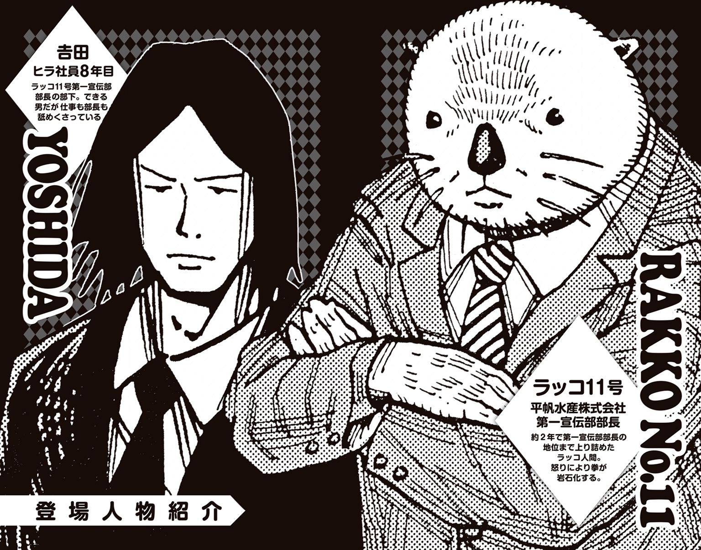

| ラッコ11号 圏貝編 もしも！平帆水産株式会社第一宣伝部部長じゃなかったら | |
| 平丸一也 & ひなたしょう | |
この本は縦書きでレイアウトされています。
また、ご覧になる機種により、表示の差が認められることがあります。

CONTENTS
この作品はフィクションです。実在の人物・団体・事件などにはいっさい関係ありません。
もしも、あのときこうしていれば......。
そんなことを考えたことはないだろうか。誰しも一度くらいはあるはずだ。夜寝る前に昔のことを思い出したとき。あるいは、夢の中でなつかしい友人たちと出会って目覚めたとき。ふと過去の自分の行動を振り返ることがある。
――なんであのときああしなかったのだろう......。
だとか、
――どうしてあんなことをやってしまったのだろう......。
とか、
――今ならああいう風に言い返せたのに......。
なんて思うことが、きっとみんなにもあるはずだ。
なぜならば、人間とは後悔する生き物だからだ。
そして、ラッコ人間である私もまた後悔する生き物である。ちなみにラッコも後悔する生き物である。あのときあのちょうどいい大きさの石を失くしていなければ、この貝をもっと上手に割れたのに......！ こんな感じだ。この私――平帆水産株式会社第一宣伝部部長ラッコ11号が言うのだから間違いない。
さて、ご多分にもれず、この私も今まさに後悔しているところであった。
夜。帰りの電車に乗るため、早足で駅構内を歩きながら、ふとこんなことを考える。
――もしも、あのときあの仕事をもっとがんばっていれば、あるいは、あの仕事を断っていなければ、私の知名度は今よりももっと上がっていたのではないか、と。
ラッコ人間でありながら、サラリーマンとして毎日働き、第一宣伝部部長としてよくわからないテレビＣＭにも出演し続けた......。その結果、果たして私はどのくらい有名になったのだろうか。平帆水産株式会社第一宣伝部部長ラッコ11号の知名度は、一体どれほどのものなのだろうか。気になって気になってしかたがないのだ。
もしも、あのとき違った行動をとっていれば、今の私は今とは違う別の未来を生きていたはず。今よりももっともっと有名になった未来だってあったはず......。ここ最近、毎日毎日そのようなことばかり考えてしまう。
なぜそのようなことばかり考えるようになってしまったのか......。理由は、すぐに思い当たった。
つい先日のことである。
道行く人が、通勤途中の私を見つけて指さした。そして言ったのだ。
「あっ、ラッコ11号だ」と。
ここまではいい。いつもどおりだ。だがしかし、
「は？ ナニソレ？」
一緒にいたもうひとりが、そう答えたのだ。
我が耳を疑ったね。いつもならば、
「本当だ。やっぱり本物はキモイな～」
そんな答えが返ってくるはずのところでこれだ。
「誰それ？」ですらない「ナニソレ？」とは、一体どういうことなのか。
「あっ、ラッコ11号だ」
「本当だ。やっぱり本物はキモイな～」
このふたつの台詞はこれでセットなのがデフォではないのか。道行く人のもうひとり、お前はいつもそういう台詞を言う役とかじゃないのか。いや、別に「キモイ」と言われたいわけではないのだが、本当は「キモイ」と言われるのだって傷ついているのだが、それでも「ナニソレ？」よりは、「ナニソレ？」よりはマシ......っ！
そう、まさにこの瞬間だ。
今まで積み上げてきたものが、一瞬にして瓦解したかのような、精神的に打ちのめされたというか、突然すべてがむなしくなったというか、空虚に感じるようになってしまったというか、いくら私ががんばって働いても、どうせ百年後にはみんな死んでいるとか、歳下の美人に甘えたいとか、そんなことばかり考えるようになってしまったのだ。
明滅をくり返す蛍光灯をぼんやりと眺めながら、思い出す。確かにあのときからだと思い出す。あれ以来、自分の知名度というやつが気になってしかたがないのだ。
そういえば、こんなこともあった。
あれは、大手有名ファミリーレストランチェーンと、我らが平帆水産がタイアップした『ヒラホー！ みんなのシーフードキャンペーン』での出来事だ。
キャンペーン中に対象となるシーフードメニューを注文すると、なんとこの私――ラッコ11号第一宣伝部部長のクリアファイルがもらえるという、とてもとても素晴らしい企画だったわけなのだが――
私、キャンペーン中に行きました。自ら。
ご本人堂々の入店。これはお店にいたお客さんたちもみんな喜んでくれるだろうと思いきや、普通に案内されただけ。普通にというか、美人の店員さんに爽やかな笑顔で出迎えられて嬉しかったわけだが、確かに思えばこのときすでにまわりのお客さん誰ひとりとしてリアクションしていなかった......。老夫婦も、カップルも、ママ友グループも、自分たちの会話に夢中で私のことなど視界にすら入っていなかった......。そこで気がつくべきだったのだ......！ しかし、そのときの私はそんなことにまで頭が回らないでいたのだ。
とにもかくにも、私はレジの様子を見張れる席に座り、和洋中取りそろえられた豊富なメニューを開きながらお店の様子を観察していた。選んだのは無論シーフードメニュー――ではなく、おいしいおいしいハンバーグだったがね。なぜシーフードメニューを選ばなかったかって？ お前は自分の顔が載ったクリアファイルをもらって嬉しいのか？ いや、というか、魚貝類は苦手なんだ......。
むしゃりむしゃりと鉄板焼きハンバーグを食べながらレジを見つめていると、会計にやってきた女子高生たちが私のクリアファイルを受け取っているのが確認できた。「うんうん」と満足しながら頷く私。クリアファイルを受け取って、けらけら笑う女子高生。
「なにこれー？ 意味わかんないんだけどー」
「あたしこれ知ってるー。なんかぁ、ラッコ13号とかいうやつー」
――ぜ、前後賞ですらない......っ！
食べかけのハンバーグをぽろりと皿の上に落として、私は愕然とした。
「違うって。ラッキョ11号じゃなかった？」
――ついに未知の生命体が......っ！
カシャンとフォークを落として、私は愕然とした。
――な、名前すら覚えてもらっていないなんて......！
慌てて私はメニューを確認した。載ってる......。『ヒラホー！ みんなのシーフードキャンペーン』特製のメニューに、私の写真載ってる......。
「うおお、これが私のおすすめだ――!!」ズギャーン！
ＣＭでお馴染みラッコ11号第一宣伝部部長オススメ！ とか載ってる......。
「今なら平帆水産株式会社第一宣伝部部長ラッコ11号のクリアファイルがもらえます」
とか、田がしたり顔で言ってる。
――こんなにも書いてあるのに、名前すら......っ！
しょせん私はこんなものなのか......。打ちひしがれながらも、とりあえず私はハンバーグを完食してデザートを頼んでみたりした。
世間の風は冷たい。同時に、夜風もまた冷たかった。
駅の入り口から吹きこんでくる冷たい風に、私はブルリとこの身を震わせた。
――どんなにがんばっても、こんなもの......。
そんなことを考えると、自然と溜息が。と、そこに――
「あっ、もしかして！」
突然、声が響いた。駅構内のベンチに腰かけていた大学生風の若い男が、私を指さして立ち上がったのだ。ふいのことに、驚いてしまう私であったが、男は笑顔で語りかけてきた。
「テレビとかによく出てた、あの有名なラッコですよね？」
そのたったひと言に、私は救われた。思わず感涙にむせびそうになりながらも、私は訊ねる。
「し、知っているんですか私のことを？」
すると男は、驚いた顔をして「当たり前じゃないですか」と声をあげた。
「あなたは日本......いや、世界で一番有名なラッコのキャラクターじゃないですか！」
「そっ、そんなに......。ああ、ありがとうございます。ありがとうございます」
嬉し涙を堪えながら男の手を取り握手する。ああ、いる。ちゃんと見てくれている人が確かにここに。ここ数日嫌なことばかり続いたせいで、私はすっかり精神的に参ってしまっていたのだ。だがしかし、もう大丈夫だ。ファンのたったひと言が、私の心を救ってくれた。私はもう、大丈夫だ。世間の風が冷たいなどと、一体誰が言ったのか。こんなにも、あたたかいではないか。こんなにも嬉しいことが、あっていいのか。
ニコニコしたまま、男が続けた。
「いやあ、しかし嬉しいなあこんなところで会えるなんて。僕ねえ、子供の頃アニメでずっと観ていたんですよ」
――あ、あれ......？
ブンブンと力強い握手をしたまま、男がよくわからないことを言いだした。
そして――
「そういえば、あのよく一緒にいたアライグマ――」
「アァッ!? それはぼのぼ――ち、違いますっ！ 人、いや、ラッコ違いですっ！」
握手を振りほどき、鞄を抱え、私はその場から脱兎の如く逃げ出した。もう、泣きそうだった。嬉し涙が一瞬にして真逆の涙に変わりそうだった。
私が走っていると、前を歩いていた女性が振り返った。彼女は、私を見るなり口を開いた。
「あっ、あの有名な！」
とりあえず、その場で停止し、次の言葉を待つ。
「よくＣＭで見かける！」
「ＣＭ！ そうなんです！」
コクコクと頷きながら私はニコッと微笑んで女性のもとへ歩み寄った。女性は、私を指さしながら、はいはいわかっていますよみたいな含み笑いをしてひと言。
「ピンクの小粒――」
「そのラッコじゃないっ！」
ついに涙があふれてきた。ダッと女性を追い抜き、私は泣きながらホームへと続く階段を駆け上がった。
もうダメだ......。誰も私のことを正確に思い出してくれない。一体なにがいけないのだろうか......。名前か？ 名前が覚えづらいのか？ そんな馬鹿な......！ 平帆水産株式会社第一宣伝部部長ラッコ11号――こんなにも覚えやすいというのに！
涙で前が見えないとは、このことか。階段を駆け上がっているところで、私は前から来たふたり組の男とぶつかりそうになる。慌てて体をひねる。肩と肩がぶつかり、バランスを崩しながらも、私は階段を上り終えた。
「おぉぉいっ、痛えじゃねえかコラァ！」
背後からそう呼び止められる。見るからに、がらの悪そうなサラリーマンであった。
「ふざけやがってこの野郎が！ あぁ？ ラッコみたいな顔しやがって！ 俺をナメてんのか！」
酒臭い息とともに、ホームに響き渡るほどの怒声を浴びせられる。
「す、すみません......急いでいたもので......」
酔ったふたりの男に因縁をつけられ、私は怯えながらモゴモゴと謝った。
すると――
「んん？」
もう片方の男が、ずいっと赤ら顔を近づけて私をまじまじと見つめはじめた。
「あ、あの......すみません......なにか......？」
男となるべく目を合わせないようにしながら、私は仰け反った。
「あれ......？ あんたもしかして、テレビとか出てる人？」
いきなり、そんなことを訊いてくる。
「な、なんだ？ 芸人かなにかなのか......？」
もうひとりの男が、驚いた様子でそんなことを。私の心臓が、ドクンと音を立てた。緊張しながら、待つ。
「あっ、思い出した！」
赤ら顔の男が、大袈裟な動作でポンと手を叩いた。
「ＣＭに出てるだろ？ な？」
私は無言でコクコクと首を縦に振った。だが、安心するのはまだ早い......ここからが本当の戦いだ......。固唾を吞んで、待つ。
「ＣＭで、よく変なコスプレして『ヒラホー』とか言っている――」
「あっ、平帆水産のＣＭか！」
「ああっ、それは確実に私です！」
人は見かけによらないというか、まさかこんな酔っぱらいに思い出してもらえるなんて思ってもみなかった......。ああ、ありがとうありがとう。一瞬岩石の拳で殴り倒して山にでも埋めようかと考えてしまった自分が恥ずかしい。よかった......本当に......。殴らなくてよかった......。
「――ラッコ課長とかいうやつ！」
音が、消えた。風がピタリとやむ。私は呆然とその場に立ち尽くした。
「いや違うだろ」
もうひとりの男が、しかしすぐさまそれを否定してくれた。絶望の淵へと突き落とされた私の頭上に、一筋の光明が今まさに降りそそいでいた。
闇を切り裂いて、ホームに電車がやって来る。バタバタと背広をはためかせながら、私は期待をこめて男を見つめていた。
「確か、なんかもっと偉い感じだったろ......なんだったかな、ぶ、ぶ......」
そう、私はもっと偉いのだ。課長など束になっても敵わないほどの存在なのだ。平帆水産株式会社第一宣伝部部長は、それほどまでに偉いのだ。
「頭に『ぶ』がついたんだよなぁ......。よく聞く言葉で......」
昇進しろ......昇進しろ......。あと一歩だ......。必死に念を送る。同時に、男が「あっ」と声をあげた。思い出したのだ。
「ラッコ武将だ!!」
「おぉぉいっ、それだよ！」
ふたりして顔を見合わせて、笑顔でそんなことを。ブチィッ、と何かが切れた。
「酔い覚ましＷ橄欖石ソレアイト――!!」
ウコーン！ と音を立て、目の前のふたりに岩石の拳でアッパーをくらわせる。ぽーんと放物線を描きながら飛んでいったふたりは、到着した電車の開くドアに、すぽーん。駆けこみ乗車ならぬ、中距離弾道ミサイル乗車で車内へと突入していった。
『ダァ閉まりまぁす』
アナウンスとともに、ぷしゅーと閉まるドア。しだいに速度を増しながら走り去っていく電車。夜の闇の中に車内から漏れた明かりが消えていく。私は、ハァハァと怒りに息を切らせながら小さくなっていく光を見守り続けた。
「ハァハァハァ............はぁ......」
しかしそれもまた、すぐに溜息に変わる。
「そうか......そうだな......。みんないちいち、ＣＭに出ているラッコ人間の名前なんか気にしないだろうな......」
私は自嘲気味にそう言った。
確かに、それはそうだろう。みんな忙しいのだ。忙しいなかラッコ人間のことなど考えている余裕はない。私とて、テレビのＣＭで流れている歌を聞いたって、それをわざわざ調べてアーティストの名前を覚えて後日買いに行こうなんて思わない。興味のないものに対してはそんなもの。
だが――
やはり、むなしい。
どんなにたくさんのＣＭに出演しても、すぐに飽きられ忘れ去られてしまう。きっと一年後、いや五年後十年後......時が経てばもっと、忘れ去られていくのだろう。そうしたら、世界中の誰もが私のことを忘れてしまったとしたら......。
考えるだけでも、恐ろしい。これほどまでに必死に働いても、誰の記憶にも残らないのだとしたら、今私がやっていることのすべては無駄だということ......。
惰性で会社に行き一日を終える毎日。私の毎日はただそれだけ。自由な時間などありはしない。五年後も十年後も、私はこんなことを考えながらトボトボと同じ道を行ったり来たりするのだろうか。それではまるでゾンビのようではないか。
――いや、それならばいっそのことゾンビの方が、サラリーマンよりも幾分かマシかもしれない......。
ついにはそんなネガティブなことまで考えてしまう。
誰の記憶にも残らず、誰にも感謝されず、ただひたすら働き続けるサラリーマンとは、一体なんなのか。
向かいのホームに、高校生のグループがたむろしていた。塾、もしくは部活の帰りだろうか。それともカラオケかゲームセンターか。いずれにしても、彼ら彼女らは楽しそうだった。コンビニの袋とケータイ電話片手に、みなで笑い合っている。羨ましい光景だ。
――学生ならば、会社に行く必要はない......。
ふと、そんなことを考える。しかし、時は戻らない。第一、私は義務教育を受けたことがない。学生生活がどういうものなのか――それはマンガとかドラマとかで見た断片的なものでしかないのだ。
ああ、だが、もしも。もしも学生生活を送ることができたら。あるいは、私は今とは違ったラッコ人間になっていたのかもしれない。その世界の私は、将来どういった職業に就いていたのだろうか。そんなことを考える。
――今のようなサラリーマンにならなかったとしたら......。
もっともっと直接的に人の役に立てる仕事がいい。目立ち、かっこよく、おまけに人々から感謝されるような――そんな仕事......。
颯爽と難事件を解決するハードボイルド探偵......。
いっそのこと地球の平和を守る正義のヒーローなんてのも......。
けたたましい音に、はっと我に返る。目の前で、電車のドアが開いていた。
――探偵にヒーロー......。なにを馬鹿なことを......。
現実では決してありえない夢物語にまで逃避するなんて......。疲れているのだ。
私はブンブンと首を振って、電車に乗りこむ。
人っ子ひとりいない車内に腰を落ち着け、なにとはなしに窓の外を見やる。真っ暗な窓に映った覇気がまったく感じられないラッコ人間と目が合った。
人はなぜ働かなくてはならないのか。
その日も、私はそんなことを考えながら歩いていた。朝っぱらからもうすでにこの精神状態。それもこれも、ひとえに過酷極まりない満員電車のせいである。あまりにも混雑しているが故、いっそのこと屋根に......などと考えてしまう。あぶないところだった......。
ひとつだけ言えること。それは、お巡りさんに怒られるときのあの怖さ。衆人環視のもと正座をさせられて「は？ 屋根に？ そのほうがラクだと思った？ あんたいい大人がなにしてんだ！」と延々と説教されるというつらさ。この私を反面教師にして、みんなはどうか、電車の屋根に乗ろうなどという馬鹿な考えを起こすのだけはやめてくれ。いや、やめろ。ホントに。
「朝っぱらから......精神的に疲れた......」
よろめきながらも、律儀に会社へと向かう私。
しかし――
ああ、仕事などしないでふらふらしていたい。食べたいものを食べたいときに食べてふらふらしていたい。そうだ、今日の夕食はビフテキにしよう。やはりビフテキはいい。もはや家に帰ったらなにを食べるかとか、そのくらいしか今の私には楽しみがないのだ。
トボトボと歩きながら思う。
――働かずにふらふらして食べる......か......。
だがそれは叶わぬ夢。されど見果てぬ夢。
ラッコ人間ということでこのつらく苦しい人間社会で生きていくことを余儀なくされた私は、税金を納めなくてはならない存在であった。海に浮かびながら貝を叩いているラッコならば税金を払わなくてもいいのに、それがどうだろうか、ラッコ人間となった瞬間途端に税務署の職員が私を付け狙うようになる。半額にしてくれたっていいじゃないか半額に。ラッコの分を免除してくれたっていいじゃないか。国は私にのみ適用されるラッコ控除を設けるべきだ。
ガーッと自動ドアが開く。なんやかんやで結局はこうして出社してしまうのが、私のいいところでもあり悪いところでもあるのだな......。
はあ、と溜息をつき顔を上げると――
無惨にも散らばった書類。鉢ごとひっくり返って土がこぼれている観葉植物。壁には大きな穴が空いており、至る所に割れたガラスが散乱していた。
「なっ、なんだこれは......!?」
いつもとは違う異常な光景。平帆水産のエントランスがまるで廃墟のようになっていた。
「.........？」
受付カウンターの隅に、人影が見えた。背広を着た男の後ろ姿が見える。一体なにがあったのだろうか。
「ああっ、そこの人！ すみません！」
たくさんの人がここを通ったのだろう。散らばった書類には、靴跡がくっきりとついていた。私はなるべくそれを踏まないように、ぴょんぴょんと早足で駆けていく。
「すみません、あの、これは一体......」
私はその男の背中に声をかけた。男の着ている背広は、よく見るとボロボロだった。いや、ボロボロどころではない。遠目では気がつかなかったが、ところどころに血と思われる染みが付着しているではないか。
「ま、まさか、どこかにケガを......!?」
驚いた私が声をあげると、ひどく顔色の悪い男が「あー」だとか「うー」だとか声をあげて、モザイクのかかったなにかを食べながら振り返った。
あまりにも凄惨なその光景に、思わず私は固まってしまう。鬼のような形相でホタテ貝を貪り食う人面ラッコの浜田くんを思い出すことによりなんとか冷静さを取り戻した私は、慌てて後退った。
しかし、ずるんと書類を踏んで、尻餅をついてしまう。男がモザイクのかかったなにかをくちゃくちゃと食べながら、緩慢な動作で向かってくる。
「ひぃぃっ!? なっ、なにかを食べている！ モザイクがかかっていてよく見えないが、確実に肉的ななにかを食べているッ！」
私が悲鳴をあげると、男が答えた。
「うあぁぁあああああ肩ロースぅぅぅ......」
「肩ロースなの!? ......なんのっ!?」
男がシャーッと口を開いて、尻餅をついたままでいた私の肩に嚙みついてきた。
「ああああっ、私のだったー!?」
肩に、がしがしと歯が食いこんでくる。あまりの恐怖に、私は無我夢中で拳を振り上げた。
「いやあああっ!? 斑岩ー!!」
岩石に変化した拳が、男を殴り飛ばした。吹き飛んで、近くにあった椅子に背中を強打する男。だがしかし、何事もなかったかのようにふらふらと立ち上がったかと思ったら、再び私目がけて襲いかかってくる。
――痛みを感じないのか......!?
「なっ、なんてことだ......これではまるで......」
刹那、脳裏をよぎるある単語。しかし、すぐに私はそれを否定する。
「そんなことありえない......っ！」
ぎゅむーっとヒゲを引っ張ってみる。
「ああっ、痛い!? ゆ、夢じゃないッ!? これは現実か!?」
『ラッコ11号』の作中でもっとも多いと噂される夢オチという可能性が一瞬にして絶たれた。私は、自分が相当危険な状況に立たされているのだということを改めて自覚した。
「に、逃げなければ......っ！」
あたふたと立ち上がり、その場を離れようとする。しかし――
物陰から、男と同じようにボロボロで血まみれのサラリーマンが、わらわらと堰を切ったかのようにあふれ出てきた。みな、虚ろな瞳で「あーあー」うめき声をあげながら、腕を前に突き出して、酔っぱらいのようなおぼつかない足取りで私に向かってくる。
気がつくと、私は取り囲まれてしまっていた。もはや逃げ場はない。
私を取り囲む無数の人の群れ。見ると、サラリーマンだけでなく女子社員や清掃員のおじさん、警備員の姿もそこにあった。
「これではまるで――」
ここまでくると、もう、確信するしかない。これは紛うことなき現実。しかし、現実ではありえない――あってはならない出来事が、今私の目の前で起こっている......！
「ゾンビじゃないか......」
流れ落ちた冷たい汗が、ワイシャツに染みこむ。私はガクンと膝をついた。映画やゲームでしかありえない世界が今、現実となって私に牙を剝いている。しかも、ここは現代日本。映画やゲームと違って銃火器なんぞは手に入らない。あるのは岩石の拳のみ。岩石の拳オンリーの接近戦で、ゾンビだらけの世界を生き抜けというのか。無茶苦茶だ。無茶苦茶どころか無理だ。斑岩をもろに浴びた男など、今なお元気に（？）「肩ロース」などと叫んでいるというのに。
「あああ、ど、どうすれば......田、田はいないのか......？」
気がつくと、私はゾンビの群れの中から必死に田の姿を捜していた。プルンプルンと伸ばしたロン毛のゾンビを捜す。だが見つからない。展開としてはそろそろゾンビ田などが出てきてもいい頃合い。なのにいない。田がいない。田はいつもそうだ。肝心なときにはいつもいない。それがあの田という男なのだ。
ゾンビがゆっくりと迫る。じわじわと、その包囲網を狭めてくる。これでは生殺しではないか。いつもの『ラッコ11号』らしからぬ展開に、焦りが募る。
「ん？ ......あぁっ！」
と、そのとき、ゾンビの大群の中に見知った顔を発見する。
「しゃ、社長ッ!? それに役員連中まで!?」
なんと、平帆水産のトップたち――その面々が、みんなそろってゾンビ化していたのだ。青白いどころかくすんだ顔色をして、「カネェェェ」と声をあげている。
「も、もうダメだ......平帆水産はもうおしまいだ......」
ううっ、と声を漏らし、私は頭を抱えた。社長や役員がゾンビになってしまったら、おそらく平帆水産は倒産してしまうだろう。なぜならば、ゾンビに経営の才能があるなどとはとてもじゃないが思えないからだ。しかも、さらに最悪なことに、我々が扱っているのは輸入物の海産物。食品とゾンビを一緒にしてしまうのは衛生的によくないような気がする。以上のことから考えて、もはや平帆水産の未来は絶望的であった。
「そんな......このままでは平帆水産株式会社第一宣伝部部長ラッコ11号という肩書きがなくなってしまう......」
私はわなわなと震えた。肩書きがなくなったらどうなる？ それではただのラッコ11号。また『救世主編』初登場時と同じ状態。なにかよくわからないがとりあえず岩石の拳で人を殴るただのラッコ人間に逆戻り。むしろ、そんな状態で、当時よく打ち切られなかったものだ......。連載が長続きし、ノベライズまで発売されれば、ゾンビネタのひとつやふたつあって当然ということなのか......。あるいは、新妻先生の『ＺＯＭＢＩＥ☆ＧＵＮ』があまりにも人気だから影響を受けたとでもいうのだろうか......。
――集英社、これがお前たちのやり方か！
ぐぐぐ、と拳を握りしめ私は憤る。このままでは、このままでは、平帆水産が潰れてしまう。今日は社長や役員を交えた企画会議があったというのに、全員がゾンビ化してしまっては、もはや仕事どころでは――
「はっ!?」
ピキーンと、脳内に革命が起きた。すでに目前にはゾンビたちの手が迫っていた。しかし私は、冷静に騒ぐことなくじっとゾンビたちの様子を観察していた。書類の整理もしないで、電話にも出ず、なんの仕事もしていないのにふらふらとしながら食べたいときに食べたいものを食べるその姿の、なんと美しいことか。
――ゾンビにさえなってしまえば、もう働かなくて済む！
これ以上ないくらいの、名案であった。
私は両腕を広げ、無抵抗のままゾンビの群れに捕まった。
「あー、たいへんだー」
わざとらしく声をあげる。
「本当は仕事がしたかったのに、ゾンビ化しちゃったらしょうがないなー。しょうがないなー」
みなに聞こえるように、そんなことを大声で宣言する。思わずニヤけそうになってしまう。ダメだまだ笑うな......こらえるんだ......。
カプコンッ。カプコンッ。カプコンッ。
次々とゾンビが嚙みついてくる。腕や脚を嚙まれる。
「うぅわぁあぁああああゾンビ化してしまうううう！ これはゾンビ化してしまうぞおおお！ これではもう、仕事をすることはできないいいいい！」
口もとを緩ませながら、叫ぶ。
そして――
「あ、マズ......」
ゾンビたちが顔を背けて、一斉に退いていった。
「ゾ、ゾンビらしからぬ素の反応ッ!?」
先ほどまで大挙して押し寄せていたゾンビが、いなくなる。私の周囲だけぽっかりと空間ができる。逆包囲網が完成した。
「な、なんだこれはッ!? いじめかッ!?」
腕を前に突き出しながら、「あー」だとか「うー」だとか「肩ロース一九八円」だとか言いながら、のろのろと好き勝手に解散していくゾンビたち。ゾンビたちの虚ろな瞳にすら映らなくなってしまった私は、慌てて近くにいたゾンビにすがりついた。
「ま、待ってくれ！ 責任もってちゃんとゾンビにしてもらわないと、こっちとしても困るんだが......」
「あ、でもなんか毛が多くて食べづらいというか――」
「ゾンビが普通にしゃべるんじゃないっ！」
ドゴーンと岩石の拳で殴り倒す。
「私をゾンビにしろっ！ 私をゾンビにしろおおおおっ！」
うおおっ、と岩石の拳を振り回しながら叫ぶ。逃げ惑うゾンビたち。まさにちぎっては投げちぎっては投げ状態で、目の前にいるゾンビを次々と殴り飛ばしていく。殴り倒され気を失うゾンビたち。吹き飛ばされて宙を舞うゾンビたち。みぞおちを殴られてお腹を押さえながらぐったりとうずくまるゾンビたち。た、たいへんだ......このままでは、このままでは、意外と岩石の拳だけで生き延びられてしまうじゃないか！ 私だけサラリーマン......なんて恐ろしい！
ゾンビよりもなによりも恐ろしいもの――それは仕事。
「ゾンビになりたいっ！ 私はゾンビになりたいっ！」
叫びながら暴れていると、突如体調に異変が。脈が速くなっていく。全身の血液が沸騰してしまったかのように熱くなる。これは――この感覚は――
「そっ、そうか！ 嚙まれたときの唾液......！ ゾンビ化するウイルス的なものが、ようやく私にも効いてきたんだ！」
全身を包みこむ万能感。世界がキラキラと輝いて見えた。目の前に広がる美しい世界。今まさに、ただのラッコ人間を超越した、ラッコゾンビ人間が誕生した。
流れるように、すっと腕を前に突き出す。突き出してうなり声をあげる。
「あぁああううう......魚貝類ぃぃぃ食べたぁぁぁい......なぜだッ!?」
なぜだろうか、ゾンビ化して体質が変わってしまったのだろうか？ 無性に魚貝類が食べたくなってきた。エビ、カニ、ホタテにウニ......そうだ、今夜は寿司にしよう。ビフテキなどもってのほか！ 肉など喰っていられるか！
「イセエビッ！ イセエビィィィッ！」
うなりながら、私は階段を上がっていく。
「出前ェェェッ！ スシデマエェェェッ！」
ふらふらと自分のデスクに向かう。第一宣伝部部長ということで、私のデスクは個室にあった。他の部長は社員たちと一緒に仕事をしているというのに、私だけ個室。それはなぜか？ それは私がとてもとても偉いからだ。私だけがこの会社で特別扱いされるほどがんばって仕事をしているからであって、これは決して隔離されているわけではない。誰もがわかりきっていることではあると思うのだが、隔離されているわけではないということを、あえて今一度ここに明記しておく。
「フジヤーマッ！」
叫び、バン！ と個室のドアを開く。すると中にいた男が振り返った。
「ああ、部長。遅かったですね」
振り返ったのは、ツヤのある黒髪をこれでもかというほど伸ばすという社会人にあるまじきなんとも舐め腐った髪型の男――ロン毛......いや、田であった。
田は、他の社員とは違ってぴっしりとした背広を着ていた。無論、そこに血などは付着しておらず、血色の良い顔をして――つまりは、いつもと変わらぬ姿でそこにいた。
新キャラ・まだゾンビ化していない田――ではなく、入社八年ヒラ社員の田くんが、あまりにも自然な姿で仕事をしていたのだ。
「田くん田くんオォォォ」
私は腕を前に突き出しながらよろよろと入室。緩慢な動きで恐怖を誘う。
「部長、遅刻されては困ります。今日は企画会議があるって言ったじゃないですか」
「オォォォ部長ではない、私は平帆オォォォ水産株式会社第一宣伝部部長だ。省略することはゴポォ!? ゆ、許さないッ！」
吐血しながらも省略は許さない。それが私という男なのだ。役職はフルで呼べフルで。
「はあ......それでですね――」
思わず吐血してしまった私を一瞥して、田が続ける。
「このように、次のキャンペーンではもっと消費者のニーズに合わせて――」
企画会議で使用する書類に掲載された円グラフを指し示しながら、田が説明する。私はさらに「オォォォ」と不気味なうなり声をあげながら、田に近づいていく。
「おそらく会議ではこの部分の説明を求められると思うので、今のうちに関連する資料にも目を通しておいてください」
「田くんオォォォ生きてる事は楽しいかオォォォ......オォ......あ、あの......田......くん......？」
「さあ部長、会議まで時間がないですよ。あ、あとその前にこの書類にハンコを――」
「なんなんだ君はっ！」
ブハァッ！ と血を吐いて、私はブチギレた。ビキビキと拳が岩石に覆われていく。
「上司がゾンビ化しているというのに、なにが会議だ！ なにがハンコだ！ そんな場合じゃないだろう！」
「はあ、ですが、会議が遅れると取引先の会社にも迷惑がかかりますし......とにかく先にこの書類にハンコ押してもらっていいですか？」
「田くん......あまりこういうことは言いたくないのだが、君は少しおかしい！」
「しかし部長、取引先との信用は、お金では買えません」
「なんという正論！ だが、社長も役員もゾンビになってしまった今となっては、そんなサラリーマン世界の常識など通用しない！」
「取引先の社員はまだゾンビ化していませんが」
「いずれするよッ！ もはや仕事どころではなくなるよッ！」
ハーハーと息をつく。田......一体どこまでこの私を――どころかゾンビを舐め腐れば気が済むのか......。ゾンビだからいずれ腐ることに変わりはないとしても......。
田が書類の束を持ってズイッと迫る。
「部長、話はあとで聞くのでとりあえずハンコだけでも」
「もうやだ怖いっ！ 怖いッ！ ほんとなんなんだ君は！」
あまりの恐ろしさに私は後退る。書類とハンコを手に田がズンズンと迫る。私はオォォォオォォォ言いながら逃げ出した。
逃げる私に追う田。逃げるゾンビに追う人間。
映画やゲームではまずお目にかかれない奇妙な構図がここに生まれた。個室の中を机を中心にしてぐるぐると回る。
机を盾にしながら左へ回ったり右へ回ったりをくり返す。さながらいたちごっこのようにくり返す。時として巧みにフェイントをかけてくる長髪ハンコ野郎に怯えながら私は泣き叫んだ。
「こっ、これでは逆！ 本来であれば君が怖がるべきなんだ！ ゾンビ化した上司に恐れおののき恐怖のあまり取り乱しロン毛などを毟り取りながら子供のように泣き叫びショッピングモールあたりに逃げこんで籠城するべき......っ！ それなのに......！」
と、そのとき――
入り口付近で大きな破壊音。ドアがぶち破られた。
わらわらと部屋に入ってきたのはゾンビ化した社員たち。
「そうか、社内唯一の生き残りである田くんを狙ってきたんだな」
私はほくそ笑んだ。どうだ田め。ざまあみろ。上司を――そしてゾンビを甘く見た報いだ。
部屋中に響き渡る数多のうめき声。絶望の大合唱で部屋が満ち満ちていく。
キシャーッと口を大きく開き、抱きつくように田に襲いかかるサラリーマンゾンビ。田はそれをひょいと躱す。
次いで、真横から飛びかかる女子社員ゾンビ。田が瞬時にバックステップ。女子社員ゾンビは、そのまま前方の観葉植物に突っこんでいった。
ゾンビの攻撃を必要最小限の動きで避ける田に、今度は巨漢の警備員ゾンビが襲いかかった。はち切れんばかりに太い腕が振り下ろされる。
ばしっ、とそれを書類の束で捌くのと同時に、田のローキックが炸裂する。一撃で警備員ゾンビに膝をつかせ、行動不能に陥らせた。
くるりとこちらに向き直る田。
「ああそうだ。ところで部長、三枚目の資料なんですが――」
「すごいな君はっ!?」
あまりの出来事に、私は思わず声をあげた。
「というか、何事もなかったかのように話を進めるんじゃないっ！」
書類をパラパラとめくる田に抗議していると、部屋にやって来たゾンビたちが続々と退室しだした。
「ああっ、ちょ、ちょっと......!?」
私は慌てて入り口の前に立ち塞がった。
「おっ、おまえたち、なにをやっているんだ!? いくら田とはいえ、相手はたったひとり！ たったひとりなんだぞ!? 田から見ればこれはまさに多勢に無勢の状態！ 我々ゾンビがただの人間におくれを取るわけがないだろう？ そう、いくら田とはいえ、相手はただの人間！ 田は、人間なんだぞ！」
早口でそう喚きたてると、ひとりのゾンビが私の肩にポンと手を置いた。そして、ゆっくりと首を横に振った。
「そ、そんな......ああっ!?」
愕然とする私を、わりと――いやかなり強い力で突き飛ばして、ぞろぞろとゾンビたちが退散していく。床に手をついて、私は泣いた。
「お、おのれ田......田ぁぁぁ......」
しくしくと涙を流す。
「あの部長......ハンコを」
「うるさいっ！ なんてしつこい男だ！ そのしつこさ、さながらマンガ編集者！」
あまりのことに、ついに堪忍袋の緒が切れた。田め。いつもいつもこき使いやがって！
がばっと跳ね起きた私は、拳をビキビキと岩石化させた。
「もういい！ 毒を！ 毒攻撃をくらわせてやる！」
ゾンビ化＆岩石化の二重奏を味わうがいい。マグマのように激しい怒りが、この拳を岩にする。岩石の拳を振り上げて、私はカッと目を見開いた。
――見るがいい。
ラッコ人間をやめゾンビ化することによって手に入れた新たなるチカラ......。
これぞ新技・橄欖石アンデッドソレアイト――!!
「うおお、橄欖石アンデッどソンッ!?」
脳天から足の爪先まで、激しい衝撃が一気に駆け抜けた。危うく舌を嚙みそうになる。
田に殴られたのだ。椅子で。
「アッアァアッ......いっ、痛いっ!? なにをするっ！」
頭を押さえて、うずくまる。
「いえ、部長が突然岩石の拳で殴りかかってきたので......」
「だからといって上司の脳天に椅子を叩きこむやつがあるか！ いいか田くんよく聞け！ 人を、いや、ラッコ人間の頭部を椅子で殴ってはイケナイッ！」
「はあ......しかし部長はゾンビになったんですよね？」
「だっ、だからこそ、なおのこと葛藤するんだ！ そこは思い悩むところだろう？ 上司がゾンビ化して襲いかかってくるんだぞ？ 悩むだろう？ まだ人間の心が残っているかもしれないのに攻撃してしまってもいいものかどうか悩むだろう？ 元に戻せる方法があるかもしれないなかゾンビになったからといって攻撃してしまってもいいものかどうか悩むだろう？ いや、むしろ悩め！ 悩み、そして恐れおののき恐怖のあまり取り乱しロン毛などを毟り取りながら子供のように泣き叫びショッピングモールあたりに逃げこんで籠城しろ！」
「部長、ショッピングモール好きなんすか？」
「も、もう嫌だ......そしていつもいつも言っているが、私は平帆水産株式会社第一宣伝部部長だ......」
言いながら、私は泣き崩れた。
「ゾンビなのに......私はゾンビなのに......」
ぷるぷると震えながら愚痴る。
「ただの人間を超越した存在になったのに......ラッコ人間からラッコゾンビ人間へとパワーアップしたのに......あんまりだ......」
「ゾンビ化って、パワーアップって言うんですかね......？」
ついにはそんなことまで言われる始末。私は、ごしごしと涙を拭って答えた。
「それはもう、パワーアップもいいところだ。人よりも力は強くなるし、これはパワーアップどころか、もはや進化と言ってもいいくらいだ！ なにせこの身体、ほぼ不死身なんだぞ？ 不眠不休で活動できるんだぞ？ 極端なことさえしなければ、まさに不老不死と表現したって過言ではない！ 覚えておけ、それがゾンビ化だ！」
私は自信を持ってゾンビのすごさ――ひいては己のすごさをアピールする。
よく聞け田よ。お前の上司は、すごいのだ。そして偉いのだ。
しかし、その瞬間であった――
「不眠不休......ですか」
田の呟きとともに、直後、部屋の空気がビリビリと震えた――ような気がした。一瞬、田の口もとがニヤリと歪んだ。
「な、なんだ今のは!? 殺気ッ？ いや、凄みかッ？」
きょろきょろと部屋の様子を確認する。が、すでに部屋の空気は元に戻っている。ぱっと田に目を移すと、田もまた、いつもと同じように表情ひとつ変えていなかった。
「あ、あれ......？」
でも、なんだろう、とてもとても嫌な予感がする......。
「部長、これを」
どさり、となにか分厚い、振り回せば私の岩石の拳よりも威力があるのではないかと思えるほどに分厚いファイルが、机の引き出しから取り出された。それを手渡される。
「な、なんだこれは？ なになに、『平帆水産三十年計画』......？」
私がファイルの表紙に書いてあったタイトルを読みあげると、涼しい顔をして田が言った。
「それは、僕が考案する三十年後を見据えた壮大なプロジェクトです」
この男は一体なにを言っているのか......。意味がわからないまま立ち尽くす私に、田がいつになく真剣に説明しはじめた。
「この図を見てください。そしてこちらの表も。僕が思うに、三十年後にはこういった状態がこの業界のスタンダードになっていると思うんです。現在の常識では、ほぼありえない発想かもしれませんが、なんとかして早い段階でこういった状態にシフトしていけないものかと考えたんです。もちろん、最初の道のりは想像を絶するくらい困難なものになるかもしれません。それどころか数年単位でつらく苦しいときが続くかもしれませんが、不眠不休でやればきっといけるはずです！ ゾンビ化した部長ならば、大丈夫です！」
「............えっ？」
なにか、聞いてはいけない説明を聞いてしまったような......。いや、それどころかなにか最後の方にあってはならない台詞があったような......。
「わ、私が、なんだって......？」
おそるおそる訊ねてみる。
「ですから部長に、このプロジェクトをお願いしたいのです。急成長を続けるライバル企業に負けないためにも、二十四時間三百六十五日、寝る間を惜しむどころか寝ないでも働くことができる部長には、まさにうってつけの仕事です」
「............えっ？」
なんだろう。ゾンビ化のせいだろうか、耳がよく聞こえなくなってきた。それどころか、全身から冷や汗というかよくわからない色をした汁みたいなものがあふれ出てくる。ゾンビ化して血色の悪くなったであろう顔から、さらに血の気が引いていくのを感じた。ハァハァと呼吸が荒くなってくる。全身に悪寒が走り、身体がブルブルと震えはじめた。
「あまりにも壮大な――ともすれば荒唐無稽にも思えてしまうビッグプロジェクトでしょう......。でも、だからこそ長い目で見ることができる人材――ほぼ不老不死の、ゾンビ化した部長が適任なんです」
平帆水産の――さらには水産物加工業の未来を熱く語る田に、私は死にそうになりながら訊ねた。
「つまり、私に休まず、さっ、三十年間働き続けろ......と......？」
「はあ、まあ......」
「こんなものダメだッ！」
ドーンと馬鹿みたいに分厚いファイルを床に投げ捨てる。投げ捨てるというか、あまりの重さに投げ落とす。
「そ、そうですか......そうですよね......」
田が苦笑いを浮かべながらそんなことを。さすがに、いくらなんでもありえないことを言いすぎたと自分でも思ったのだろう。
「さすが部長です。やはり三十年ではダメなんじゃないかと僕も思っていたんです」
「............えっ？」
どさどさーっと、どこからともなくさらに分厚いファイルの山が。もはや魔術の域に達した田式収納術恐るべし。
「ひっ、『平帆水産五十年計画』ッ!?」
ファイルのタイトルを見て、私はゴフッと血を吐いた。
「むっ、無理だこんなのッ！ 死んでしまう！」
「部長はゾンビだから死にませんよ」
「そうだった......っ！」
目を見開いて固まる私の背中を、田が優しく叩いた。
「それじゃあ部長、働きましょうか？ 未来のために」
「ひっ、ひぃぃ」
全身の震えが、止まらない。ガタガタと震えながら腰を抜かしてしまった私の腕を、田ががっちりと摑んでくる。
「ゾ、ゾンビになってもサラリーマンである限り働かねばならない......っ！ これならば学生の方がいい......っ！」
首をブンブン振って泣き叫ぶ私。
人間とは思えぬ力で楽しそうに私を引きずっていく田。
ゾンビよりもなによりも恐ろしいもの――それは仕事。
そして、仕事よりもなによりも恐ろしいもの......それは――
「いっ、いやだこんな世界......こんな世界いやだあああああっ！」
本当に怖いのはゾンビでも仕事でもなく人間......いや、田。田なのだ......。
絶望とともに、私は目を閉じた。
嗚呼、我がラッコ人間前世
時は、群雄割拠の戦国時代。人々が戦に明け暮れる乱世。ラッコ人間たる私もまた、岩石に変化する摩訶不思議な拳をお屋形様に見初められ、家臣へと迎え入れられてしまったわけだが......。
「もうやだ......戦いたくない......出陣したくない......」
まもなく、隣国との戦がはじまろうとしていた。国境にて睨み合う両陣営。頼りにされているのかそれともされていないのか、私はその最前線に配置されていた。
私に与えられた使命は、ただひとつ。自軍の旗を持ちながらひたすら戦場を駆け回り目立ち続けるというもの。ただそれだけ。
ラッコ人間ということでただでさえ目立つのにこの仕打ち。いや、目立つからこそあえてこの役目を与えられたのだろう。目立つので敵も当然私を狙ってくる。これはすなわち陽動。命を懸けた陽動作戦なのである。懸けられるのは主にラッコ人間の命――すなわち私の命なわけだが......。
そして無論、敵に旗を奪われたり、旗を汚してしまったりしてはお屋形様の名に傷がつく。生き延びたとしても、それでは駄目なのだ。それではクビに......打ち首にされてしまう。
ラッコ人間というだけで、一体なぜこんな目に遭わなくてはならないのか。これならば、サラリーマン生活の方が百倍マシ......！ いや、ちょっと待て......サラリーマンってなんだ？ あぶない......あまりの恐怖に脳がおよそ四五〇年ほど未来へタイムスリップしてしまっていた。いや、タイムスリップってなんだ？ あぶない......あまりの（以下略）
――とにもかくにも、なんとしてもこの旗を死守しなければ......っ！
いそいそと旗を背中に差して、護身用の小刀を今一度確認する。陽の光を浴びてギラリと鈍く光る刀身に、怯えるラッコ人間の顔が映し出された。なにかあったら、この小刀で命を、自分自身を守らねば......。この刃で、自分の命を守るために、他の命を......。
私はプルプルと震えながら、うめく。
「なぜ人は戦わねばならないのか......。寝たいだけ寝て食いたいときに食いたいだけ食えるそんな世の中に生まれていれば、どんなに幸せか......」
ラッコとは、平和を好む生き物。ラッコ人間である私もまた、争いごとが嫌いであった。なぜならば、刀で斬られると痛くて死んでしまうからだ。私が死んでしまうとこの世からラッコ人間が絶滅してしまうので、それだけはなんとしても避けなければならない。
私の隣で、雑兵の田が腰にいそいそと鉄扇を装備していた。これから最前線での戦がはじまろうとしているこの非常時に、刀ではなく鉄扇。やはり田、その扇子が駄目。私はそんなことを考える。
もっとも、それはしかたのないことであった。田のような雑兵に武器などは支給されない。槍も、刀も、そして鎧さえも、彼らはみな自前なのだ。
ふう、と息をつき、私はやれやれと首を振った。なにも支給されない田と、旗を支給された私。田よ、この違いがわかるか？ 支給される私。雑兵とは違うのだ。たとえそれが旗だとしても......。
「敵襲ッ！」
不意に後ろを振り返り、田が叫んだ。刹那、誰かの悲鳴とともに鬨の声。自陣に鎧武者が刀を振り上げて雪崩れこんできた。なんだこれは。ありえない。前方の敵陣に動きはなかった。いや違う。背後から敵の奇襲部隊による襲撃を受けたのだ。ようやくそのことに気づいた瞬間、前方で睨みを利かせていた大軍が一気に動きはじめた。まずい、このままでは挟み撃ちにされる......！
焦りと混乱、そして極度の興奮状態に陥り、私の手は岩石に変わってしまっていた。
「アアァァッ、か、刀がッ!? 刀が抜けねえええっ!?」
岩石の拳がガチガチと刀の柄を叩く。頼みの綱の守り刀、抜刀不可。目の前で仲間が次々と斬り倒されていく。そんななか、長い黒髪を振り乱しながら、田が鉄扇で無双しはじめた。空高く飛び上がり鉄扇から衝撃波を飛ばす田。次々と敵を葬り去っていく田。「なんでっ!?」と叫ぶ私。
しかし、そんな私に刀を振りかざした鎧武者が迫る。私は「岩――!!」と叫び、泣きながら岩石の拳を振り回した。
岩石の拳が目の前の鎧を凹ませて吹き飛ばす。
――この岩石の拳......なにかを叫ばずにはいられない......っ！
だがしかし、私はこの岩の名前を知らなかった。ああ、モヤモヤする。そしてイライラする。いらだちが、私の拳をさらに強固な岩に変える。
うおお、と叫びながら、私は敵陣に向かって飛び出した。
「岩――!! 岩――!! 岩――!!」
アツモリーと音を立てながら、拳を振るう。飛んできた矢を叩き落とし、向けられた槍をへし折りただの棒きれに変える。
「岩、岩、岩ァァァ――!!」
馬ごと騎馬武者を吹き飛ばし、刀を受け止めては叩き折り、飛んできた鉄砲の弾をも殴り落とした。
――この岩石、なんなんだ！ 一体なんなんだッ！
後の世で言うところの『橄欖石ソレアイト』である。だが、当然その名前をこの時代のラッコ人間が知るよしもない。
私は無我夢中で戦場を駆け回り続けた。そんな私の後ろで、白目を剝き出しにした田がついに鉄扇から極太のレーザービームを発射しはじめた。
一体どれだけ「岩――!!」と叫び続けただろうか、気がつくと、あたりは静まりかえっていた。聞こえるのは、ハァハァという自分の呼吸音だけ。
――また、やってしまった......。
私は、がくっと膝をつく。見渡せば、そこには累々と横たわる数多の人。私と田以外、動く者はいない。
平和主義者を謳いながらこの有り様。私は感情が昂ぶると前後の見境がつかなくなるタイプのラッコ人間であった。
地面に手をついて、うなだれる。
「私は一体、どうすればいいんだ......」
「戦をすれば、いいんだよ」
ぽん、と田に肩を叩かれる。
この後、私は『鬼の岩ラッコ』の異名で近隣諸国から恐れられるようになるのだが、おそらくきっと、これは歴史に残らない......。
平帆学園。海にほど近いこの学園のまわりには、桜の木が立ち並んでいる。新入生を歓迎するかのように学園へと続く桜並木は、地元ではちょっとした観光名所のようになっていた。
同時に、桜はまた、この学園のシンボルでもあった。校章にも、そして詰め襟の制服につけられた真鍮製のボタンにも、学園のシンボルである桜が刻まれていた。
はらはらと舞い落ちる桜の花びらの中を、桜のマークが刻まれたボタンをキラキラと輝かせながらやって来る真新しい制服の集団。遥か彼方に目を向ければ、陽の光を浴びながらキラキラと光る水面――海が広がっている。海岸付近では、着水した桜の花びらが波間を漂い、洗われ、一か所に集まっていくという毎年春になると必ず見られる光景が、今日もまた変わらずに見られることだろう。
私は、缶の紅茶をじゅるると啜りながら、窓ガラス越しに見つめる。
三度目の桜を。三度目の春を。
「番長！」
桜――力強く雄々しき幹に、吹けば散るような儚い花を咲かせる憎いやつ。実に風流ではないか。願わくば、ラッコ人間もまた、そのような存在になりたい。真剣に、そう思う。毎年春だけ働いて、それでいて人々に愛されるようなそんな存在に......。
「番長！」
とりあえず、老後は桜の木の盆栽でも......。
「ラッコ番長！」
途端に、イラッとした。ぐしゃり、と飲み終わったスチール缶を片手で握り潰す。物思いにふけりながら桜の花びらを愛でていた私を、後ろからしきりに呼んでいるのは誰だ？ 子安さんか？ いや違う、この声は――
「番長ではない。私は平帆学園中等部三年ＳＥＡ組出席番号11番ラッコ11号だ」
言いながら、私は振り返る。それにしてもラ行までの名字が少ないクラスだ。出席番号は名前の順である。三年ＳＥＡ組は、異様なまでにラ行から先が多いクラスなのだ。だからラッコ11号でも11番。11号で11番。私はこの出席番号を気に入っていた。だから省略することは許さない。
振り返った視線の先、そこには思ったとおり学生にあるまじきロン毛の男。入学八年留年生の田の姿が。
田は「はあ」と素っ気ない返事をして、
「でも、この学園の――平帆学園中等部の番長の座は、やはりあなたにこそ相応しいかと」
そんなことを言う。そう言われると悪い気はしない。番長......か。
「思えば長い道程だった......」
私は、手のひらの中で紙屑のように丸まった、かつてスチール缶だったものを眺めながら思い出す。幼き日のつらい記憶を。
そう、あれは数年前、私がまだラッコ小学生だった頃の話だ。
ランドセルを背負って下校する私のまわりを、クラスメイトが取り囲んで囃したてる。
「や～いや～い、ラッコ人間ーラッコ人間ー」
私はプルプルと拳を強く握りながら憤る。
「く、くそう、そのとおりなだけになにも言い返せないッ！」
だがそれは、明らかに悪意がこめられた言葉であった。
「や～いや～い、おまえのかーちゃんラッコ人間ー。おまえのとーちゃんラッコ人間ー。そしておまえもラッコ人間ー」
囃したてながら、クラスメイトたちが私のまわりをぐるぐると旋回する。みなで手をつなぎ、さながらマイムマイムを踊るかのように私のまわりをぐるぐると旋回する。
「なっ、なんてことだ......家に、家に帰れねえ......ッ！」
進路をふさがれ、私は戦慄を覚えた。けらけらと笑いながら、悪意をこめた言葉でラッコ人間を傷つけながらぐるぐると旋回するクラスメイトたち――とても人間の所行とは思えないその光景に、私の我慢も限界に達していた。
ズギャーンと拳を岩石化させて、私は天に向かって咆吼する。
「オ......オクラホマミキサアァアアアアァァァ――ッ!!」
岩石の拳を無茶苦茶に振り回す。すると、リーダー格の少年の「散!!」というひと声で、周囲を旋回していたクラスメイトたちが一瞬にして散っていった。忍びの者か......。
「ハハハ、手が岩石化したぞ。おもしれー」
そんなことを言いながら、クラスメイトたちは方々へ逃げていく。誰を追いかけようかとおろおろとしているうちに、みんないなくなってしまう。いや、追いかけていっても、やつらを喜ばせるだけ。怒って追いかけてくる私をからかって、遊んでいるのだ。そう、これは遊び。軽い気持ちで行われる、ラッコ人間を使った遊びなのだ。
拳をぶるぶると震わせながら、私はひとりその場に立ち尽くす。
子供の社会は、残酷だ。他の人と少しだけ違うというただそれだけで、私にとって小学校は地獄のような場所であった。毎日毎日、人から指さされ、笑われ、ネタにされ......なんだ今と変わらないじゃないか......。もう嫌だ。なんかもうつらいし働きたくないな。大人になってもサラリーマンにだけは絶対になりたくないな。
ともかく――
他の人と少しだけ違うというただそれだけで、陰でコソコソとなにかを言われて笑われるということがどれほどつらいことか、それが小学生にとってどれほどつらく苦しいことであるか、それは体験した者にしかわかるまい。
――どうして僕だけがこんな目に遭うの？ そうだ。きっと僕が短気で、怒るとすぐに拳が岩石になるからみんなに嫌われてしまうんだ。いじめられるんだ......。
「あの頃は毎晩、そんなことを考えていた......」
そう言って、私は苦笑した。
「岩石うんぬんよりも、ぶっちゃけ見た目がラッコ人間でキモかったからいじめられていたんじゃないんすか？」
田がさらりとそんなことを。
「そんなわけないだろうッ！ ラッコ人間をなんだと思ってるんだッ！」
瞬時に、私の拳が岩になる。手のひらの上にのせていたスチール缶だったものが、カコン、と音を立てて床に落ちた。
目の前の窓ガラスを叩き割って飛び降り、近くにある桜の木に正拳突きをかましたい衝動を必死に堪えながら、私は深呼吸して気持ちを落ち着かせた。
「あれ以来、自分の嫌なところを少しでもなくしていこうと努力してきた......。その甲斐あってか、すぐにカッとなる短気な性格だった私も、今ではだいぶ丸くなった......」
再び窓の外を眺めながら、私は「ふう」と物憂げに息をついた。
「小学生の頃は、ひとりも友達がいなかったが、それも今では――」
「ああ、今もひとりもいませんよね」
「えっ？」
田のひと言に、私は思わず振り返る。いやなんだおかしいな......。一度窓の外に視線を戻して桜を愛でる。そして、
「えっ？」
思わず、田の顔を二度見してしまう。
田がなにか言ったような気がするが、まあいいだろう......。気のせいだろう。よく聞き取れなかったし。本当に。噓じゃなく。聞き取れなかっただけ......。
気を取り直して、私は再び思い出す。
孤独だったラッコ小学生時代。しかし、この平帆学園に入学してからというもの、私のラッコ人間人生は変わった。
きっかけは、中学生になってすぐに、背が伸び始めたことだった。新入生の中でも背が高く目立っていた私は、すぐに上級生に目をつけられた。しょせんこの世は弱肉強食。小学校を卒業して、嫌なやつらから逃げるようにして別の中学校に進んでも、そこでもこうしてもっと強くて威張っている嫌なやつに目をつけられる。校舎裏に呼び出され、見るからにワルそうな上級生に囲まれる私。震えながら立っていると、上級生が私の顔を指さして言った。
「な？ 見ろよラッコ人間だべ？」
「うわマジかよ。ネタかと思ったらホントにいたのかー」
ニヤニヤとしながら、上級生のひとりが私のヒゲを引っ張った。
「これかぶりものなんじゃねーの？」
にょーんとヒゲを引っ張られ、歯茎を剝き出しにしながら私は許しを請うた。
「ふぁー、やめてくふぁふぁい、やめてくふぁふぁい」
「おおー、おもしれー。キモおもしれー。マジでホンモノじゃーん」
「な？ だから言ったべ？ だから言ったべ？」
手を叩きながら爆笑する上級生たち。さらにもう片側のヒゲも一緒に引っ張られ、白目を剝き出しにしながら私は許しを請うた。
「あふぁー、やめふぇふふぁふぁひ、ふぁめんひぃほっほほーい」
「ははっ、やめねーよバーカ。お前は今日からオレらのペットだ」
上級生たちは、そう言って私を解放してくれない。
「テレビとかに出して金儲けしようぜ」
「ハハハ、それいいわー！」
にょんにょんとヒゲを引っ張られ、顔面の肉をグリングリンと動かされ、ついに私の我慢は限界に達した。
「ふぁ、ふぁぁぁ......ヤッ、ヤメロオオォォォッ!!」
叫び、激しい怒りとともに岩石化した拳を校舎に叩きつける。凹む外壁、割れて飛び散る窓ガラス、恐怖のあまり失禁して泡を吹く上級生グループ......。
私は自分の拳をまじまじと見つめていた。小学生の頃はクラスメイトから囃したてられネタにされるだけだった拳が、私の危機を救ったのだ。入学早々、停学にされたが。
気がつくと、私はムキムキになっていた。海に浮かぶ野生のラッコの姿を見れば、一目瞭然であろう。石を使い貝を叩き割る姿の、なんと力強いことか。ラッコとは、すべからくマッチョな生き物なのである。私の中に眠るラッコの部分が、成長期とともに目覚めたのだろう。停学が明けてから、私の世界は一変した。
誰も私を笑わず、誰も私をいじめない。それどころか、ワルそうな連中はみな、私の顔色を窺うようにさえなっていた。
そんななか、私は田に出会った。
留年し続け、何年も中等部に在籍するというある意味奇跡の男、田。学園一のワル。ロン毛をトレードマークにする極悪人である。
そんな田は、私同様に学生たちの中では一際背が高い男であった。田の無慈悲な『ぶっちゃけ大学生パンチ』によって、多くの中学生たちは為す術なく敗れていった。いつしか学園は二分され、『ラッコ派』と『ロン毛派』の争いが激化。戦いは泥沼状態に陥った。
しかし、この学園の内部抗争は、意外な形での決着を迎えることとなる。田が突如として私の配下に加わることを表明。うるさい外野を『二十歳過ぎた大人の本気キック』で黙らせると、飄々と私のもとにやって来たのだ。
田は言った。
「ロン毛のラッコがいても......いいんじゃないかな」
意味がわからなかった。だがしかし、意味不明ながらも圧倒的な説得力を持ったその言葉に、気がつくと私はこくりと頷いていた。
それからというもの、私と田はコンビを組み次々と学園内の反対勢力を駆逐していった。田が指をさし、私がそいつの頭をカチ割る。見事な連係プレーである。
どうせラッコ人間。人を殴ることで、ケンカに勝つことでのしあがれる世界なら......。それが手柄とされる場所だとしたら......。小学生の頃には嫌で嫌でたまらなかった岩石の拳が、私に居場所をくれたのだ。
私は岩石の拳で、学園に巣くう不良たちの頭をカチ割り続けた。
東にラッコの悪口を言う者があれば行って脳天をカチ割り、西にロン毛を切ろうとする者があれば行って脳天をカチ割り、南にラッコ11号のマンガはつまらないと言う者があればこれまた行って脳天をカチ割り、北に行く頃にはまた停学になった。
こうして私は入学して二年でこの平帆学園中等部を制圧した。今では、田をはじめとする誰もが私のことを番長と呼び尊敬するようになっていた。
二年で平帆学園中等部三年ＳＥＡ組出席番号11番ラッコ11号番長......いい響きだ。それはまさに、自分の手で摑み取ったポジション。正確には拳で勝ち取った、だが。
――人々から敬われるこの番長というポジション。やはり、手放したくはない。手放してたまるものか......！
「番長、回想長いですよ」
田が、これまでの出来事を振り返る私にそんなことを。
「『回想』と『海草』をかけないとは......そのセンスが駄目だ田くん」
私は「やれやれ」と首を振った。これだから田は困る。
すると田が、
「はあ......。それじゃあ......番長、海草――いえ、回想長いですよ」
律儀にも言い直した。
「ラッコ人間だから海草......実に安易。そのセンスが駄目だ田くん」
「僕は一体どうしたら......」
やはり田のセンスは駄目だと私は痛感する。なんというか、もう田そのものが駄目だ。頼むから将来はマンガの編集者にだけは絶対にならないでほしい。絶対に......！
気を取り直して、私は田に訊ねた。
「そうだ田くん。私になにか用かね？」
そもそも、田が私を呼んでいた理由をまだ聞いていなかった。私の問いに、田は平然と答えた。
「他校の生徒が攻めてきました」
私は頷いた。
「なるほどなるほど。......な、なんだって!?」
田が窓の外を指さす。つられて私の視線も窓の外に移る。そこには――
「ああっ、桜舞い散るその向こうに、明らかに関わり合いになってはいけないタイプの人たちが続々と集結している！」
窓の外――そこには、校門付近にたむろして、新入生たちを怯えさせる他校の不良集団が。みながその手にバットや角材などの凶器を所持している。
私は外から見えないように若干窓から距離を取って田に言った。
「よ、田くん！ なぜこんな重大なことを先に言わないっ！」
「いえ、いきなり番長が『思えば長い道程だった......』とか言いながら手にしたスチール缶を見つめだしたので......つい......」
「『つい』じゃない！ だからお前は駄目なんだ!!」
語気を強めて、私は田にそう言ってやる。他校の不良が攻めてきているというのに、この田のまるで他人事のような態度は一体全体なんだ。田......やはりこいつはこの私を――それどころか人生を舐めている。そうとしか思えない。
「じゃあ番長......よろしくお願いします」
「ほ、ほんとに他人事だった......!?」
田のありえないひと言に、思わずアゴが外れそうになる。片手でアゴを固定し、私はオロオロと田にすがりついた。
「ど、どういうことなんだ......!? その、私だけで行く的なニュアンスの台詞は!?」
「そのままの意味ですが」
「なぜ私だけ!? りっ、理由を言え理由を！」
体調が悪くなってきた。冷や汗が流れ出し、呼吸が苦しくなってくる。そんな私とは対照的に、田が表情ひとつ変えずに答えた。
「しいて理由を言うのであれば、番長だから......ですかね。ほら、呼んでますよ？」
そう言って、田が窓の外を再び指さした。
窓の外で、バットを振り回しながら不良が叫んでいた。
「平帆学園の番長ッ！ 出て来いやァァァッ！」
「ホントだ！ 呼ばれている!?」
見つからないように、身を低くして窓の外の様子を窺う。
ひとりの不良が叫んだのを皮切りに、他の不良たちも勢いづく。桜の木の前で巻き起こる「番長」コール。「番長」の大合唱。
「な、なんて近所迷惑な......いや、ラッコ人間迷惑な不良たちだ......！」
彼らの行動に、私はピンポイントで迷惑した。
「あれはカワウソ中の連中です」
しゃがみこむ私の隣に悠然と立ちながら、田が言った。
「自分たちが最強だと信じて疑わない馬鹿なやつらです。全国制覇などと言って調子に乗っていましたから、うちの番長の方がお前らのようなゴミ屑どもよりも百万倍は強いと僕が言っておきました」
「なにやってんだ!? 余計なことを言うんじゃない！」
目の前が白く霞んでいく。ハァハァと荒くなった呼吸で窓ガラスが曇る。
「平帆学園に巣くう不良たちの頭をことごとくカチ割ってきた番長ならば大丈夫です。今度はその岩石の拳で、他校の不良たちからこの平帆学園を救うんです」
「わ、私の拳で......救う......？」
「そう、それはまさに番長だからこそできる偉業！ いや、むしろ番長にしかできないこと！ 平帆学園のみんなが、番長の助けを待っているんです！」
「そっ、そんなにもこの私が必要とされているのか......っ！」
田の力強い言葉に、なんだかやる気が出てきた。立ち上がり、窓の外に目をやって、私は心の中で相手の人数を数えた。一人、二人、三人、四人、五人......。それから全員が殴打系の武器を......。
振り下ろされたバットを、ぐにゃりと凹ませ、角材を粉々に砕き、素早くやつらの背後に回りこむ......。脳内で、それこそモグラ叩きのように相手の脳天を叩き割る自分の姿を思い描く。
――いけるか？ いや、いけるな......意外といけるな......。
もはやこのラッコ中学生に、怖いものなどなかった。私は笑った。「ふはは」と。
「まったく......なにが『カワウソ中』だ。たかがカワウソごときがラッコに歯向かうとはなんと愚かな......。いいだろう。ラッコの可愛らしさ、そして海の広さというものを、その身に叩きこんでやろう......！」
言いながら、私はシャドーボクシングを開始した。先ほどまで、あれほどまでに体調が悪かったのが噓のように絶好調だ。よーし、それじゃあちょっと外に行って岩石で人ぶん殴ってくるかな。
首をこきこきと鳴らしながら、颯爽と出陣する私の耳に、田の声が。
「番長！ 今度はアシカ高専の連中が！」
「なにっ!?」
慌てて窓の外を見ると、ぞろぞろといかつい男たちが校門前にやって来ていた。
「あっ、新手の不良があんなにたくさん......」
口をあんぐりと開けたまま、私は様子を窺った。
窓の外では、カワウソ中とアシカ高専のにらみ合いが始まっていた。お互いが凶器をチラつかせ、ガンを飛ばし合う。まさに一触即発の状態。緊迫した空気が、伝わってくるかのようだ。そして――
にこっ、と微笑んで不良たちがお互いに握手する。
「あいつら、結託しやがった......！」
開いた口がふさがらないとはこのことか。再びはじまる「番長」コール。ボリュームアップした「番長」の大合唱。
「番長！ 向こうから暴走族グループ『汚太利亜』が！」
「攻められすぎだろこの学園っ！」
大合唱に加わるバイクのエンジン音。続々とやってくるバイクの集団。
「田ァァァッ！ 貴っ様ァァァッ！」
私は思わず田に摑みかかっていた。
「なに言った!? なにを言ったのか言ってみろォォォッ！」
「べっ、別になにも......ただ、うちの番長はいずれお前ら全員を駆逐する男だと......」
「なんでそういうことを言うッ！ そのロン毛、毟り取ってやろうかァァァッ！」
ぷるぷると小刻みに震えながら、私は叫んだ。田が窓を全開にしていた。
「なにしてんだァァァッ!?」
しかし、時すでに遅し。外にいた連中が私に気づく。
「あのラッコ野郎だッ！」
「オラァァァッ！ 出て来いやッ！」
ガンガンと金属バットがコンクリートを叩く。エンジンを吹かす音がそれに重なった。
「さあ早く！ 早くやつらの脳天を！」
田が焦ったふりをしながら私を促す。しかし、私も馬鹿ではない。あんな場所にひとりで突っこんでいくほど馬鹿ではないのだ。
「無理だ！ こんな大勢を相手に戦えるわけがない！」
私は冷静だった。
「早く降りてこい！ この人面ラッコが！」
「私は人面ラッコではないッ！」
窓の外に向かってそう吐き捨てる。つまらない長髪――いや、つまらない挑発を真に受けるほど私は馬鹿ではないのだ。なぜなら私は冷静だから。怒りっぽかったラッコ小学生時代を乗り越えてきたほどの男だから。
「人面ラッコじゃないだと？ わけのわからねえことを言いやがって！」
窓の外でギャアギャアと騒ぐ不良たち。まるで動物園のようだ。こんなもの、言わせておけばいいのだ。いちいち取り合うだけ時間の無駄......。
「じゃ、じゃあなんだ......？ ラッコ面人間か？」
「この野郎ッ!!」
ブチギレた私は、窓枠に足をかけて勢いよく外に飛び出していた。落下しながら、私の拳が岩石に変わる。岩石化した拳を前に突き出して、さながら隕石のように落ちていく。バイクを叩き潰して岩石の拳をつき、身をひるがえす。マット運動でハンドスプリングをこなしたかのようにスタッと華麗に着地する。それと同時に、背後でバイクが爆発した。
「オ、オレのバイクが......ッ！」
「なにがラッコ面人間だ......。ラッコ人間ならばいざ知らず、ラッコ面人間だと......？」
ゆらりと一歩前へ。私は静かにそう呟いた。
そんな私のまわりを、不良たちが取り囲む。
「ラッコ人間と呼ばれるのはいい......。だが――」
「やっちまえッ！」
誰かがそう叫んだ。それと同時に、鬨の声があがる。バイクがエンジン音を響かせ、凶器を振りかざした不良たちが迫る。
「――この私をラッコ面人間と呼ぶのだけは絶対に許さん!!」
そう言い放ち、私は拳を構えた。目に映ったすべてのものに拳を叩きこんでいく。岩石と化した両手を振り回して、目の前のものすべてを殴っていく。ワザワザーと音を立てて殴る。殴る。殴る。
人が宙を舞い。凶器も一緒に宙を舞い。ついでにバイクも宙を舞った。
「見るがいい！ 毎日の仕事で疲れきったサラリーマンには決して使えぬこの大技！ 若さが眩しい中学生だからこそ可能なこの目にも止まらぬ拳の連打！」
うおおっ、と声をあげ、私は相手に反撃する暇すら与えずに拳の連打を叩きこむ。
「愛と青春の斜方輝石橄欖岩――!!」
無我夢中になって大技を発動させる。これでもかと拳を振るう。しかしすぐに、目の前から殴る対象がなくなってしまう。少しだけ冷静さを取り戻した私は、「ハァハァ......」と呼吸を整えながら、あたりを見回した。
気がつくと、校門前には動く者がいなくなっていた。
倒れ伏しうめき声をあげる不良たち。折れ、あるいは砕け、そしてひしゃげて散らばる凶器の数々。原形をとどめぬほどに破壊されたバイクからは、黒煙とともに火が上がっていた。
そして――炎上する桜の木。
「な、なんてことだ......」
ごくり、と喉を鳴らす。穏やかな春の光景は一変、桜の花びらの代わりに舞い散る火の粉。まるで戦場のような光景が目の前に広がっていた。
「これをすべて、私ひとりでやったというのか......」
よろめいて、私はゆっくりと首を振った。これが私の居場所......。岩石の拳を振るい続けて手に入れた私の居場所......。
遠くから消防車と救急車とパトカーのサイレンが聞こえてきた。さらに、
「またお前かラッコ11号！」
怒りをあらわにしながら学園長もやって来た。
「今度という今度はもう許さん！ 停学では済まさんぞ！ お前は退学だ！」
「そんな......っ」
突然の退学通告に腰を抜かしてしまった私は、その場にへたりこんでしまう。
「な、なぜ......」
「『なぜ』だと？ どれほど停学にしても人の頭をカチ割ることをやめないラッコ人間を、これ以上我が校に置いておくことなどできないっ！ 更生の余地がまったくないラッコ人間など退学に決まっているだろう！」
私は泣きながら学園長の脚にすがりついた。
「ま、待ってくださいっ！ なんで私だけ!? 田――そう、田に指示されてやったんです！ わ、私が退学なら、田だって――」
「ええいっ、放せ！」
「ああっ」
学園長に振り払われる。襟を正しながら、学園長は言った。
「田に指示されただと？ 馬鹿も休み休み言え！ 田はお前のような問題児とは違ってとても優秀で真面目な生徒！ なぜ留年しているのか学園長であるこの私にすらわからないほどに真面目で大人しい生徒だ！」
「そっ、そんな馬鹿な......」
「悪事を働きまったくと言っていいほど反省していないだけでなく、あまつさえ無関係の人間に罪をなすりつけようとするとは、とんでもないラッコ人間だ！」
あの田が真面目な生徒......？ 学園長の言っていることの意味がわからずに、私は混乱した。
「で、でも、本当に田が――」
「言い訳をするんじゃないッ！ お前は悪いラッコ人間だ！ バッドラッコボーイだ！ ユー！ アー！ バッラッコボーイ！」
「学園長、なぜ英語で......ッ!?」
私の言い分をまるで聞いてくれない学園長。聞く耳を持たずに私だけが悪いというそのあまりの物言いに打ちひしがれていると、
「いいか、二度とこの学園に足を踏み入れるんじゃない！」
吐き捨てるようにそう言って、学園長は行ってしまった。
私は地面に手をついてうなだれた。
「うう......田ぁぁぁ......田ぁぁぁ......」
ぽろぽろと涙をこぼしながら、まだ混乱したままの頭で今一度思い出す。これまでの出来事を。私と田の見事な連係プレーの数々を。
「番長、今度はあいつにしましょう」
そう言って田が指をさし、私がそいつの頭をカチ割る。
ニヤリとほくそ笑む田。停学になる私。
「そうだ......っ！ 思えばいつもいつも停学になるのは私だけ......ッ！」
まさか田......この私を利用して......？ 自分では手を汚さずに、私に......。
だらだらと流れ落ちる汗。炎上する桜のもとで、私は冷や汗を流した。
思えば今まで、なにも考えずにただ田の言うとおりにして人を殴ってきた。田が突如として私の配下に加わることを表明したのも、陰で私を操り邪魔者を排除させるため。私と真っ向から敵対してもいいことはないと悟った田は、あえて私の味方になるふりをして私を自分の手駒にしただけ......。
そしてその結果がこれ。春、燃えさかる桜の木の下で退学......！
そもそも、どんなに殴っても、どんなにケンカに勝っても、むなしいだけ......。学園の番長になっても、いいように田に利用されただけ......。学園で一番強いからなんだ？ 近隣の学校の不良にも勝ったからなんだ？ それが社会に出て一体なんの役に立つというのか。履歴書のどこに「番長」と書けばいいのか。
「も、もう嫌だ......こんな『ＫＩＹＯＳＨＩ騎士』みたいな学園生活は嫌だ......！」
福田先生ごめんなさい。キヨシ大好きです。敵だった四天王の面々がキヨシのピンチに駆けつけるシーン最高です。きっと福田先生もキヨシのように男らしくて兄貴肌でかっこいい人なのではないでしょうか？ 声もきっとイケメンなはず......！ 人としてラッコとして、個人的にとても親近感を抱いています。
しくしくと、私は泣き続けた。こんなはずじゃなかった......。私の学園生活は、もっと明るく楽しいものになるはずだったのに......。
「私は『青葉の頃』みたいな青春を送りたいのに！」
校門前の桜の木が決して全焼することのないそんな世界で、クラスメイトの女の子と、ピュアでハートフルでラブなストーリーを繰り広げることができたら、どれほど幸せなことだろうか。
「退学とは、災難でしたね番長」
気がつくと、傍らに田が立っていた。
「田、貴様っ！」
「安心してください。退学の件は、僕が裏から手を回してなかったことにしておきます」
「田、貴様一体何者だっ!?」
さらりと恐ろしいことを口にした田に、私はおそるおそる訊ねた。
「田......お前の目的は、一体......？」
私の質問に、愚問とばかりに苦笑して、田は答えた。
「僕の目的......それは番長とともに全国の学園を支配し、不良世界の神となることです」
「正気か田ッ!?」
「ええ。正気どころか本気です。番長がいれば、それが可能となる。だから、今退学にされては困るんです。番長には、この先高校に入ってからも僕と――」
「ふざけるなっ！ 田！ もう貴様には騙されない！ 高校に入ってからもだと？ ケンカばかりの毎日は飽き飽きだ！ 高校生になったら、私は彼女をつくり――」
「ここ、中高一貫の男子校ですよ？」
「......えっ」
時が、止まった。
「番長だって、自分で言っていたじゃないですか。平帆学園『中等部』と。番長は自動的にこのまま平帆学園『高等部』に進学するんですよ？」
「そっ、そんな......」
あまりにも衝撃的な事実に、思わず嘔吐しそうになる。口もとを押さえながら、しかし私は必死の抵抗を試みた。
「で、でも、他の学校を受験すれば......」
「番長の成績で入れる高校は他にありませんが」
「ゲボォ、ウッ、はぁ......はぁ......い、嫌だ......高校......いやだ......」
もはや立ち上がる気力さえなくなってしまった私を見下ろして、田が言った。
「番長、高校生活もそう悪いことばかりではないですよ。なにせ高校生になったら、あの最強の不良校――生徒だけでなく教師まで極悪非道なことで有名な海獣高校との全面戦争がはじまるんですから」
「最悪じゃないか！ 名前だけでもすでに強そうなその響き！ い、嫌だ！ そんな恐ろしい名前の学校と全面戦争なんてしたくない！」
すると、田がニヤリとほくそ笑んだ。
「大丈夫です。僕に任せてください」
すると、どこからともなく運動部の威勢のいいかけ声が聞こえてきた。
「ヒラホー......ファイ」『オッ』「ファイ」『オッ』「ファイ」『オッオー！』
靴音を響かせながら、ロン毛の集団が駆けてくる。
「なんだこいつらはっ!?」
ずらーっと並ぶ体育会系の男たち。みながそれぞれ違った服装をしている。
「君が中等部の番長か......。うん、いい身体だ」
私の肩に手を置いて、柔道着の男が微笑んだ。
「お前は、柔道部田！」
楕円型のボールを小脇に抱えた別の男も、私の肩に手を置いた。
「うちのチームに欲しいくらいだ」
「お前は、ラグビー部田！」
また別の男も、ダンベルを差し出しながら頷いた。
「さあ、このダンベルを君にあげよう。片手五十キロだよ」
「お前は、マッスル同好会田！」
「ぼくと一緒に、相撲観戦に行こうよ」
「お前は、相撲研究会田！ ......お前だけ文化系じゃねーか！」
私のまわりに体育会系の田たちが、ずらーっと集結していた。
「これは一体どういうことなんだ......」
思わぬ事態に動揺を隠しきれないでいると、田が、
「これから先、さらなる強敵たちとの戦いが待っています。それに備えて今のうちに、あらゆる部活のプロフェッショナルたちに鍛えてもらいましょう。番長を鍛えるために、高等部からたくさんの部活田たちが駆けつけてくれました」
ニヤリと笑いながらそんなことを言う。
「ひっ、ひぃぃ!?」
逃げ出そうとするも、マッチョなロン毛たちに囲まれ取り押さえられては動くことすらできない。
「さあ番長！ 『平帆学園大合宿――ロン毛たちの宴――』をはじめましょう！」
「い、嫌だ！ そんな合宿嫌だァァァッ！ ああっ、痛ッ!?」
地面にへたりこんだまま泣き叫んでいると、突如として高等部......否、後頭部に衝撃が走った。振り返ると、目の前には巨大な神輿が。祭りでもないのに持ち出された神輿が、私の後頭部にぶつかって止まったのだ。部活田たちが、みなでそれを担いでいた。
「行きましょう番長、不良世界の頂点へ！」
田が腕を広げ、ロン毛を風になびかせながらそう宣言した。同時に、たくさんのムキムキの腕が私に迫る。
「ひぃ!? た、助けて......ッ！ いやあああああっ!?」
無理矢理神輿の上に引きずり上げられ、ロン毛たちの宴がはじまった。部活田たちの威勢のいいかけ声とともに、私を乗せた神輿が行進を開始する。
「ヒラホー......わっしょい！」『わっしょい！』「わっしょい！」『わっしょい！』
「たっ、たたたっ、たすけっ、助けてっ！」
わっしょいわっしょいと激しく縦に揺さぶられ、私は及び腰になりながらも、必死になって神輿にしがみついた。今や、神輿の上に乗せられた私の目線は、校舎の二階の窓を優に越えて三階にまで達していた。
「わっしょい！」『わっしょい！』「ようこそ、男の世界へ！」『男の世界へ！』
「こっ、こんな学園生活いやだあああああっ！」
不安定な足場、そしてあまりの高さからくる恐怖。そんな場所でこれでもかと縦に揺さぶられ、舌を嚙みそうになりながら私は泣いた。練り歩く神輿。その上で泣き叫ぶラッコ人間。その隣で燃え尽きた桜の木。やってきた救急車にぐったりとした不良たちが担ぎこまれていく。そんなカオスな光景の中心に、田がいた。
腕を組んで、私の様子を満足そうな顔で見守る田。すべての元凶、田。
そんな田の姿を神輿の上から発見した私は、見下ろしながら怒りをぶちまけた。
「田ァァァッ！ こ、このバッドロン毛野郎ッ！ いつもいつもこの私ホゴッ!?」
舌を嚙んだ。縦に揺さぶられながら、「ゴハッ」と口から血を吐く。まだ文句を言い終わらぬうちに、わっしょいわっしょいと神輿が進んでいってしまう。どんどん遠ざかっていく田。ロン毛たちの宴に連行される私。一体なぜこんなことに......。騙され、利用され、その果てがこれ。いつの間にか番長に担ぎ上げられ、ついには本当に担ぎ上げられ、神輿の上で舌を嚙む......。一体どうなっているのか......。なにがなんだか、わからない。
これは自業自得なのか......？ おだてられ、のせられ、なにも考えずにただ悪の頭をカチ割り続けてきた憐れな番長の末路がこれ......。どうして気がつかなかったのだろうか。田の野望に気づけなかったのか。
ああ、できることなら、噓を見抜くチカラを。たとえばそう、探偵のような......。
田が、口を開いた。その声は搔き消される。わっしょいに搔き消される。しかし、私は食い入るように田の口もとを見つめていた。田が、呟く。そうして、ニヤリと笑みを浮かべた。
あまりのことに意識を失いそうになる。田が笑みを浮かべながら口にしたひと言。
それは――
――番長、あなたの未来は明るい。
目の前が真っ暗になった。
嗚呼、我がラッコ人間惑星
気がつくと、青白い光をぼんやりと見つめていた。あれは夜空に光る星。いや違う。人工衛星だ。身体の奥が、かっと熱くなる。青白い光が明滅をはじめた。
『我々人類はついに太陽系の外へ――』
全世界同時放送の一場面が、マイクを通して響き渡るその声が、何度も何度も脳内でリフレインした。次いで、濁流。耳の奥で、水が流れる音がする。指先が動いた。全身に血が通う。流れる血液の音が、ゆっくりと動きだした心臓の音が、水面に現れた波紋のように、広がっていく。音が全身に満ちていく。無意識に息をつく。酸素が肺に流れこんだその瞬間、青白い明滅が消えてなくなった。あたりは闇に包まれた。
「隊長、起きてください」
声とともに、夜が明けた。まばゆい光の帯が、世界を真っ二つに切り裂いた。地平線から上がぱっくりと裂けて、真っ暗な闇に包まれていた空の向こうに、別の空が広がった。明るい空には、不思議なことに丸い月が浮かんでいた。月の中には男の顔があった。
「そのロン毛......田くんだな？」
唇を動かす。だんだんと意識がハッキリしてくる。丸い月のように見えたモノ――それは宇宙服のヘルメットであった。見た目がちょいと洒落た棺桶のように見えるコールドスリープ装置に横たわっていた私は田に見下ろされながら、
「あと五分......いや五〇〇年......」
冗談めかしてそう呟いた。
人類が太陽系全域に進出して、はや数十年。地球と月の間には巨大なスペースコロニーが建設され、宇宙で生まれ育った子供たちが社会進出を果たすようになったそんな時代。
今や、人類の宇宙への挑戦は次なるステージへ向かおうとしていた。
目指すは外宇宙。行く先は未知。広がるは無限の闇。太陽系の外への果てしない旅。すなわち、人類初の恒星間飛行である。
人類初と仰々しく銘打っても、やっていることは――いや、より正確に表現するのであれば――やろうとしていることは、ロケットを打ち上げて大気圏を突破しようと試みたかつての人々と同じこと。ただ、少しだけスケールが大きくなっただけ。見果てぬ夢を追い求める人間が、いつの時代でも新たな世界を発見してきた。今も昔も、人間の本質は変わらないらしい。ただ、今回に限り、それを普通の人間ではなくラッコ人間がやっているというだけで。
「コールドスリープが解除されたということは、着いたということか？」
棺桶に似た装置からのそりと起き上がり、私は田にそう訊ねた。
「ええ、まあ......」
言いながら、田が宇宙服を差し出してくる。田はどこか浮かない顔をしていた。
「隊長、先にコックピットへ行ってます」
そう言って、田が背を向けた。
とりあえず、なにも着ないわけにはいかない。チタンを含んだ柔らかな素材が使われているその服を着こんで、私は冬眠船の床を踏みしめた。この足でここに立つのは何百年ぶりだろうか。いや、もしかしたら何千年かもしれない。そんなことを考えると、感慨深いものがある。
私と田は、冬眠船――恒星間宇宙船ＨＩＲＡＨＯの搭乗員に選ばれていた。ラッコ人間代表と、人類代表である。もっとも、ラッコ人間は私しかいなかったので、必然的にこの私が地球の代表に選ばれたのだが......。
我々の目的はただひとつ。コールドスリープ装置に入り、太陽系の外を探索。そののち地球に帰還するというものであった。一見無謀に思える計画であるが、無人の船ではなく有人の船でこれをやることに意義がある。今の地球の技術ならば、間違いなく成功する計画である。失敗の確率など、盲腸の手術で人が死ぬ確率と同じ。どのみちいつかは誰かがやらねばならないこと。それならば、人類初の偉業を達成した男になるのも悪くはない。
かつてアポロ11号は人類を月に連れていった。ならばこのラッコ11号は、田を貝宇宙――否、外宇宙へと連れていく。ＳＦを現実に変えてみせようじゃないか！ 熱き想いを胸に、私と田は旅立った。
そして今、コールドスリープが解除された。ようやく地球に戻ってきたのだ。私は期待に胸をふくらませながらコックピットに向かった。しかし、自動で開くはずのドアが動かない。首を傾げながら、半開きになっているドアをくぐり抜け、コックピット内に入る。操縦席で田が計器をいじっていた。
「これは......？」
私は思わず声をあげていた。コックピットから見た懐かしき地球の景色――それは赤茶けた空と、砂と岩だらけの砂漠であった。
「これが地球か......？ どこの国だ......？」
呆然と立ち尽くしていると、田がメインモニターをバンと叩いた。
「よ、田くん......？」
なにも映っていないメインモニターと、田とを見比べながら、私はおろおろとした。
「確かに着きましたよ......不時着ですが」
深々と座席に背を預け、田がうめくようにそう言った。
「不時着......！ まさかここは......」
「どこかの惑星でしょう。見たことのないこの景色――地球ではないことだけは確かです」
「そんな、なぜこんなことに......」
「本来はありえないことなのですが、この惑星の引力が我々の想定を遥かに上回っていたとしか......。強力な重力場に巻きこまれ、それに引きずりこまれて不時着というのが妥当なところでしょうか......。もっとも、これはあくまでも仮説。本当のところどうなったのかはわかりません。なにせふたりとも凍っていましたから......」
私は、座席に着くと慌てて制御コンピューターを起動させた。船体の破損状況を確かめる。使えそうなシステムを検索する。
「は、早くこの惑星から脱出しなくては......っ！」
「だめです。『ＡＬＧＡオイル』が足りません。これではこの重力場を振りきって宇宙へ飛び出すことはできないでしょう......」
天を仰ぐようにして、そして頭を抱えるようにして、田がヘルメットを抱えた。
ＡＬＧＡオイルとは、藻類を用いたバイオ燃料のことである。恒星間宇宙船ＨＩＲＡＨＯは、夢と希望、そしてこのバイオ燃料で動いていた。
「それにたとえ燃料が足りていたとしても、放射線シールドも機能していない。このまま宇宙に行くことは不可能です......」
弱々しげに呟く田の隣で、私は船内の状態を確認していた。
「プラズマ振動器は止まっている......。動力炉も駄目......。予備の電気システムは動いているのか......。自動ドアには使わずに、生命維持装置に使うべきだな......」
「宇宙服と生命維持装置が動いてくれていたことが、唯一の救いですよ。でも、いずれこれも......」
コックピット内に、重苦しい空気が流れた。しかし、こうなってしまった以上やるべきことはただひとつ。静かに呟く。
「田くん、今すぐ必要な物をリストアップしてくれ」
「はあ、必要な物ですか......？ そうですね、壊れた船体を修理する材料、道具、あるいはそれらの代替品、さらに欲を言えば炭化水素なんかも見つかれば、万々歳――なんとかなるかもしれませんが......ってまさか隊長」
「座して死を待つか、わずかな可能性に懸けて動くか......当然後者だろう？」
「船外に出る気ですか!?」
「出るに決まっている。このままここで死ぬまで君の顔を見ていろというのか？ 話にならん」
「しかし、未知の惑星ですよ。なにがあるかわかったものじゃない。そうだ、船外にカメラを飛ばして、周辺の様子を探りましょう！」
「いいのか田くん？ カメラを使えば、その分、生命維持装置の使用時間を削ることになるぞ。ただでさえ燃料が足りないのだから......」
すると、田がニヤリと笑みをつくった。その瞳の奥に力強さを取り戻して、
「僕も後者の人間ですから」
そう言った。
探査用のカメラは、果たして無事に動いた。船の上部から射出された小型のカメラは、クルクルと回りながらコックピットのモニターに映像を送ってきた。赤茶けた空と大地が目まぐるしく反転し続け、時にノイズが走った映像が流れた。やがてカメラの姿勢制御が完了すると、目障りだったノイズがなくなり、鮮明とはいかないまでも、物の形や色がハッキリとわかる程度の映像が流れるようになった。
辺りの風景は変わらず、行けども行けども砂漠――かと思いきや、
「隊長来てくださいッ！ これはッ！」
モニターを見つめていた田が、声をあげた。
「生体反応があります！ それも無数の！」
「なんだって!?」
壊れた機器を岩石の拳でブッ叩いて直していた私は、慌ててモニターに駆け寄った。
モニターの向こう、カメラのレンズの向こう、物陰でなにかが動いた。
「カメラをゆっくりと寄せてみます......！」
田が震える指先でカメラを操作する。固唾を吞みながらそれを見守る。カメラに映し出されたもの、それは――
「これは、ラッコ人間だ......」
私の目は、今やモニターに釘づけになっていた。砂漠を越えた先には、ラッコ人間たちの集落が広がっていたのだ。ラッコ人間たちは、だらだらと昼寝をしたり、だらだらとものを食べていたり、だらだらと週刊少年ジャンプを読んでいたりと、とにかくだらけきった生活を送っていた。
モニターに釘づけになったまま、田が口を開いた。
「隊長、地球外生命体だったんスか......？」
「私は知らんぞ。マジで」
お互いモニターから目を離せないまま、そんな会話を繰り広げる。
太陽系の外に、まさかこのような惑星が存在していたとは......。我々人類が最初に出会った地球外生命体がラッコ人間になってしまったまさにその瞬間であった。
「本来ならば歴史的な出来事のはずなのに、すぐ隣にもラッコ人間がいるせいか、まったく心が動かされませんね......」
「君なんかまだいい方だ......私なんか自分がラッコ人間なんだぞ......」
そう言いながらモニターを見つめていると、田があることに気がついた。
「しかしこの集落、なにか妙です......」
モニターに映し出されたラッコ人間たちは、ずいぶんと原始的な生活を送っているようであった。集落の様子や行動から察するに、これでは食べて寝て食べて寝てのくり返しで、とても高度な社会性があるようには見えないのだ。しかし、集落の周辺に広がる瓦礫の山の映像には、どう見ても鉄筋コンクリートでつくられたビルと思われる建造物などが散見されており、これではつじつまが合わない。
「まるで、一度文明が滅びたかのような......。別の誰かがつくった街にあとからラッコ人間がやって来て住み着いたかのような......。一体なにが......？」
怪訝な顔をしてモニターを見つめる田の肩に手を置いて、私は言った。
「だが田くん、これはありがたいぞ。ずいぶんと発展していた街のようだ。あの瓦礫の中に、使えそうなものがあるかもしれない」
「行くしかないですね」
田が頷いた。
砂漠を越え、私と田はラッコ人間の集落に近づいていった。ごつごつとした岩場に身を隠して、集落の様子を窺う。
「やはり、接触は避けた方がいいですね」
言いながら、田が指さした。そこには、食べ物を奪い合って、岩石の拳で殴り合っているラッコ人間がいた。
「......そのようだな」
岩陰に身を潜めながら、瓦礫へと進んでいく。そして、私たちはそこへ辿り着いた。
「やはり、ここは街だ......！」
崩れ、苔生し、廃墟と化したビル。割れたガラス片があたりに散らばっている。長い間風雨に晒されてきたであろう建物群がどこまでも広がっていた。足下には舗装された道路が。しかし、亀裂からは草が生えて伸び放題になっている。
「隊長、急ぎましょう」
周囲を警戒しながら急ぎ船の修理に使えそうなものを探す。長いケーブル、鉄の棒、ゴムでできたタイヤに似たなにか......使えそうなものを拾い集めていく。動きやすく改良された宇宙服とはいえ、このような作業は骨が折れる。すると、瓦礫の下から田がなにかを発見した。
「これは......？」
それは、小型の電子端末であった。やはり、以前この場所に住んでいた者はかなり発達した文明を持っていたらしい。スイッチを入れると、パネルの上に小型の立体映像が映し出された。えらく劣化した映像で、ノイズがひどい。
『ザザッ、は、最後の、ザザザッ』
「なんだこれは......？ 貸してみろ」
私は電子端末を岩石化――していない手でバシバシと叩いた。さすがにこの小型端末を岩石でブッ叩いたら木っ端微塵になってしまうだろうとの判断だ。
「そんな乱暴な......」
「大抵これで直る。さっきもこれで直った」
ハイテクなものほど、アナログな手段に弱いもの。荒い画質ながら、映像が視認できるほどになってきた。映し出されていたのは、白衣を着たひとりの男であった。
「こいつは、田......!?」
そこに映っていたのは、田くんそっくりのロン毛の男であった。
「親戚か？」
「いや、知らないです......」
ふたりして食い入るように見つめていると、映像の男が語りはじめた。
『ザザザッ、脅されてザザッ、私はとんでもないことをザザッ、これは罪の告白』
静かに、ぶつ切りになった言葉に聞き耳を立てる。しばらくすると、だんだんとノイズが少なくなってきた。
『外宇宙への有人探査――この無謀な計画を成功させるために、政府は我々の研究を利用ザザザッ、倫理的に決して許されることのない極秘の計画が、ザザザザザッ』
「なにを、言って......いるんだ......？」
立体映像が語る穏やかでない言葉の数々に、私は息を吞んだ。
『ザザザッ、そこで私は、自らのクローンをつくって、彼ら――ラッコ人間の監視にあたらせた。科学的に解明されてはいないが、ラッコ人間は田を恐れる性質を持っていた』
「田の、クローン......？」
呟いて、私は田の顔をまじまじと見た。立体映像の男と瓜二つのその顔を。
「僕が......この人の......？」
目を見開いて、田が口もとを震わせた。そして、自分とまったく同じ顔をした男を見つめていた。
『ラッコ人間には、つくられた順番に番号を与えた......１号、２号、３号......』
その瞬間、頭の中が真っ白になった。カラカラに渇いた喉で、うめく。
「わ、私は......ラッコ......11号......。11番目......」
『ラッコ人間と田をふたり一組にザザザッ、彼らには、自分たちが地球の代表に選ばれたという偽の記憶を......』
立体映像の男がそう言って頭を抱えた。一際ノイズが大きくなった。その中に、嗚咽が混じる。今や、私と田は無言になっていた。顔を見合わせることもせず、ただじっと、小型の電子端末から流れ出す声を聞き、映し出された立体映像を見つめていた。
ノイズが弱まり、立体映像の男が続ける。
『しかし、ここで事件が起きた。ラッコ13号だ。我々は彼をサーティーンと呼んでいた。サーティーンはコールドスリープを拒否、研究者たちを岩石の拳で気絶させると、田のロン毛を毟り取った。他のラッコ人間にくらべて、彼の持つロン毛への憎悪はすさまじいものであった。サーティーンは、瞬く間に他のラッコ人間をまとめ上げ、働きたくないデモを開始、やがてそれは暴動にまで発展し、抑えの効かなくなったラッコ人間たちは容赦なく田たちのロン毛を毟り取っていった......』
風もなく、物音ひとつない瓦礫の中で、私も田も、ただ沈黙していた。
『ロン毛じゃない田たちは、相次いで出家......俗世を離れていった......。ザザザザッ、やがて、サーティーン率いるラッコ人間軍が人類に宣戦布告、そして迎え撃つ地球連合軍with田......戦争が始まった。しかし、結果は言わずもがな。数少ない田で無数の働きたくないラッコ人間を制することなど不可能に近かった......。ザザッ、ひとり、またひとりとロン毛を毟り取られていく田......。そして田ですら食い止めることができなかったラッコ人間たちを、通常の兵器で倒すことなど不可能......。地球連合軍の壊滅も、もはや時間の問題だろう......』
実験のためにつくられた存在が、つくった者を滅ぼす......。時として、ハイテクよりもアナログの方が強いように......。ミサイルよりも、岩石の拳の方が強いように......。私は目を閉じてうなだれた。そんな私もまた、そして隣にいる田もまた、クローン技術によりつくられた存在......。
『ザザザッ、我々人類の最大の誤算は、ラッコ人間たちの働きたくないという思いを甘く見ていたことだった......。田さえいればなんとかなるという安全神話が、脆くも崩壊した瞬間ザザッ、おそらくは、ザザザッ、もうザザッ他の田たちはザザザザッ』
再びノイズが激しくなった。瞬間、男の悲鳴があがった。
『そ、そんなザザッ、アアアッ、ンアアアアッ、ンアアアアアアアザザザザ......』
何者かに髪の毛を引っ張られて、男がどこかへと引きずられていく。そうして、立体映像が消えてしまう。映像はそこで終わっていた。私と田は、押し黙ったまま電子端末を見つめていた。端末が、映像を再びリピートする。映し出された男が語り始める。
『ザザザッ、私は地球最後の田。これを見ているあなたにザザザザッ』
急ぎ使えそうな部品を集めて、船を修理しようなどという当初の目的が、なんとしても船を直して地球へ帰ろうという強い意志が、粉々に打ち砕かれて、散っていく。だって、帰るもなにも――
無言のまま、私は電子端末のスイッチを切った。辺りに静寂が訪れる。耳鳴りがするほどに静かなこの街の空気を、田のか細い声がわずかに震わせた。
「隊長、あれ......」
示された方向に視線を向ける。どうして今まで気がつかなかったのだろうか。崩れ去ったビルの壁面に剝がれかかった文字があった。かろうじて読めるその社名。それは――
【集英社】
ジャリッと足下のガラス片が音を立てた。私はゆっくりと首を振って後退る。
「ここは、地球だ......」
廃墟と化した集英社前に佇んで、私と田は天を仰いだ。赤茶けた空が、惑星全体をも錆びつかせたかのようにして、どこまでもどこまでも広がっていた。
なんという解放感！ 私は今、全裸だった。
「ああ、気持ちいい......」
全裸、素晴らしい！ そして素晴らしく気持ちいい！ しかし、これは犯罪ではない。なぜならここは露天風呂だから！
都会の喧騒を離れ、寝台列車に乗ってやって来た冬の温泉旅館。遥か彼方に砂糖をまぶしたかのような山肌を眺める。そして目の前に広がるのは一面の銀世界。雪をかぶった石灯籠がひっそりと佇んでいる。そんな雪景色を堪能しながら、雪のように真っ白な濁り湯に生まれたままの姿で大の字になって浮かぶ。なんと贅沢なことか。
「所長、股間を広げて浮かぶのやめてください」
田の声が、足下から聞こえてきた。
湯にぷかぷかと浮かびながら、私は答える。
「所長――そう、私は所長。平帆探偵事務所の所長にして頭脳明晰のハードボイルド探偵ラッコ11号。どんな難事件でもたちどころに解決する天才――それが私だ」
平帆探偵事務所の名探偵ラッコ11号といえば、大胆不敵にして眉目秀麗、勇猛果敢でありながら質実剛健、知勇兼備な聖人君子と謳われて拍手喝采焼肉定食！ 一説によると、あの甘党なことで世界的に有名な名探偵『Ｌ』よりも頭がいいのではないかと噂されるほどの男である。
これほどまでに四字熟語を知っていることからも、いかにこの私が天才であるか、みなもよくわかってくれたことであろう。ところで、よく探偵小説などで見かけるが、『ハードボイルド』って一体なんなんだろうか......。響きがかっこいいからノリで名乗っているのだが......。
「所長、いい加減浮くのやめてください！」
田が抗議の声をあげる。やはり田は駄目だ。あたたかい湯に浮かび、両手両脚を広げてリラックスしながら、私は目を閉じた。
「彼の名前は田――入所八年探偵助手の田だ。これといって役には立たない男。しいて言うのであれば......ロン毛だ......」
「所長......さっきから一体誰に説明してるんです......？」
「今回は、こういう感じだ......」
ふう、と満足する。なぜだか言わなくてはならないような気がしたことをひととおり言い終えて、私はさらなる解放感に包まれた。
「しょ、所長！ 股間が徐々に徐々に僕の顔面に迫ってきます！ ぷかぷかと浮かびながらゆっくりと迫ってきます！ やっ、やめ、ああっ!?」
足下で、田が悲鳴をあげた。
「愚かな......。ラッコとは、浮かぶ生き物。湯船に浮かんでなにが悪い？」
「ふっ、普通にマナー違反かとっ」
足下で田がザバザバと音を立てる。まるでなにかから逃げているかのように動き回る。田......入浴中くらい静かにできないものか......。冬の温泉旅館の素晴らしさ。情緒。わびさび。田にはまだ理解ができないようだ。私はしみじみと呟いた。
「やはり温泉はいい......。『命の洗濯』とは、よく言ったものだ。マンションの風呂ではこうして浮かぶことなどできないからな」
それどころか、マンションの浴槽には同居人面ラッコの浜田くんが。常に浮かぶことができて羨ましいぞ浜田くん。ラッコ人間である私が浮かぶには近所の銭湯に行くしかないというのに......。壁一面に描かれた雄々しい富士山を見上げながら浮かぶ――なんともそそる話ではないか。ああ、だがしかし、そんな昔ながらの銭湯も今ではめっきり少なくなってきた。時代の流れか、はたまた不況の煽りか、世知辛い世の中である。【入れ墨・タトゥーおよび暴力団関係およびラッコの方はご入浴できません】の告知。いつの間にか書き足されている『およびラッコ』の表記。世知辛い世の中である。苦情を入れたやつ絶対に許さんぞ！ この私の天才的な推理力でもって必ず見つけ出す......！ 必ず......！
近所の銭湯から軒並み出入り禁止をくらって、私はここ最近浮いていなかった。だが、やはりラッコ人間。改めて思う。プールや温泉を見ると無性に浮かびたくなる。浮かびながらこうして物思いに耽りたくなる。あたたかい湯に包まれて浮かぶ。ひとり静かに浮かぶ。幸せだ。鼻歌交じりに、『ラッコ11号の歌』を口ずさむ。
「ああっ!? に、逃げ場がないッ!? だから脚開くのやめてくださいって！」
私の歌を搔き消して、田が騒ぎだす。私の思考を邪魔して騒ぎだす。私は少し強めの口調で田に言った。
「やかましいぞ田くん。騒ぐようならさっさと湯船から出てそのロン毛のトリートメントでもしてくるがいい」
「そっ、そうさせてもらいます！」
慌てて田が立ち上がり、湯煙を纏いながらザバザバと歩いていく。湯をかき分けながら、そして波立たせながら歩いていく。
「やれやれ......これでまたひとり静かにオハァァッ!?」
田が波立たせたお湯が、のんびりと浮かぶ私の顔面を襲う。
ごふっとむせて、私はバシャバシャと藻搔いた。そのままくるんと寝返りを打つように身体が反転してしまう。
田......私が浮くことをことごとく邪魔する田......。銭湯に苦情を入れたやつも、きっとロン毛の男だ。そうに違いない。私の天才的な頭脳がそう言っている。温泉を沸騰させるほどに激しい怒りが、この両手を岩にスモモモモモモオゴポゴポゥッ！
「ぶはあっ！ しっ、死ぬっ！ 岩石が沈んで溺れ死ぬッ！」
両腕を沈めながら、私は必死に息継ぎをした。【憐れラッコ人間！ 冬の温泉旅館で溺れ死ぬ！】と一面に書かれたスポーツ新聞の記事が私の脳裏をよぎる。ラッコが溺れるなど、末代までの恥！
「......所長、ちゃんとマナーを守って静かに入りましょうよ」
田に見下ろされ、そんなことまで言われる始末。
「ちっ、違っ！ は、鼻にお湯が......！ エフッ、オォォエッ、バァァッファッフ！」
岩石と化した拳を湯につけたまま、なんとか体勢を立て直す。私は勢いよく咳きこんで、ハァハァと息をついた。鼻の奥と喉の奥がツーンとする。
「なにしてんですか。汚いなあ」
「き、君がやったんだろ！」
叫ぶのと同時に、雪化粧が施された石灯籠から、ドサドサーっと雪が落ちた。
浴衣を羽織り、サイフ片手に、私は瓶の牛乳を購入していた。やはり、風呂上がりは牛乳に限る。たとえ家では飲まなくとも、こうして瓶の牛乳が売られているとつい手にしてしまうのが人情というもの。いつもとは違う広い湯船、広い脱衣所、そんな非日常感が、いつもの紙パックとは違う瓶の牛乳を求めさせるのだろう。湯上がりの火照った身体には、キンキンに冷えた瓶の牛乳がよく似合う。
脱衣所から出たところに設置されている冷蔵庫には、ふつうの牛乳、コーヒー牛乳、そしてフルーツ牛乳と三種類の牛乳が販売されていた。なぜだろうか、入浴前は今日はフルーツ牛乳にしようなどと考えていたのに、気がつくとふつうの牛乳を買っている自分がいる。変わらぬ味わい。あなどりがたしこの魅力......！
牛乳がなくなる頃になって、ようやく脱衣所から田が出てきた。最後のひと口を飲み終え、口もとを拭いながら私は言った。
「遅いぞ田くん」
すると田が、
「はあ、しかし髪の毛のセットが......」
さらさらのロン毛をプルンプルンさせながら言い訳をする。田は所長――すなわち上司であるこの私を待たせて、ロン毛を執拗に乾かしていたのだという。
「なにが髪の毛のセットだ。チャラチャラしやがって。毟り取るぞ」
手にした牛乳瓶が、ミシミシと音を立てはじめた。田――探偵を待たす探偵助手。どこまでこの私を舐め腐れば気が済むのか......。
「ええっとコーヒーは――」
言いながら、田は近くの自動販売機に硬貨を投入しはじめた。所長である私が話しているというのに、意識はすでにコーヒーに。やはり田、舐め腐るどころの話ではない。中身がなくなってもまだひんやりとしている牛乳瓶にバキッとひびが入った。私は慌てて近くにあったリサイクルケースに牛乳瓶を入れた。
大浴場前のちょっとしたスペースには、瓶牛乳の冷蔵庫と並んで自動販売機コーナーがあった。隅の方には、見るからに古いテーブル筐体のアーケードゲームも置いてある。
私に背を向け、出てきた缶コーヒーをしゃがみこんで取り出した田は、廊下の奥を見やると、
「あれですね」
小気味よい音とともに缶を開け、そう言った。
田の視線の先には、ガラスケースに入れられて飾られた見るからに高価そうな壺が置いてあった。
缶を傾ける田に訊ねる。
「あれとは？」
「えっ？」
田が目を見開いて、信じられないものでも見るかのように私の顔をまじまじと見つめてきた。私は近くにあったマッサージチェアにおもむろに腰をおろすと、手もとのスイッチを操作してもう一度訊き返した。
「あの壺がどうかしたか？」
マッサージチェアのローラーがブルブルと動きだす。
「なに言ってるんですか所長！ あの壺が狙われているっていうから、僕たちがこの旅館に来たんじゃないですか！」
同時に、田が声を張りあげた。そういえば、この旅館の壺は狙われていた。つい先日のことだ。この旅館に、怪盗から壺をいただくという予告状が届いたのだという。
【予告状 貴館所有の壺をいただきに参上する 怪盗カワウソ女２号】
怪盗がわざわざ予告状を送りつけてくるなんて、なにを馬鹿なことを。それではまるで小説やマンガの世界の話ではないか。誰もがそう思うだろう。タチの悪いイタズラなのではないか？ と。そして、実際警察もそう思った。当日は周辺のパトロールを強化するという話に落ち着いたのだが、それだけでは心許ない。壺を防弾ガラスで覆い警報機をつけてもまだ気が気ではないこの旅館のオーナーは、平帆探偵事務所――すなわちこの私に壺の見張りを依頼してきたのだった。
「壺か......あっ、ああっ、背中のツボが......」
ブルブルと動くローラーが、私の肩と腰を揉みほぐす。以前は場所を取るただのでかい椅子くらいの認識でしかなかったマッサージチェア。しかしいざ働きはじめてみると、この椅子のありがたみがよくわかるようになった。マッサージチェアはいい......。予告状が来たおかげでこうして無料で温泉にも入れたしマッサージチェアでのんびりできるし、まったく怪盗様々だ。私はうっとりと目を閉じた。
「ちょっと所長、なにリラックスしているんですか!? ひとっ風呂浴びてからでないとやる気が出ないっていうから付き合ったのに！」
「でも田くん、防弾ガラスも警報機もあるし大丈夫なんじゃないか？ 本当にイタズラという可能性もあるし......」
ブルブルと振動しながら、私は言った。
「それはそうですが......」
厳重な対策が施された壺を見つめながら田が、
「でも仕事ですから......」
そんなことを言う。まったく、せっかくの温泉旅館。しかも無料。仕事などしないでゆっくりするべきなんだ。
「犯人はすでにこの旅館内に潜んでいるかもしれませんし、怪しい人を見なかったかどうか、聞きこみをしてみるべきでは？」
「怪しい人を見なかったかだと？ 聞きこみをした瞬間どうせみんな私を指さすに決まっている。そんなすでにオチが読めてしまうようなことをしてなにになる？」
「オチが読めると言われても......」
呆れ果てる田。
「所長は探偵なんですから調査をして推理をしてもらわないと......」
「推理して怪盗カワウソ女２号の正体を暴けというのか？」
田が頷く。推理......推理か......。推理などただめんどうくさいだけ。頭を使うし、疲れるだけ。せっかく温泉旅館に来ているのになぜ疲れなくてはならないのか。私はかっこいいから探偵と名乗っているのであって、取り立てて事件だとかそういうものに興味はないのだ。事件などできれば一生関わり合いになりたくない。当たり前だ。おもしろければ連載されるのと同じくらい当たり前だ。だいたい、犯人と崖の上で対峙するようなシチュエーションになってしまったらどうするのか。自暴自棄になった犯人に攻撃されるかもしれないじゃないか。崖の上などもってのほかだ。
ブルブルと振動する私を、田が真剣な表情で見つめてくる。期待をこめたまなざしで見つめてくる。推理などしないで客室に戻りお茶菓子でも食べるべきなどとは、とてもじゃないが言い出せない空気。私は悩んだ。そもそも、怪盗カワウソ女２号ってなんだ。センスが皆無のふざけた名前だ。パッとしない順位にあるマンガにテコ入れとして出てくるキャラじゃあるまいし......。
「怪盗ねえ......」
腕を組みながら、私は思考する。思考するといっても、
「罪を償えば犯罪はチャラになる！ その前提で犯るのだろう？」
犯罪者なんて、どうせそんなもの。
「経験者として忠告する！ それはやめろ！ それだけはやめろ！ かっこよく捕まえたあとで、カワウソ女２号にはそう伝えなければならないな......！」
逮捕されると裁判編がはじまってしまうぞ。つらいんだぞ法廷は。『正義の三肩』を読んで想像していたよりも現実は遥かに過酷......！
「経験者って......所長前科あるんすか......。僕そんな人の下で働くの嫌だなあ......」
田がドン引いていた。
「ま、まあ、大方想像はつきますが一応訊いていいですか？ 一体なにしたんです？」
田の質問に振動しながら頷き、私は答えた。
「以前、スーパーで買い物をしていたら万引きを見かけてな......」
「それで岩石の拳で？ 相手の脳天を？」
「万引きというか、窃盗だし......。商品をひとつ盗まれただけでも、お店がどれほど損害を受けるのかもわからずに、軽い気持ちでやっているのだろうと思ったらイライラしてきて......」
「気持ちはわかりますが、さすがにやりすぎでは......」
「万引き犯と、万引きＧメンを......」
「なぜＧメンまで......!?」
「ウロウロきょろきょろしていて怪しかったからつい......」
しみじみと語る。
「あと、駆けつけたお店の人も......」
「だからなんで殴っちゃうんですか！ もうそれ所長を中心とした別の事件じゃないですか！ 万引きというか、もはや所長が加害者の傷害事件じゃないですか！」
「あのとき私に手錠をかけた男も、君と同じでロン毛だったよ......」
遠い目をして語る。ああそうかわかった。これが『ハードボイルド』ってやつか......。
「ていうか所長、推理はどうなったんですか!?」
「ああ、推理......そうか推理か......」
マッサージチェアのスイッチを切り、立ち上がった私は「うーん」と伸びをした。
「それじゃあ田くん、今から近くの漁港に行って貝殻をもらってきてくれないか？」
「はあ？」
「私が石でその貝を叩くから、貝にできたひび割れなどを見てこの先の――」
「所長、それは推理でなく占いです！ 真面目に推理してください！」
一体田はどうすれば納得してくれるのだろうか。私は腕を組みながらあたりを行ったり来たりした。しばし考える。そして――
私は「うおおっ」と叫びながら、ビシィ！ と人差し指を前に突き出した。
「犯人は田だァァァッ！」
「ええっ、僕っすか!?」
「いいや違う。田くんではない別の田だ。『ラッコ11号』とはそういうもの。だいたいこれで当たる。九割方は当たる。もうこれでいいんじゃないかな」
「そういうメタ的な発言は控えてくださいと編集者のリアル田氏が......」
困惑の表情を見せる田を尻目に、私は自分の見事な推理に満足していた。十中八九これで当たるだろう。あとは仕事をしないで、いかにして夕食の時間まで堪え忍ぶかという問題を解決しなくてはならない。田は暇になるとやれ仕事をしようと口うるさく言う男。なんとかしなくてはならない。壺なんて防弾ガラスと警報機が守ってくれる。我々は気を張らずにただここにいればいいだけ。せっかくの温泉旅館をもっと楽しむべきだ。
きょろきょろとあたりを見回す。古いアーケードゲームが置かれている一角に、『娯楽室』と書かれたドアを見つける。娯楽室、いいじゃないか。私は「うんうん」と頷いた。
「田くん、こっちへ！」
「ちょ、ちょっと所長！ いきなりどうしたんですか？」
私は田の浴衣を摑み娯楽室へ走った。ガラスのはめこまれたドアの向こうに、ところどころ塗装の剝げた緑色の卓球台が並んでいるのが見える。台の横には、ラケットやピンポン球も用意されていた。
「私の探偵としての勘が、反応している！」
ドアを開けて、田とともに娯楽室へ入る。かび臭いにおいが鼻をついた。私は置いてあったラケットを田に渡すと、台の反対側にまわった。
「所長、なんスかこれ？」
「卓球だ。知らないのか？」
「いや、それは知ってますが、探偵としての勘というのは一体......？」
「そんなこと言ったか？」
「言いましたよ！ あんなこと言われたら、この部屋になにかあると思うでしょう？」
「卓球台があったじゃないか」
「事件となにも関係ないじゃないですか！」
私はラケットでピンポン球をつきはじめた。落とさずに何回やれるか......。球を目で追いながら、田に言う。
「その考え方が駄目だ田くん。関係ないから、無駄。関係ないから、無意味。それは違う。我々は今、この娯楽室は事件とはなにも関係ないということを知ることができたんだ。私がここへやって来なければ、それはわからなかったんだぞ？ 探偵に限らず、物事は常にそういう風に考えた方がいい」
トントンとリズムよく上下するピンポン球の向こうで田が、
「なるほど、確かにその通りです。一見すると無駄なことや無意味なことの積み重ねでも、前へ進んでさえいればいつかは目的地にたどり着けるということですか......深いですね」
急に神妙な態度になってそんなことを。私は頷いた。そして――
「ああそうだ田くん。夕食までまだ時間があるだろう？ ラケットも握っていることだし、ここで卓球でもしていこうじゃないか」
「やっぱり仕事したくないだけじゃないですか！ なにが『物事は常にそういう風に考えた方がいい』だ！ もっともらしいことを言って！ ただ卓球がしたいだけ！ ああ、もういやだ！ なんで僕の上司はこんなに駄目なんだ！」
台の上に肘をついて、田が頭を抱えた。
「勝手に感心しておいて駄目とはなんだ！」
ラケットでついていたピンポン球を乱暴にキャッチし、私は声を荒らげた。田が腹に手をあててうめき声をあげる。
「ううっ、胃が......胃が痛い......っ！ さっきのコーヒーが......」
「だから牛乳にしておけとあれほど――」
「言ってませんよ！ 読み返してみてくださいよ！ これっぽっちも言ってませんよ！」
セットした髪を振り乱して、田が叫ぶ。そうしてまた、腹を押さえながらうめき声を漏らす。
「ううっ、胡散臭い探偵事務所に入ったばかりにこんな目に......っ！ 集英社だ......！ あのとき集英社に落ちてさえいなければこんなことには......っ！」
「胡散臭いって君、所長の前で......」
珍しく泣き言を言いだした田を前に、私は言葉に詰まってしまう。長引く不況、就職難、雇用削減、消えた年金、産地偽装......ありとあらゆるネガティブな単語の数々が脳裏をよぎる。田よ、つらかろう......。しかし私もつらい。助手に駄目な上司呼ばわりされるわ胡散臭い探偵事務所の所長だわでもっとつらいのだ......。
ようやく体勢を立て直した田が「はあはあ」と息をつきながら、
「こんなことしていないで、やはり聞きこみなどをするべきなんです......！ 壺の見張りも、しないといけないし......！」
なおも仕事をするべきと主張しだした。不屈の闘志。なんとしつこい男か。夕食までの時間を稼ぐため、私は田に提案する。
「よしわかった。それじゃあこの卓球台を壺の前に持って行こうじゃないか。それなら文句はないだろう？」
言いながら、私は手早くネットを外して台を折りたたんだ。台の下には移動用のキャスターがついており、押すだけでラクに運べるようになっている。
「どんだけ卓球したいんですか......」
そう言いつつも、田がドアを開けて台が出入口や壁にぶつからないように気を使う。田は細かいところにもよく気がつく男であった。しかし同時に、押しに弱い男でもあった。私はそれを知っている。せっかく温泉旅館に来たのだ。田だって温泉に入りたい。しかし仕事をしなければならないという生来の生真面目さがそれを邪魔する。そこで私だ。私が温泉に入りたいと駄々をこね、露天風呂の素晴らしさを延々と語ると、やはり田とて人の子。「しょうがないですねえ......」となるのだ。私を口実にして一緒に温泉に入るようになるのだ。だから田よ。これも私を口実にしていいのだぞ？ 田とて、温泉に来てラケットを握った以上卓球をやりたいに決まっているのだ。
――言ってみれば、これは高度な心理戦......。
台を運び出しながら、私はニヤリと片笑んだ。
壺の前に――正確には壺が置かれたガラスケースの前に卓球台が設置された。廊下の幅を、台が占領してしまっている。しかし、普通に遊ぶ分には問題ないだろう。
「運んできたはいいものの、これ邪魔じゃないですか......」
田はまだ否定的であった。
「だからいいんだよ、田くん」
とりあえず、もっともらしいことを言って煙に巻いておこう......。
「ガラスケース、警報機、そして卓球台、卓球に勤しむ私たち......どうだ？ 実に完璧な警備態勢ではないか」
「後半ふたつがどう考えても警備と結びつかないような......」
「事件が起きるのを待つまでの間、ここでただ立っていても座っていても、そして卓球をしていても同じこと。むしろ、ここで私たちが卓球をしていたら、怪盗とて試合が終わるまで待っていてくれるという可能性すらある。だから絶対、ここでは卓球をするべきなんだ。天才的な頭脳を持つ私が考え出した作戦だ。間違いない！」
そう、天才とはなかなか理解されないもの。常に理解されない私が言うのだから間違いない。ただひとつ、私についてくることができる部下が田しかいないというのが、目下の悩みである。私が上司だときっとみんな気後れしてしまうのだろう。
――孤高の天才......。優秀すぎるのも、考えものか......。
心の中でそう呟いて、自嘲する。ちなみに決してみんながラッコ人間なんかのもとで働きたくないと思っているだけだとか、そういうことではないということを、念のため一応ここに明記しておく。あくまでも私が優秀すぎて、みながついてこられないだけ。読者のみなさんはすでにわかりきっていることだとは思うが、この私――ラッコ11号の名誉のために、くどいようだが今一度ご確認のほどよろしくお願いします。私は偉い。私はすごい。ラッコ11号のマンガはおもしろい。ひとり二冊買うべき。大丈夫でしょうか？
「どこからつっこんだらいいかわからないくらい強引な理論が......。それに事件を待ちながらって、僕は一体どういう精神状態で球を打てば......」
田が戸惑う。しかし、すでに半分は卓球をやる気になっているその発言を、私は見落とさない。はじめてしまえば、こっちのもの......！
ピンポン球をぎゅっと握りしめ、私は内心ほくそ笑んだ。
――田......上司を上司と思わぬその態度！ なにが駄目な上司だ！ 思い知るがいい......そして悔い改めよ！
困惑する田の不意を衝く。ぽーんと球を上に投げ、私はラケットを全力で振るった。
「この私の美技に酔いしれるがいいっ！ すわァァァッ！」
「ロン毛スマッシュ！」
スパーンとなにかが頰をかすめた。いや、球だ。ピンポン球だ。今さっき私が打ったピンポン球だ。
壁にぶつかり、床に落ちたピンポン球を背後に一歩も動けぬまま立ち尽くす私。実際に技名言う人初めて見たと驚愕しながら立ち尽くす私。
長い黒髪をかき上げて、田が言った。
「ひどいですよ所長。いきなりはじめるなんて......」
「なっ、なんだこの強さ!? 球が見えなかったぞ......っ！」
田の雰囲気が一瞬にして変わっていた。もはや、腹を押さえて泣き言を言っていたあの頃の田とは別人。田が得意げな顔をする。
「まあ、学生の頃に大会出たことありますし」
「初耳だ！ 君、卓球部だったのか！ どうりで――」
「いえ、サッカー部です」
「全然関係ないじゃないか！ くっそッ！」
奥歯を、ギリギリと嚙みしめる。手の甲が、ビキビキと岩石に覆われてきた。
「やるからには勝ちますが」
ゆらりと田が構える。
無造作にボールを拾い上げた私は、「ふーっ、ふーっ」と怒りをこめながら息をついて、じっとりと汗の滲んだ手でラケットを握り直した。
「田......目にものみせてやる！ すわァァァッ！」
――田、いつもいつもこの私を舐め腐る「ロン毛スマッシュ！」どちらが偉いのか今ここではっきりと「ロン毛スマッシュ！」まだだこんなものでは「ロン毛スマッシュ！」田貴様「ロン毛スマッシュ！」私は「ロン毛スマッシュ！」ぬ「ロン毛スマッシュ！」
ゴトン！ ラケットを台の上に落として、私は叫んだ。
「ううわああああっ、ラケットが！ ラケットが握れねえええっ!!」
ついに両手が完全に岩石化した。
「それじゃあ、卓球はここまでってことで」
「ダメだ！ 勝ち逃げは許さん！ 私が勝つまでやるんだ！」
「でも、所長と僕とでは実力差がありすぎて......」
「わっ、私は上司だぞ？ だからな、ちょっと気を使う的な、わかるな？」
「最悪だ......」
げんなりとする田。
「僕はもう聞きこみに行きますよ？」
「行きたければ行くがいい！ 不戦勝で私の勝ちにするがな！」
「子供か......」
呆れ果てる田に、私は言った。
「やはり使い慣れていないラケットでは駄目だ！」
「使い慣れたラケットというのは――」
「そんなものはないっ！」
かっと目を見開いて叫ぶ。使い慣れたラケットなどあるはずがない。私にあるのは、この岩石の拳のみ。
「拳で打ち返してやる！ 来いっ！」
シュッシュッとワンツーを繰り出しながら、田にサーブを促す。
「はあ、じゃあ......」
田が軽くピンポン球を打った。カットがかかっていない、傍目から見てもわかるほどに加減したサーブであった。
私はゆらりとステップを踏み、飛んできたピンポン球の正面に立った。そして岩石の拳を、打ちこむ！
「すわァァァッ！」
しかし、空を切る拳、後方へと飛んでいくピンポン球、思わずピンポン球を目で追ってしまう私、そのまま横にあるガラスケースへ拳を叩きこむ私、悲鳴をあげる田、廊下の絨毯の上に、音もなくピンポン球が落ちた。
ガラスケースの中で、壺がぐわんぐわんと揺れた。私と田は、息を吞んでそれを見つめた。一秒が長い。まるで、時間が止まってしまったかのようだ。壺が、ぐわんと揺れる。私と田は、ぷるぷると震えながらそれを見つめた。壺が、揺れる。私と田は、神に祈り一生のお願いを使い果たしながらそれを見つめた。どれほど時間が経っただろうか。壺が、ぴたりと静止した。おそらくは一瞬の出来事だったのだろう。私と田は、同時に崩れ落ちた。
「しょ、所長......なんてことを......」
最初に口を開いたのは田であった。
「割れたら、どうするんですか......っ」
カラカラになった口の中を唾液で潤して、私は答えた。
「つ、壺だけでなく、ケースも無事......割れないとは、じょ、丈夫なケースでっ、いいじゃないか......！」
バクバクと内側から胸を叩く心臓。岩石の拳は、すっかり元に戻ってしまっていた。
「だから、卓球なんてやめた方がいいと、僕は......」
田が、よろよろと立ち上がりながらこの期に及んでそんなことを言う。
「わっ、割れなかったんだから別にいいだろう？ むしろ、壺を守るガラスケースの優秀さが証明されたのだから、よかったではないか」
私も立ち上がり、台を挟んで反論する。
「また所長はそういうことを言う。もういいです。卓球はやめましょう」
そう言って、田がラケットを置いた。このままでは、田に勝ち逃げを許してしまう。助手に負けたままの探偵など、ありえない。それがたとえ卓球だとしても！ それだけは、上司のプライドにかけて絶対にあってはならない！
田に悟られないように、さりげなくラケットを拾い上げた私は、大袈裟に驚いて壺を指さした。
「よっ、田くんたいへんだ壺が割れているッ!!」
「ええっ!?」
「すわァァァッ！」
台の上で二回バウンドして、ピンポン球が田の足下に落ちた。
「あっ、ずるい！」
「今ので十万点。私の勝ちだ」
「だから子供か......」
私は額の汗を拭いながら満足していた。
「じつにキレイなサーブだった。君にも見せてあげたかったよ。この私の勇姿をね」
ラケットを振りながら、ほくそ笑む。カメラでもあればよかったな。探偵らしい頭脳プレー。奇策を弄して見事田を倒すこの私の姿を保存できたのに......。
「『見せてあげたかったよ』じゃないでしょう!? 壺が割れただなんて心臓に悪い！ やめてくださいよ！」
「ああそうだ田くん。カメラは常に持ち歩けよ？」
ぶつくさと文句を言う田を遮って、私は探偵としての心得を語り聞かせる。後進の育成にも余念がない。覚えておけ、それが平帆探偵事務所だ。
「カメラは、探偵七つ道具のひとつだからな」
「なんなんですか急に......。それで、残り六つはなんすか？」
「......そっ、それは自分で考えろ。だからお前は、駄目なんだ！」
時には厳しく指導に当たる。それが平帆探偵事務所だ。
田が「はあ～」と溜息をついた。
「じゃあもう所長の勝ちでいいですよ。これで満足でしょう？ それじゃあ僕はひとりで聞きこみに行きますから」
そう言い捨てて、そそくさと行ってしまう田。
「ああっ、ちょっと田くん!?」
思わず手を伸ばすも、台に阻まれて追いかけることができないでいると、
「所長はそこで壺を見張っていてくれれば、それでいいですからー」
田が廊下の向こうで振り返り、そう言ったかと思ったら、すぐにパタパタとスリッパの音高らかに走って行ってしまった。
私は卓球台とともに、ひとりぽつんと取り残されてしまう。
――田、なぜそんなに仕事熱心なのか......。困ったやつだ......。
素振りをくり返しながら、私は考える。すなわち――
「夕食まで、私は一体どうやって暇を潰せばいいんだ......？」
ひとりでは、卓球はできない。
台を折りたたみ端に寄せ、暇を持て余しながら壺のまわりをウロウロとする。狙われている壺をなにとはなしに見つめる。岩石の拳でもひびひとつ入らない防弾ガラスの向こうに、大きな壺が鎮座している。近くには警報機が取りつけられていた。無理矢理ガラスを外そうとしたりすれば、すぐさま警報が鳴り響くというわけだ。厳重な管理がなされている。これはいくら怪盗でも盗み出すことなど不可能なのではないだろうか。盗もうとした瞬間警報が作動して捕まるのがオチ。やめた方がいい。怪盗など来ない方がいいのだ。そうすれば、壺は盗まれないし、怪盗も捕まらずに済むし、こうして私も旅館でのんびりできるし、このままの方がいいに決まっている。むしろこのままの方がいいことだらけではないか。
犯罪者あってこその名探偵。怪盗あってこその名探偵。怪盗はただ、予告状だけ出していればそれでいい。次は海へ行きたいな......。孤島の洋館などに予告状を出してはくれないだろうか......。そんなことを考える。ああ、しかし暇だ......。
私はガラス越しに壺を見つめる。白くて植物の絵が描かれているだけのパッとしない壺だ。こんな壺をただ眺めているなど苦痛以外のなにものでもない。思わず出たあくびを嚙み殺した。防弾ガラスと警報機があれば盗まれることはないだろう。見張りなど必要ないと、私の天才的な頭脳もそう言っている。私はふらふらと壺から離れていった。
壺の見張りは退屈なので、フロント近くのみやげもの屋を覗くことにする。旅先でみやげを選ぶひとときというのは、また格別なものがある。旅の醍醐味とでも言おうか、瓶の牛乳と同じような非日常感が、ここにはある。それに、自宅マンションの浴室で留守番をしてくれている浜田くんになにか買っていかなくてはならない。みやげを持って帰るのは、半ば礼儀といってもいいだろう。楽しみながら選ぶとしよう。
みやげもの屋の入り口付近には、まんじゅうやせんべい、クッキーなどの箱が山積みになっていた。箱の上には、四分の一にカットされた試食用のまんじゅうが入ったタッパーが用意されていた。ひょいと四つほど口に入れる。夕食に備えて、少し胃を動かしておくとしよう。壁に飾られた三角形のペナントや、色とりどりの提灯などを眺めながら店の奥へ進む。レジの近くにある大型の冷蔵庫には、アイスや漬け物が所狭しと並んでいた。やはり、例によって試食用のタッパーも用意されていた。漬け物を片っ端からむしゃむしゃと口に入れ、地酒コーナーに向かう。並んだ酒瓶を何気なく眺めつつ、試飲する。小さな透明な紙コップに、なみなみと注いでは飲み干していく。いかん、少しお腹がいっぱいになってきた。これでは夕食が食べられなくなってしまう。
試食を自重した私は、棚に並ぶ民芸品を見ながらゆったりと店の中をまわった。木でできたパズルや、この地方の昔話を集めた本などが売られている。
私は、店の一角に並んだ透明なビンの前で足を止めた。水で満たされたビンの中には、色のついた砂が敷き詰められており、その上にビー玉サイズの毬藻のようなものがちょこんとのっている。そして、赤い尾ビレをしたメダカのような小型の魚が泳いでいた。
きびきびと泳ぎ回る魚が可愛らしい。なんという名前だろうか。少なくとも日本の魚ではなさそうだ。値札を見ると【コッピー】と書かれていた。
ビンに入った小さな魚。なんとも魅力的だ。これを浜田くんへのおみやげにしようか？ いやしかし、ビンがあまりにも小さい。掃除や水替えはどうすればいいのだろうか。スポイトでやるのだろうか。管理が大変そうなものはおみやげとしてどうか......。
悩みながら、私は後ろ髪を引かれる思いで別のおみやげを探すことにする。そういえば、後ろ髪といえば田だが、あいつは今どこでなにをしているのか。カワウソ女２号の正体をつきとめるため、地道な聞きこみ調査を行っているのだろうか。無事に事件が解決したら所長である私の手柄になるし、まあ、いいか......。
そんなことを考えながら、キーホルダーを手にする。紅く光る宝玉を持ったドラゴンが剣に巻きついている。ドラゴンの目もまた、紅く光っている。なんてことだ......欲しい！ これはいい......！ 浜田くんへのおみやげにしよう。
意気揚々と、レジへ向かう。浴衣からサイフを......サイフを......あ、あれ？
慌てて浴衣をまさぐる。顔から血の気が引いていくのを感じた。
「さ、サイフがない......」
なんてことだ......欲しいのに買えない。いつの間に私は無一文になったのだろうか。一体全体、サイフはどこへいってしまったのか。これではおみやげ――キーホルダーどころか、来週の週刊少年ジャンプが買えなくなってしまう。一大事だ！ だらだらと冷や汗を流しながら、私は必死に考える。冷静に、そう、探偵らしく冷静に推理するのだ。今こそこの天才的な頭脳を駆使するとき。全脳細胞よ、覚醒せよ......っ！
「見た目はラッコ人間、頭脳もラッコ人間......その名は、ラッコ探偵ＥＲＥＶＥＮ！」
即席でつくった決め台詞を叫びながら推理を開始する。近くを通りかかった団体客に、「あいつ『ＥＬＥＶＥＮ』のスペルミスってるぜ」とクスクスと笑われた。
――そんなもの、どちらでも似たようなもの......！
イライラしながら思い出す。最後にサイフを使ったのはいつだったのかを思い出す。確か風呂上がりに牛乳を買ったときにはまだこの手に持っていたような......。はっと気がつく。私は慌てて大浴場目指して走りだした。
はたして、すぐにサイフは見つかった。呆気なくと言っていいほどすぐに見つかった。牛乳瓶のリサイクルケースのそばに、ぽつんと置いてあった。
「よし、中身も無事だ......！ さすがは私。見事な推理力！」
またひとつ、難事件を解決してしまった。あぶないところだった。私でなければ、迷宮入りになっていたところだ。
ほっとひと息ついていると、ふと、違和感を覚えた。
「あれは......？」
廊下の先――飾ってある壺のまわりをウロウロとしている男が目に入った。
私はとっさに、近くの自動販売機の陰に身を隠した。顔だけ出して、男の様子を窺う。
メガネをかけた男は、どこからどう見ても平帆水産の社長にしか見えない顔をしていた。いや待て。なんだ平帆水産って......？ 私は平帆探偵事務所の所長......。平帆水産とは一体......？ だがしかし、あの男、どう見ても平帆水産の社長としか表現のしようがない顔をしている。いずれにしても――
「怪しい......」
――あの男、一体なにをやっているのか......？
「あれはカネに汚いタイプ......。見るからにそういう顔をしている」
私はゴクリと固唾を吞んだ。
舐め回すような目で壺を眺める男。あきらかに普通ではない。とてもただの宿泊客とは思えない。
「まっ、まさか......！」
ハッと気がつく。天才的な頭脳が残酷な真実に気づいてしまう。
「犯人――怪盗カワウソ女２号か......っ!?」
壺を物色する男の尋常ではない様子に、私の推理が冴えに冴えまくる。
通常、『怪盗カワウソ女２号』と書かれていたら、誰だって犯人は女怪盗なのではないかと想像する。だがしかし、そこが盲点。いざ盗みにやってくるのは平帆水産の社長によく似た男。誰しもが、そう警察さえも犯人は女だと思いこんでいるから、男が壺を盗み出そうとしても誰も気にしないという大胆かつ高度な心理トリックである。予告状の時点で、我々はすでに相手の罠にまんまと嵌められていたのだ。
「なんてことだ......」
だが、残念ながら詰めが甘い。
怪盗カワウソ女２号にとって、この旅館はまさに計算外の出来事だらけの場所である。
ひとつ目に防弾ガラス。
ふたつ目に警報機。
そして三つ目に、この私がここにいること。
このラッコ探偵ＥＲ......いや、ラッコ探偵ＥＬＥＶＥＮが！
すると、視線の先――ついに男が壺に手を伸ばした。
まさかまさか、ガチの犯行現場に出くわしてしまうとは......。
――しかし、防弾ガラスを突破できるわけがない......！
冷静に、男の様子を窺う。男は束ねた鍵を取り出すと、一瞬にしてガラスケースのロックを解除した。
――あ、合い鍵だとッ!?
自動販売機の陰で、私は目を丸くした。いや、まだだ。落ち着け私。合い鍵がなんだ。相手は怪盗、そのくらいの用意は想定内。ここには警報機があるのだ。見ていろ、今すぐにでも館内にけたたましい警報が鳴り響き、田と警察が駆けつけるはず......！
男がガラスケースを開けた。
――警報鳴らないっ!?
自動販売機の陰で、私は口をあんぐりと開けた。
男が、ついに壺に手をかけた。私はあたふたと慌てはじめる。自動販売機の陰でどうしたものかと右往左往する。
「ああっ、ど、どうしよう!? よ、田はどこだ!?」
男がニヤリと笑みを浮かべる。今まさに、目の前で犯罪行為が進行中。壺が盗み出されようとしている。それなのに、田は一体どこでなにをしているのか。田はいつもそうだ。肝心なときにはいつもいない。
壺は重いのか、なかなか持ち上がらない。怪盗のわりに、男の手際はあまり良くなかった。男があまりにもノロノロとしているので、私は少しだけイライラとしてきた。疲れたのだろうか、男は少しだけ壺をズラすと手を放してしまう。そうして、再び舐め回すような目で壺を見つめはじめた。私はブチギレた。みるみるうちに、この拳が岩になる。悪を許すなと岩になる。
「ええいっ、じれったい！ 盗むならさっさと盗むがいい！」
拳を岩石に変えて、飛び出す。「うおおっ」と雄叫びをあげながら走っていく。なにが怪盗だ。なにがカワウソ女２号だ。ただのおっさんじゃないか。
「とりあえず殴り倒して警察に突き出してやる！」
翌日の新聞に【ラッコ人間お手柄！ 盗難事件を見事解決！】と書かれた記事が載ることを想像しニヤつきながら、私は拳を振り上げた。
「これにて事件は一件落着！ くらえ、犯人はお前だ斑岩――!!」
説明しよう！ 『犯人はお前だ斑岩』とは、犯人と思しき人物の頭を問答無用でカチ割る必殺技である！
技名を叫びながら、全力で拳を振るう私。壺を眺めていた男が「ヒィ!?」と声をあげ、頭を抱えてしゃがみこんだ。
「なにぃぃぃっ!?」
岩石の拳が、真っ直ぐ目の前の壺を打ち砕く。粉々になった破片が床に散らばった。
それを見て、男が悲鳴をあげた。
「私の壺がァァァッ!?」
「ええいっ、壺の心配よりも、己の将来を心配するがいい」
グワッと拳を振り上げる。気絶して目が覚めたら、君も晴れて前科持ち！
「............私の？」
そう口にして、私はピタリと拳を止めた。どばっと顔面から汗が噴き出してきた。なにか今、聞いてはいけないひと言を聞いてしまったような気が......。
「所長!? なにしてんですか所長!?」
背後から、スリッパでパタパタと音を立てながら田が走ってきた。
「その人はこの旅館のオーナーですよ！」
急に、全身に悪寒が走った。身体がぶるぶると震えだす。岩石化していた手が瞬く間に元に戻った。
「なっ、なんだって......？」
震える声で、聞き返す。
「ですから、その人はこの旅館のオーナーです！ 今さっき、そこで仲居さんに聞いたので間違いありません」
おうなあ......。田がなにを言っているのか意味がわからずに、私はその場で固まった。
もそもそと、呟く。
「中井さんが言っていた......？ あの中井さんがか？」
「いえ、名字ではなくて、旅館で働く『仲居』さんがです」
オーナーと呼称された男が、床に這いつくばって「二千万の壺がぁぁぁ！」と叫びながら必死に破片を拾い集めていた。私はその様子を死にそうになりながら見下ろした。
なにもかもが、わからない。一体今ここでなにが起きているのか。迷宮入りであった。
「じゃ、じゃあ、ガラスケースの鍵が開いたのは......？」
私がそう言うと、破片を拾いながらオーナーが、
「ガラスケースを設置したのは私だ！ 鍵を持っているに決まっているだろう！」
吐き捨てるようにしてそう言った。
「で、では、警報機が作動しなかったのは......？」
「警報を取りつけたのも私だ！ 鳴らないように解除したに決まっているだろう！」
「それなら、つ、壺を持ち上げていたのは......？」
「少しズレていたような気がしたから位置を変えて見映えを確認していたんだ！」
「そ、そんな......」
私は愕然とした。いや待て、なにかがおかしい......。これは真犯人の仕組んだ罠......。そうに違いない！
「正体を現せッ！」
私はオーナーに――いや、オーナーの変装をしている男に摑みかかった。男の顔を、ぐいぐいと引っ張る。そう、特殊メイクだ。見ていろ、ビリビリと変装を剝いだら下にホンモノの顔があるはず......！
「この顔、どうせ変装に決まっている！ かぶりものに違いない！」
「かぶりものみたいな顔をしたやつに言われたくないわ！」
オーナーに張り倒され、私は床に手をついた。
「そんな、この感触はホンモノ......」
私は己の手を見つめながらプルプルと震えた。いや、こんなはずでは......。私は探偵。ラッコ探偵ＥＬＥＶＥＮ。三度目の正直。
たとえ追い詰められても、常に冷静に。推理を開始する。
灰色の頭脳がフル回転。今までの出来事――その断片が脳内でパズルのように組み合わさっていく。ひとつひとつの物事が、煌めくピースとなって集まっていく。
無惨にも砕け散った壺。破片を拾い集める平帆水産の社長によく似た男。
泡を吹いて気絶する万引きＧメン。リアル田氏。ロン毛スマッシュ。
なぜかひび割れていた牛乳瓶。焼肉定食。
浮気調査などで夜間に張りこみをするたびに職務質問してくる警官田。
浮かんでは消える謎の欠片。脳内で難解な公式を組み合わせる。
「縦×横......！ 縦×横......！」
私は知的なことを呟いた。そして――
脳内に広がったのは自宅マンション――その浴室であった。
カン、カン、カン、カン。浴室に響き渡る音......。石を使って貝を叩き割る音。
浴槽にぷかぷかと浮いているのは、同居人面ラッコの浜田くん。
カン、カン、カン、カン......。一晩中鳴り止まぬ音が、今日もまた響き渡る......。
そして、ゆっくりと、浜田くんの首が――
浜田くんが――こっちを、見た......！
かっと閃く。
「謎はすべて解けた......」
推理を終えて、私はたったひとつの真実に辿り着いた。
「犯人は、私だ......！」
言って、がくぅと頭を垂れた。
「で、これどうしてくれるの？ 二千万！」
オーナーが、鬼のような形相で詰め寄ってくる。
「よ、田くん......お、お金ある？」
薄ら笑いを浮かべながら、田に助けを求める。
「無理ですよ所長。二千万なんて払えませんよ」
「払えないのか......？」
オーナーが、静かに、力強く。メガネの奥で、その瞳を細めた。
「い、いや、事件さえ起きれば、それを解決して報酬をですね......っ！」
あたふたしていると、突然オーナーに浴衣を摑まれた。
「払えないって言うんなら、ウチの旅館で働いてもらうよ！ 二千万円分！」
「ま、待って！ 待ってください！ 今すぐにでもこの旅館で連続殺人事件のひとつやふたつ起きればですね、それを見事解決して......！」
オーナーに思いっきり引きずり倒され、私は床に倒れ伏した。
「ああっ!?」
「連続殺人事件なんて起きてたまるかっ！ 貴様、このサイコラッコ野郎！ ウチの旅館を廃業に追いこむ気か！」
ビリビリと浴衣が裂けていく。泣きながら、私はその場に踏みとどまった。
「はっ、払いますから！ 払いますから待って！」
「金を払える見こみでもあるのか？ 二千万だぞ？」
オーナーにそう言われて、私はしばし考える。しばし考えて田を見やる。そっぽを向く田。田......貴様......！
同時に、私は気づく。探偵という、因果な仕事。その過酷な現実に。
「事件が起きなければ探偵などただの無職......これでは生きていけない......！」
二千万どころか、これから先収入のあてが何ひとつとしてない状態。
他人事のように、田が言った。
「ジャンプにはすでに『疑探偵ＴＲＡＰ』がいますし、探偵はもう、亜城木先生に任せた方がいいのでは？」
「そんな......」
全身から、力が抜けていく。オーナーに首根っこを摑まれ引きずられながら、私は遠ざかっていく田を呆然と見つめていた。すると田が、
「それじゃあ初代所長、探偵事務所は僕に任せてどうぞごゆっくり」
さらりと耳を疑う言葉を口にした。
「よ、田お前......『初代』ってなんだ!? どういうことだ!? ま、まさかお前、私の事務所を乗っ取る気じゃ......」
「『ロン毛探偵』......いい響きだとは思いませんか？」
ニヤリと田がほくそ笑んだ。
「田ーッ！ てめーっ！」
ブチギレた私の手が、岩石に変わる。例えようのない怒りが、この拳を岩にする。
「騒ぐんじゃない！ 早く来いっ！」
しかし、オーナーはそう言って私を引きずっていく。ついには、裂けていた浴衣が完全に破れてしまった。帯がほどけ、パンツ一枚になってしまった私は、そのまま手首を摑まれて連行される。こうなっては、岩石の拳も無意味。もはや為す術がない。
「年中無給で、早朝から深夜まで、みっちりと働いてもらう！ 労働基準法など、知ったことか！」
血走った目で「グフフ......」とオーナーが邪悪な笑みを漏らす。
「ひっ、ひぃぃぃ!?」
「探偵などやっていないでウチで働きなさい。永遠に......！」
「い、いやだあああああっ!!」
「ああ、そうだ。さっそく探偵としての初仕事をしなくては」
そんなことを言いながら、田がゆっくりと近づいてくる。
どこからともなくカメラを取り出した田が、私の様子をバシャバシャと撮影しはじめた。
「なっ、なにをする田ーッ!? なんだそれは!?」
「探偵七つ道具――そのうちのひとつ、カメラですが？」
「それは知っている！ なぜ私を撮るっ!?」
「なぜって、二千万の壺を割った犯人の顔だから撮っているんです」
カメラを構え、無表情のままそう答える田。
全身にフラッシュを浴びせられ、眩しくて目も開けていられなくなる。探偵として人々の役に立つはずが、気がつけば自分が犯人に......！ 行き着いた果ては、犯罪者。探偵とは真逆の存在。一体どうなっているのか......。私はただ、みなに愛される正義の味方になりたかっただけ......。困っている人に手を差し伸べることのできるヒーローになりたかっただけ......。必死になって顔を背けながら、私は叫んだ。
「やめなさい田っ、やめなさいっ！ あああっ、もう嫌だ助けてええええっ！」
旅館中に私の悲鳴が響き渡った。
「静かにしろッ！ 他のお客様に迷惑だろッ！」
追って、オーナーの怒声も響き渡った。
網膜に焼きついたフラッシュの残像が、私の視界を暗く濁らせた。
――翌日。
地元新聞の片隅に【予告状はイタズラ！ しかしラッコ人間が壺を割る！】といった見出しで、ほぼ全裸のまま引きずられていく私の姿が小さく掲載されていたという。
嗚呼、我がラッコ人間調整
絶海の孤島にひっそりと佇む研究所。私はここでロボットの開発を行っていた。
働かなくても収入と地位を維持する方法はないものかと研究し続け、いつの間にかうっかりロボット工学の分野にまで進出してしまった天才――それが私だ。脱サラ天才科学者と、私は自分のことをそう呼んでいる。
マイナスドライバーを片手に、目の前のロボットのネジをしめる。そしてついに夢見た瞬間が訪れた。
最後のパーツを取りつけて、私は「ふう......」と息を吐いた。興奮と、同時に安堵の混じった吐息であった。
「田くんできたぞ！ ついに完成だ......！」
機体の整備を終えて、汗を拭いながら助手の田を見やる。
「内部の最終調整はうまくいったか？」
機体に繫がったケーブルの先には、大きなコンピューターがあった。カタカタと小気味良い音を立てながらそれを操作していた田が、顔を上げて返事をした。
「バッチリです」
私は頷いた。そして大仰に白衣をひるがえして宣言した。
「田くんいよいよだ......。全人類......いや、全ラッコ人間の望んだ夢がついに叶うときが来た......！ 今日は歴史に残る日となるだろう......！」
気がつくと、私は拳を握りしめて泣いていた。これまでの出来事が、つらく苦しい研究の日々が、走馬灯のように脳裏をよぎる。
そうだ、自分の代わりにロボットに働いてもらえばいいんだと気がついて幾星霜。その研究の日々は正直サラリーマン生活よりもきつい気がしたのだが、会社に辞表を提出してはじめた以上もうあとには引き返せない。夢を叶えるため、私は日夜研究に明け暮れた。そして、今まさにその長年の研究が実を結ぼうとしている......！
風が吹き荒れ、雨が窓を叩いた。その音に、はっと我に返る。まもなく嵐がやってくるだろう。窓から空を見上げて、私は笑みを浮かべた。
そして再び、目の前に雄々しく佇む機体を見つめて、私は何度も何度も頷いた。これこそが、私の代わりに働いてくれる究極の発明、至高のロボット――その名もメカラッコ人間である。
「メカラッコ人間――それはどんなつらい仕事でも文句ひとつ言わずにこなし、手に入れた収入のすべてを私の銀行口座に振りこんでくれるという夢のようなロボットだ」
コツコツとつくり続けてきたものが、こうして形になる。その喜びを嚙みしめながら、私は田にメカラッコ人間がいかに優れているのかを語って聞かせた。
「メカラッコ人間は岩石の拳ではなく鋼鉄の拳を持っている。ちなみに技名はまだ考え中だ。あまりにも思いつかないようなら週刊少年ジャンプ誌上で募集をかけて、読者に考えてもらうことにしよう」
「なんすか読者って......」
「文句を言わず働いて、鋼鉄の拳で私を守り、さらにはロン毛を毟り取る！ 覚えておけ、これがメカラッコ人間だ！」
瞬間、薄暗い部屋の中が光った。激しい稲光だ。遅れて、轟音が響き渡った。窓の外に見える海が荒れに荒れている。嵐が来た。
「思うのですが博士、なにもこんな天気の悪い日に新発明のお披露目をしなくてもいいのでは？」
そう言って、田が表情を曇らせた。ひっきりなしに雨粒の吹きつける窓から見上げる空もまた、曇っていた。島の上空を覆った黒雲が、渦を巻くようにして停滞している。
確かに、田の言うことにも一理ある。なにせ世紀の大発明――爽やかに晴れ渡った空の下にこそふさわしいかもしれない。しかし、こうして天気の悪い日でないといけない理由が、このメカラッコ人間にはあった。
「このメカラッコ人間は稲妻のパワーによって起動する仕様だからな。次からは家庭用コンセントでも充電可能となるが......」
「なんで初回だけめんどくさいんすか......」
休まずに働き続けることのできるメカラッコ人間。疲労という概念がインプットされていないメカラッコ人間。私の代わりに悪の頭を二十四時間営業でカチ割り続けることのできるメカラッコ人間。当然、そんなすさまじいパワーを持つメカラッコ人間を起動させるには、それ相応のすさまじいエネルギーが必要であった。しかし、そのような強力なエネルギーを用意することなど、現代の科学力では不可能に近い。少なくとも一介のラッコ人間には不可能なことであった。かっこよさを重視して孤島に研究所をつくってしまったのも仇となり、私はひとり孤独に悩み続けることとなった。私は悩み続けて、さらなる研究を重ねて、ときに気分転換にＤＶＤで映画を観たりしながら必死に考え続けた。その結果、落雷のエネルギーを利用するという天才的な発想を得るに至ったのだ。
やって来たこの嵐は、私にとって待ち望んでいた最高の天気だったのだ。
「見たまえ田くん。あれが屋根に設置した避雷針からエネルギーを送る装置だ」
メカラッコ人間の上に取りつけている大型の傘のような物体を指さして説明していると、再び空が光った。そして、轟音が響き渡る。次の瞬間、傘のような物体から真下に青白い光がほとばしった。光を浴びたメカラッコ人間の全身に電流が走る。衝撃で田が尻餅をついた。眩しくて目も開けていられなくなる。部屋中のものがビリビリと震動した。
激しい光はすぐに散ってしまう。静寂に包まれた部屋。よろよろと立ち上がりながら、田が喉を鳴らした。
「いっ、一体なにが......」
目をチカチカさせながら、私は成功を喜んでいた。
「落ちたぞ！ 充電完了だ！」
飛び跳ねながら、起動スイッチに向かう。起動スイッチに手をかけて、私は今一度田に確認する。
「調整はバッチリなんだな？」
「ええ」
田が頷いたのを確認して、私は指先に力を入れる。
万感の想いをこめて今、スイッチ――オン！
バリバリと電流が走り、メカラッコ人間がゆっくり顔を上げる。その瞳が、輝いた。
今まさに世紀の大発明が動きだした！ 長かった......これで安泰だ。残りのラッコ人間人生は安泰だ。悠々自適の生活が、この私を待っている！
「怠け者を見ると殴るように、調整しておきました」
「おおっ、それは素晴らしい！ 素晴らしいぞ田くん！ 素晴――」
社長室に呼ばれる。
出社して早々、嫌な予感しかしない展開だ。こう言ってはなんだが、社長から直々に呼び出しを食らったときというのは、いつもいつもろくなことがない。本当にろくなことがない。もはや、いいことなどあったためしがない。もう嫌だ......帰りたい......。
冷や汗をかきながら、私は社長室をノックした。ドアの向こうから、「入りたまえ」という声が聞こえてくる。このドアを開ければ、いつものように机の上に両肘をついて指を組んだ社長がいることだろう。メガネのレンズ越しに鋭い視線を投げかけながら、ひげを生やした口もとを歪ませてきっとなにか無茶ぶりをしてくるに違いないのだ。またあくどい商売を提案してきたり、インチキＣＭの撮影をやらされたり、誰も行きたがらないような場所へ出張させられたり、ヤングジャンプを買いに行かされたりするのだろう。そうに決まっているのだ。
「失礼します」
あらゆる事態を想定し怯えながら、私は社長室のドアを開けた。
――まさかまさか、クビにされるなんてことは......。
思わず、そんな最悪の事態も考えてしまう。しかし、いきなりクビになるというのはどう考えてもありえない。ネガティブな想像力が豊かすぎるというのも困りものだ。
社長室は、いつもとは様子が違っていた。まだ昼前だというのに、部屋全体が暗かった。窓という窓に覆い――暗幕がかけられている。
背後でドアが閉まると、突如目の前で左右二本のろうそくが燃え上がった。そして二本ずつ、まるで道を作るかのように真っ直ぐ並べられたろうそくに次々と火が点いていった。暗かった部屋が、ろうそくの火に照らし出されていく。
一体どうなっているのか......。私が呆然としていると、社長の机の上に設置されたろうそくが火を噴いた。ゆらめく炎が、暗幕に影を垂らす。机の上に肘をついて指を組んでいたのは、まるで仮面舞踏会に出席する貴族のような出で立ちの男であった。マントを羽織り、たくさんの羽根飾りがついたドミノマスクを装着している。羽根を広げた孔雀を模したかのようなドミノマスクが、淡い炎に照らされながらゆらゆらと動いていた。
ドミノマスクの男が、もの凄い目力で私を見やると、
「よく来たね。ラッコ11号くん」
口ひげをつり上げてそう言った。
社長だった。
「想像してたのと全然違うッ!?」
気がつくとそう叫んでいた。世の中には、私の想像力程度では及ばぬ領域が存在した。
「しゃ、社長、これは一体......？」
尋常ではない雰囲気の社長室で、すでに尋常ではない見た目の社長を前に、私は混乱を隠しきれずにいた。一体なんなんだこれは。なんらかの儀式なのだろうか？ 黒魔術か？ ライバル会社の経営を不安定にする黒魔術でもやっているのだろうか？
「社長ではない......今の私は、『首領』だ」
ますます意味がわからない。社長は、立ち上がるとマントをひるがえして言った。
「ラッコ11号くん......今までよく働いてくれた......。そこでだ――」
その言葉に、私はビクリと身を震わせた。こっ、このセリフの流れ、まさかクビ!?
しかし、次の瞬間社長の口から出たひと言は、またしても私の想像を遥かに凌駕するものであった。
「君を裏の役職――『将軍』に任命する！」
「......えっ？」
ゆらめく炎に横顔を照らされながら、社長が――いや、首領が「フフフ......」と不気味に笑う。なにが起こっているのかまったく意味がわからずに、私は恐怖すら感じていた。
「裏の役職？ そっ、それは一体、どういう......？」
突如、再びろうそくの炎が激しく燃え上がったかと思ったら、
「平帆水産株式会社とは、世の目を欺く仮の姿！」
社長――いや、首領がそんなことを言いだした。
「その実態は、どうせバレやしないと海産物の産地を偽装し、さらには一片の躊躇もなく賞味期限すら偽装する悪の秘密結社『ヒラッホー』！」
「あ、悪の秘密結社......ッ!?」
首領のあまりの迫力、そしてドミノマスクから覗く瞳の目力に、思わず仰け反ってしまう。だがしかし、そこで私はあることに気がついた。
「ちょっ、ちょっと待ってください社ちょ――いえ、首領。偽装というか、インチキＣＭというか、かなりあくどい商売を、世の目を欺く仮の姿――平帆水産の時点ですでに結構やっているような気が......」
「いいところに気がついた、さすがは私が見こんだラッコ人間なだけのことはある」
私の指摘に、すぐに首領が応じた。
「オモテの顔――平帆水産でやっているのは、あくまでもグレーゾーン。ギリギリのライン。灰色だ。だが――」
首領がニヤリと笑みを浮かべた。
「ヒラッホーは真っ黒！ 完全なる闇！ 法的に漆黒のゾーンだ！」
「そっ、それは『あくどい』どころか完全なる『悪』！」
「そうだ。悪の秘密結社だからな」
首領の話を聞いて、私は冷や汗が止まらなくなってしまった。そんな私にはお構いなしに、首領が秘密結社の秘密をバンバン私に教えてくる。
「平帆水産で売れ残ったものを偽装し、ヒラッホーで売りさばく！ 余剰な在庫を抱えることもなく、決して損をすることのない完璧なる経営体制！ どうだ、素晴らしいシステムだろう？ ラッコ11号くん――いや、ヒラッホー幹部・ラッコ将軍？」
「いつの間に共犯にっ!? そっ、そうか！ 裏の役職とは、そういうことか！」
私は後退り、首領に悟られぬよう後ろ手でドアのノブを摑んだ。いつの間にか犯罪行為に巻きこまれかけている......。犯罪行為どころか悪の秘密結社から採用通知が出されている......。早くこの場所から逃げ出さなければ......！
「あっ、あれ......？」
ガチャガチャとノブを動かす。しかし、自動でロックされてしまったのか、ドアは開かない。
「秘密を知ったからには、君にも協力してもらう。逃げられると、思うなよ？」
目力あふれる瞳にゆらゆらと炎を映しながら、首領が私を見つめている。
「そんなっ、勝手に秘密をしゃべったくせにッ！」
あまりの理不尽さに、なりふり構っていられなくなった私は、首領に背を向けて全力でドアノブをガチャガチャと動かした。駄目だ開かない。こうなったら、岩石の拳で殴るしかない......っ！ 気がつけば犯罪組織のメンバーにされていたという怒りを、拳にこめようとしたその瞬間――
「部長と将軍、ふたつの威厳ある肩書きに二倍の給料......欲しくはないのかね？」
首領がそんなことを言う。私はぴたりと動きを止めた。
「にっ、二倍の給料......？」
手を止めて、私は首領の顔をまじまじと見つめた。首領が頷いた。
「そうだ、平帆水産の給料の他に、ヒラッホーからも給料が出る。将軍手当も出る。二倍どころか、もっともっと収入は増えるだろう」
「将軍手当!?」
甘美な響きを持つその言葉に、心が揺れた。だが、私はすぐに思い直す。邪な思考を追い払うかのように、ぶんぶんと頭を振った。
「駄目だ......。いくらなんでも、完全に法的にアウトなゾーンへ組織ぐるみで踏みこむなんてことは人として......」
「クビにするぞ」
「そっ、それは困る！」
魔法の言葉『クビ』が発動した以上、もはや私には逆らうことなど......。決して欲に目が眩んだわけではなく......。
ごくり、とつばを吞む。決断の時が、迫っていた。
「それじゃあ、我々ヒラッホーに協力してくれるね？」
私は無言で頷いた。
「よかった。君ならそう言ってくれると思っていたよ」
首領が恐ろしく強い目力のまま、にこりと笑みをつくった。というか、さっきからあの目が怖い。怖いのだ......。
「ではラッコ将軍、君に最初の任務を与えよう。デパートでの叩き売りだ」
言って、首領が指を鳴らした。すると、ドアが音を立てて開いた。
「ドアがっ!?」
「ふふふ、外から押さえてもらっていたのだよ」
「そんなアナログな方法でっ!?」
私は驚愕した。しかし、社長室に現れた男の顔を見てもっと驚愕した。
社長室に入ってきたのは、なんと私の部下である入社八年ヒラ社員の田であった。
「田くんっ!? なんで!?」
「紹介しよう。ヒラッホーでの君の部下、戦闘員田だ」
いつものスーツ姿ではなく、全身にタイツを着用している田が、
「部長――いえ、将軍。ヒラッホーでもよろしくお願いします」
ニヤリと悪い顔をしてそんなことを言う。
「よ、田くん、君もヒラッホーに関わっていたのか......っ！」
なんてことだ。田も悪の秘密結社ヒラッホーの構成員だったのだ。
「さあ将軍、行きましょうか」
悪の道への第一歩は、そんな田のひと言で幕を開けた。
額にねじりはちまきをして、『ラッコ将軍』と書かれたタスキをナナメにかけて、威勢のいい口上とともにハリセンで机を叩く。文字通り、叩き売りであった。
デパートの食料品売り場の一角で、私と田は平帆水産で売れ残った商品をせっせと売っていた。
「安いよ安いよー！ 悪の秘密結社ヒラッホーのワケあり食品だよー！」
食料品売り場に、私の声が響き渡った。店内に流れる音楽に負けないように、声を張り上げる。パンパンと机を叩き、お客の注目を集める。
「ワケあり食品だよー！ ものすごく深いワケのある食品だよー！」
ざわざわと、目の前にたくさんのお客が集まってきた。おばちゃんたちが、我先にと安くなったハマグリパックを買っていく。その様子が、さらにお客を呼び寄せる。今ここでこれを買わなければ損。他の人に渡してなるものか。そんな空気が、食料品売り場を支配した。ひとりで山ほど積み重ねて買っていく者までいる。
「さあ買った買ったー！ 根掘り葉掘り詮索してはいけないワケのある食品だー！」
声を張る私の隣で、戦闘員田がお札を受け取り、商品を袋に詰めて渡す。商品がまさに飛ぶように売れていき、代わりにお札や小銭が大量に舞いこんでくる。
「ねえ、『ワケあり食品』ってどういう意味なの？」
「ワケあり食品っていうのはね、工場などでつくっているときに端の部分が欠けてしまったりして、見映えが悪いという理由で商品としてお店に並べることができなくなったもののことだよ」
近くで商品を眺めていたカップルの会話が聞こえてきた。
「え？ それじゃあ味は他のものと同じってことなの？」
「うん。形が崩れてしまったりして見た目が良くないってだけだから、もちろん味は他のものとまったく変わらないよ。でも昔は売り物にならないってことで廃棄していたんだ」
「そんな、もったいないわ！」
「だから最近ではこうして『ワケあり食品』として安く販売するお店も出てきたんだ」
「これなら、食べ物を粗末にしなくて済むし、私たちも安くおいしいものを食べることができるってわけね！ ワケあり食品ってすごい！」
カップルの微笑ましくも学習マンガのような説明台詞を聞いて、私は心の中で泣きながら謝った。
――ごめんなさい。他のところはそうだけど、うちのは本当にワケありなんです......。いろいろと偽装しているんです......。
カップルが仲良くハマグリパックを買っていったのを見て、心が痛んだ。だがしかし、それでも売らねばならぬ。私とて、クビにはなりたくないからだ。
そんなことを考えていると、通りかかった男が私を指さして言った。
「あっ、ラッコ部長だ」
その言葉に、反射的にビクッと反応してしまう。思わず「省略するんじゃない！ 私は平帆水産株式会社第一宣伝部部長だ！」と答えてしまいそうになる。しかしすぐにその男のもとへ田が駆け寄ると、
「違います。平帆水産と我が社は無関係。あれは着ぐるみの『ラッコ将軍』です」
「なーんだ、着ぐるみかー」
「さあ、このハマグリパックをどうぞ」
「なんだこれ!? やっ、安い！ 買った！」
見事なアシストでハマグリパックを売ってしまった。満足げな顔をして、行ってしまう男。頭を下げ見送りながら、田がニヤリと悪い顔をする。
――なんてことだ......。
「安いよ安いよ！」と机を叩き元気よく声を張りあげながら、しかし私は、どんどん自分の気持ちが沈んでいくのを感じていた。まさに心ここにあらずといった具合で、表面上は明るく装いながらも、ただ機械のように商品を売り続ける。
かつて、平帆水産株式会社第一宣伝部部長としてインチキＣＭに出演し、試食販売をしていたときとはまるで違うこの気持ち。そういえば、あの頃は客から「救世主も落ちぶれたな」なんて言われもしたが、それも今ではどうだろう、救世主の「きゅ」の字も出ない。
――私はかつて、救世主だったんだ......。
悪の頭をカチ割り、住みよい世の中をつくろうとたったひとり戦った救世主。世直しのため、正義の心を燃やした救世主。それが私だった。しかし、今では働きたくないのにサラリーマンをし、クビになりたくない一心で悪事の片棒すら担ぐ始末。
一体どうして、こんなにも汚い大人になってしまったのだろう......。こんな風になりたいなんて、一度も思ったことなどなかったのに......。
クビにはなりたくない......今の地位を捨てたくない......。しかしこのまま悪事を続けていて私はそれでいいのか？ 私の魂はそれを良しとするのか？
「安いよ......っ、ワケありだよ......っ、ワケあり......だよ......っ！」
気がつくと、私はぽろぽろと涙をこぼしていた。集まっていたお客がざわつき、田が語気を強めて「将軍っ！」と私をたしなめた。
だがもう――
「玄界灘！ いや、もう限界だ！」
ねじりはちまきを投げ捨て、手にしたハリセンを放り出して、私はその場から逃げ出した。走りながら、『ラッコ将軍』と書かれたタスキを脱ぎ捨てる。もう駄目だ。心が痛い。こんなことやっていていいはずがない。サラリーマンと悪の秘密結社の二足のわらじなんて、とてもじゃないが耐えきれない。
すると――
「将軍んんんっ！ どこ行くんですかァァァッ！ どこ行くんですかァァァッ！」
背後から、田の声が聞こえた。ふと振り返ると、長い黒髪を振り乱しながら、人間離れした動きで全身タイツ田――いや、戦闘員田が追ってきた。
「ひぃぃっ!?」
悲鳴をあげて、私は全力で走る。叫びながら、まるで巣にかかった獲物を捕らえるクモのような動きで追ってくる田。私は一休さんが山姥に追われる昔話を思い出した。
「将軍んんんんん、それは『三枚のお札』ですねッ！ ちなみに出てくるのは一休さんではなく、お寺の小坊主――小僧さんです将軍んんんんッ！」
「地の文を読むんじゃないっ！」
泣きながら、私は近くに積んであった缶ジュースのダンボールを薙ぎ倒した。一斉に崩れるダンボール。宙を舞う缶ジュース。次々と缶が転がり、田の行く手を塞ぐ。
「あっ」
前に進めなくなった田が、足を止めた。その隙に、私はデパートから飛び出した。
「逃げても無駄ですよ将軍ッ！ 必ず......必ず仕事をしてもらいますよッ！」
振り返ると、ダンボールと缶に苦戦しながら、鬼のような形相で叫ぶ田の姿があった。田......あれはもはや魔......。もはや魔である。恐ろしい男だ......。
田の追跡をかわし、無事自宅マンションへと辿り着いた私は、おぼつかない足取りで浴室に向かった。
「はあ、はあ......一体......どうすれば......」
呼吸を整えながら、ぐったりとその場に崩れ落ちる。カンカンカンッ！ と浴槽に浮かぶ浜田くんが貝を叩いた。
私は同居人面ラッコの浜田くんをまじまじと見つめた。
無口な友人――浜田くん。いつも黙って私の愚痴を聞いてくれる浜田くん。石を使って貝を叩き割る浜田くんに訊ねる。答えが返ってこないのを承知で訊ねる。
「浜田くん......私は一体、どうしたらいいんだ......？」
『死ねばいいと、思うよ』
「な......っ!?」
かっと目を見開き、こっちを見る浜田くん。私が絶句したその瞬間、なにかが頰を掠めた。無意識のうちに顔を背けたのだろう、飛んできたなにかは軽く頰を切り裂いて背後の壁に突き刺さった。全身からぶわっと汗が噴き出し、頰から血が流れ、右のヒゲがはらりと落ちた。
「ああっ、ひ、ヒゲがッ!?」
いや、そんなことよりも――
「は、浜田くんが、しゃべった......？」
血の流れる頰を押さえながら、背後の壁に刺さったなにかを確認する。それは、貝殻から刃が展開された手裏剣のような武器であった。浜田くんが、至近距離からそれを私の顔面目がけて投げつけてきたのだ。
私はそのまま腰が抜けたように床にへたりこんでしまう。ザパンと水音を立てながら、浜田くんがゆっくりと宙に浮いていく。カンカンカンッ！ と貝を叩きながら浮いていく。この世のものとは思えぬ光景に、私は息を吞んだ。
『裏切り者には、死を！』
背中から、ぽたぽたと水を垂らしながら、浜田くんが口を開いた。いや違う。聞き覚えのあるこの声は――
「社ちょ――いや、首領！」
浜田くんの口から流れ出したのは、ドミノマスクを装着して目力の強くなった首領の声であった。
『よくぞ気がついた。私だ！』
ふわふわと宙に浮きながら、浜田くんが首領の声でしゃべる。
「浜田くんも、ヒラッホーの一員......っ！」
『その通りだ。これこそ、悪の秘密結社ヒラッホーの科学技術のすべてを結集させてつくりあげた対人生物兵器――その名もＨＡＭＡちゃん！』
「そんな、浜田くんが改造されていたなんて......。水産物加工会社のどこにそんな科学技術が......」
首領の声は、どうやら内蔵されたスピーカーから流れているようだ。
『ブサ可愛い見た目で油断させ、ヒラッホーに楯突くものを始末する！ これこそがＨＡＭＡちゃんの役目！』
「ずっと私を、見張っていたのか......」
浜田くん――否、対人生物兵器ＨＡＭＡちゃんが、リズミカルにカンカンカンッ！ と貝を叩くと、再び仕込まれた刃が展開した。
「ヒィィ！」
慌てて立ち上がり、私は浴室から飛び出した。スライド式のドアを閉める。宙に浮いたＨＡＭＡちゃんが、バンッ！ バンッ！ とドアに頭突きをしてくる。そのたびに、必死になってドアを押さえつけている私の身体がはじき飛ばされそうになる。
「なっ、なんて力だ......っ！」
押さえ続けること数分、ふいに音がしなくなった。自宅マンションは、一気に静寂に包まれた。半透明のドアの向こうには、すでにＨＡＭＡちゃんの影は見当たらない。じっと様子を窺う。耳を澄ます。物音ひとつしない浴室。ごくりと固唾を吞んで喉を鳴らしたその瞬間――
爆音とともにドアの真横にある壁が吹き飛んだ。爆風で一緒に吹き飛んだ私はそのまま後ろにでんぐり返しをしながら洗濯機に後頭部を強打した。
「あっ、あああっ......」
もはやうめくことしかできない。たちこめる砂埃の中からＨＡＭＡちゃんが飛び出してきた。空中で背泳ぎをするかのように、頭をこちらに向けて突っこんでくる。私は痛む頭を押さえながら床を蹴った。ＨＡＭＡちゃんが、今さっきまで私がいた場所に激突する。洗濯機が大破し、破片が飛び散った。しかしＨＡＭＡちゃんは止まらない。破片を撒き散らしながら、再び宙へと舞い上がる。
『裏切り者には死を。おまえは、クビだ！』
「いやだああああああっ」
『クビ』という残酷なる言葉が、この胸に突き刺さる。
同時に、この胸を狙って次々と投げられる貝殻手裏剣。私は廊下を転げ回った。スココンッ！ と数瞬前まで私がいた場所に貝殻手裏剣が突き刺さっていく。
「たっ、助けてええええっ！」
手裏剣に追われながら、私は一目散にマンションを飛び出した。
会社にも、自宅マンションにも、もう戻れない。どこにも居場所がないまま、私はひとり、ネオン眩しい夜の繁華街をさまよい歩いていた。飲まなきゃやっていられない。片手に『清酒 岩石落とし』の一升瓶を携えほろ酔い気分で練り歩く。時々瓶を傾けてはグビグビとあおる。
「ぷはぁ、なにが首領だ......なにが将軍だ......」
よろめきながら、私はぶつぶつと呟いた。周囲に立ち並ぶ居酒屋から、店員の威勢のいいかけ声とお客の楽しげな笑い声が聞こえてきた。一体なにがそんなに楽しいのか。馬鹿なんじゃないのか。こっちは悪事に手を染めたうえクビになってんだぞ！
「ひっく、なにが戦闘員だ......。一体誰と戦うってんだ馬鹿野郎この野郎ッ！ 正義の味方なんて、いやしないんだよっ！」
大声をあげて、再びラッパ飲みをはじめる。喉の奥が、腹が、かっと熱くなる。飲み過ぎて、もはや酒の味などわからなくなっていた。ただ、オイルだとかガソリンだとかそういったものを、無理矢理流しこんでいるような気分になってくる。ぐわんと脳が揺れた。
「正義の味方なんて......いないんだ......」
ハァハァと、呼吸が荒くなってくる。足がうまく前に出ない。ついには足をもつれさせて、私はそのまま近くのゴミ捨て場に倒れこんだ。パンパンにゴミが詰めこまれて丸くなったビニールの上に身体を投げ出す。もう、立ち上がることすらできない。明るいネオンの下を、酔っぱらったサラリーマンの集団が楽しげに通り過ぎていくのをただぼんやりと眺める。誰ひとりとして、私のことなど気にも留めない。悪の道へ進み、挙げ句の果てに会社をクビにされた私には、ネオンの光が届かぬ薄暗いゴミ捨て場がお似合いだ。
「かつての救世主が、このざまだ......」
ゴミ袋に身を任せながら、気がつくと私は泣いていた。悪の秘密結社ヒラッホーおよび平帆水産をクビにされ、仕事も地位も失った。ラッコとして語り合える唯一の友であった浜田くんも、悪の秘密結社ヒラッホーによって改造され、宙に浮きだす始末。そして田は悪の道へ......。気がつけば悪の秘密結社ヒラッホーの戦闘員......。歯を食い縛りながら、私は声を押し殺して泣いた。
「すべてを、すべてを失った......。仕事も、友も、そして田も......」
全部、ヒラッホーが悪いのだ。悪の秘密結社と名乗るくらいだ、悪くて当たり前だ。
しかし、この世界にはわかりやすい悪はたくさんいるが、わかりやすい正義のヒーローはひとりもいない。人々が苦しんでいるときに颯爽と現れ、悪を倒してくれる――そんな正義のヒーローなど、どこにもいない。これが現実。
酒の所為か、はたまた涙の所為か、現実の世界が揺れる。
どれほど泣いていたのだろうか。途中で意識を失ったのか。あるいは、眠ってしまったのだろう。気がつくと、ネオンは消え、空が明るみはじめていた。
ふと、手に違和感を覚えた。正確には、手のひらの感触に。握りしめていたはずの一升瓶が消え、代わりにおもちゃの変身ベルトがそこにあった。
「......こ、これは？」
ここに捨ててあったのだろうか。そして、おそらくすでに空になっているのだろうが、『清酒 岩石落とし』の一升瓶は一体どこにいってしまったのか。悪酔いしていたせいで、なにも覚えていない。だがしかし、この商品には確かに見覚えがあった。
私が出演したインチキＣＭで使われた小道具――それがこの変身ベルトであった。
『平帆水産株式会社第一宣伝部部長ラッコ11号は正義のヒーローである！』
そんなナレーションからはじまるこのＣＭで、私は人々の平和を守る正義のヒーローを演じていた。普段は普通の平帆水産株式会社第一宣伝部部長である私だが、ひとたび人々のピンチを感じ取ると正義のヒーロー『覆面ラッコダー』に変身して助けに向かう――という設定のＣＭであった。
ＣＭは毎回、『ただし、覆面ラッコダーは平帆水産のハマグリパックを買った人だけしか助けない！』というオチで終わり、私が扮する覆面ラッコダーはＣＭ内では結局誰も助けないのだ。
この内容に関して、『意地が悪い』『観ていて不快になる』『いじめを連想させる』『演出がくどくてウザイ』『とにかくラッコ人間が気持ち悪い』などと視聴者からクレームが相次いだことは記憶に新しい。シリーズ化されたものの予定よりも早く放送が終わってしまったのだ。今では『放送中止になってしまったＣＭ』といった感じで、インターネット上でわずかに観ることができるばかり。苦い思い出だ。
しかし、苦い思い出で終わっただけならばまだしも、さらに悪いことにこの話には続きがあった。ＣＭとコラボして実際に覆面ラッコダーの変身ベルトをつくって売ると言いだした男がいた。無論、社長である。今では首領と名乗り目力が尋常ではなくなった社長が、これは売れると強引に企画を押し進め変身ベルトを大量発注。結果、文字通りろくに宣伝されなかったＣＭの、ましてや関連商品が飛ぶように売れるはずもなく、平帆水産は大量の在庫を抱える羽目となったのだ。
そうだ。思えばあの頃から社長はおかしくなった。四六時中「ウヒヒッ、在庫を抱えることのないシステムをつくればウヒヒッ」とか言いだすようになって女子社員に気味悪がられていた。まさかまさか、この一件が平帆水産で売れ残ったものを偽装して売りさばく悪の秘密結社ヒラッホー発足のきっかけ......？
私は手にした変身ベルトをじっと見つめていた。
負の遺産とも言えるこの変身ベルト。買ってくれた人がいたのかという喜びと、でも捨てたんだという悲しみがないまぜになるというなんとも奇妙な感情を味わう。
まさに、運命的なこの再会。ゴミ袋をあさりに来たカラスが、ガァーと鳴いた。
瞬間、全身に電流が駆け抜けたかのような衝撃。今まさに、天啓を得た。
私は、手をついてゆっくりと身体を起こした。
ネオンの下を楽しげに歩いていくサラリーマンたちの姿を思い出す。彼らは知らない。居酒屋で出されたホッケが、もしかしたらヒラッホーが偽装したワケありのものであるかもしれないということを......。その事実を知っているのは、ヒラッホーから逃げ出した私のみ......！ すなわち、彼らを救えるのは、この私しかいない......！
あれほどまでにぐわんぐわんと揺れていた脳も、今ではすっかり冴えわたっていた。視界は今や、青々とした空と同じように晴れわたっていた。清々しいほどに冷たい朝の空気が、私の肺を満たしていく。すうっとひと息。そして――
「私が......なろう......。本当の、正義のヒーローに......っ！」
静かに、決意の言葉を呟いた。
再び、ガァーとカラスが鳴いた。その声に応えるかのように、私は頷いた。
ああ、なってやる。なってやろうじゃないか。『ＣＲＯＷ』も驚くほどのダークラッコヒーローに......！ 仕事と友と田を奪ったヒラッホー......許すまじ！
私は腰にベルトを装着した。そして、かつてＣＭで演じたように、ポーズを決める。もし、私が出演したこのＣＭをきっかけにして社長が悪の道に進んだのだとしたら......。すべての決着をつけることができるのは、おそらくきっとこの私――否、正義のヒーロー覆面ラッコダーだけ！
「変身っ！」
両手を前に突き出して、組む。そして、ラッコが石を使って貝を叩くかのようにベルトを叩いた。変身ベルトが光り輝く。私は真っ直ぐ前を見つめたまま両腕を広げた。『ヒラホーッ』とベルトから電子音声が流れる。
「よしっ」
――やってやる......！
眩しいほどの朝日を背に浴びながら、私は拳をぐっと握りしめた。
目の位置に穴を空けたナイスな紙袋（これで前が見えるようになる）を装着して、私は颯爽とデパートの食料品売り場に舞い戻っていた。
「安いですよ安いですよー！ 悪の秘密結社ヒラッホーのワケあり食品ですよー！」
食料品売り場に、威勢のいい田の声が響き渡っていた。私がいなくなった代わりというわけか......。
「そこまでだヒラッホー！」
うおおっ、と勢いよく物陰から飛び出し、私は田と対峙した。しかし、そこにいたのは全身タイツを華麗に着こなした昨日の戦闘員田ではなかった。
毒々しい配色をしたタイツに覆われた細身の身体、蜘蛛の巣をあしらった不気味なマント、ハサミのような顎に突き出た触角、そしてさらっさらのロン毛にねじりはちまき、『クモ将軍』と書かれたタスキをナナメにかけた、まさに悪の秘密結社の怪人といった風貌の男がそこにいた。
悪の秘密結社ヒラッホーによって、蜘蛛とロン毛のチカラを与えられし存在――怪人蜘蛛ロン毛男である。
「そんな......」
私はよろよろと後退った。
「なんだ貴様はっ!?」
蜘蛛ロン毛男が、訝しげに私を見つめる。覆面をかぶっていて、私だと気がつかないのだろうか、あるいは――
「わ、私がいなくなったばかりに、こんな姿に......」
田くんもまた、浜田くんと同じように改造されてしまったのだ。もしかすると、見た目だけでなく、心すらも......。
「私のせいで、こんな......」
私が逃げなければ、田くんは田くんのままでいられた。私がヒラッホーをやめなければ、田くんは人間をやめないで済んだ。全部、この私のせい......。
絶望が、世界を満たしていく。頭の中が真っ白になって、もはや一歩も動けなくなってしまう。呆然と立ち尽くす私を前にして、蜘蛛ロン毛男がニヤリと悪い顔で笑った。

「そこの覆面の方、ワケありハマグリパックおひとついかがですか？ ええいっ、今日だけは特別！ ひとつ分の値段でもうひとつサービスしますよ！」
パンパンと机を叩きながら、私に商品を勧める蜘蛛ロン毛男。
「今日は出血大サービスだ！ なんせ、前の将軍がいなくなったおかげで、こうして出世できた記念すべき日なんですからね！」
嬉々として語る蜘蛛ロン毛男の姿を見て、私は覆面の下で涙をこぼした。
「田くん、田くん......一体、どうしてこんなことに......田くん......」
「はあ、なんスか？」
背後から急に、田の声がした。
「えっ!?」
慌てて振り返るとそこには、昨日と同じようにセンスのない全身タイツに身を包んだ戦闘員田が。ハマグリパックの入ったダンボールを抱えて私を見つめていた。そして、
「仕事サボって、今までなにしてたんスか部長――いえ、将軍」
むっとした調子でそんなことを言う。次の瞬間――
「お前誰だよっ!!」
私は怪人蜘蛛ロン毛男に向かって声をあげていた。
「突然将軍が仕事を放り出していなくなるから、急遽別の部署から暇な人を連れてきたんですよ。それで、インパクトが欲しいってことで着ぐるみを着てもらったんです」
蜘蛛の顔は、ラバー製のかぶりものだったのだ。まったく紛らわしいことこのうえない。
「返せ......！ 私の心配を、返せ......ッ！」
ふつふつと、怒りがこみ上げてくる。
「田かと思って、心配しただろうがッ！」
拳が、変わる。マグマのように激しい怒りが、この拳を岩に変える。熱をもった岩が煌々と輝いて、どろりと溶けはじめた。
「な、なんだそれは......っ!? どうなってんだ!? ええっ、お、おかしいだろそれっ！」
蜘蛛ロン毛男がうろたえる。私は熱せられた拳を振り上げ叫んだ。
「ＣＧだ！」
「し、ＣＧ!?」
そう、これはＣＧ。最近の特撮作品のＣＧは、それはそれはスゴイのだ。これは余談だが、動画サイトで私の出演している平帆水産のＣＭを観た外国人が、よく私のことを着ぐるみだとかＣＧだとかそういうコメントをしているわけだが、私は着ぐるみでもＣＧでもない！ いや、外国人だけではない。嘆かわしいことに、日本国内でも、未だにこの私の存在を信じていない輩が少なからず存在する。ラッコ11号というのは企業が宣伝のためにつくりだした架空の存在であるとか、そういったことを堂々とまるで真実であるかのように主張している者がいる。さらにひどいのになると、ラッコ人間というのは、政府が極秘で行った実験のどうたらこうたらとか、わけのわからない陰謀論を囁きだす者まで出てくる始末。そこのお前、ラッコ11号はいないだとかわけのわからないことを我がもの顔で広めているそこのお前！ ふざけてんのか！ あることないこと言うんじゃない！ 一度その目で確かめてみろ！ 実在してるだろうが！
す、すまない......。話がだいぶ逸れてしまった。長い余談になってしまったな......。
「悪の秘密結社ヒラッホーの怪人、許すまじ」
日頃のありとあらゆる怒りをもこめながら、私の拳は真っ赤に輝いた。ずんずんと怪人蜘蛛ロン毛男に近づいていく。
「くらうがいい......」
ゆらり、と周囲の大気が揺らいだ。「ひぃ」と逃げ出す蜘蛛ロン毛男。だがしかし、正義の拳からは逃れられない。悪はカチ割られる宿命！
「マグマコーティング橄欖石ソレアイト――!!」
焼けつく拳が、蜘蛛ロン毛男を天井まで打ち上げた。
「ぐわああああ、ど、どう考えてもＣＧじゃないっ！」
蜘蛛ロン毛男が、炎上しながらそう叫んで、大爆発！ 衝撃で、蛍光灯が割れる。近くにあった商品ケースもまた、一斉に砕け散った。降りそそぐガラス片に、客と従業員の悲鳴が入り交じる。食料品売り場はパニックとなった。ダンボールは崩れ、落下したガラス瓶が次々と割れ、商品棚はさながらドミノ倒しのごとく崩壊していった。
ぱさりと足下に黒い物体が落ちた。それはロン毛。蜘蛛ロン毛男のロン毛であった。
「あいつ......ヅラだったのか......」
見ると、爆煙の中から白シャツにトランクス姿の本当に全然知らないおっさんが飛び出してきた。あれが怪人蜘蛛ロン毛男の中の人。中の人は、私と目が合うと脱兎の如く逃げ出した。その後ろ姿をじっと見つめながら私は思う。
もう二度と、ヒラッホーに関わるんじゃないぞ、と。
彼にはまっとうなサラリーマンとしてオモテの世界――平帆水産で生きてもらいたい。これからも私は、悪の秘密結社ヒラッホーの甘い誘いに乗って軽い気持ちで宣伝部隊の将軍になった者たちと戦っていくことだろう......。もう二度と、自分と同じような悲しみを背負ったものを生み出さないために......。正体を隠して、これからも――
「あーあ、まったく、将軍がクビになったせいでこっちはたいへんですよ......」
逃げ惑う人々をよそに、田がいつもの調子で口を開く。
「新しい将軍も逃げてしまうし、また誰かに手伝ってもらわなければならない......」
............んんっ？
なにか違和感が......いや、だってこれ、私は今、覆面をかぶっているわけだし、正体不明の正義のヒーロー覆面ラッコダーに変身しているわけで......。
「よ、田く......いや、君。人知れず悪と戦うこの私の正体を知りたいか？」
「なに言ってんですか将軍？ あ、元将軍か......。まったく、元将軍がクビになったせいでやることが山積みですよ」
文句を言う田。ブフッと鼻水をふき出す私。正体がバレるわけが......。
「あっ、ラッコ11号だ」
「いくら覆面で顔を隠しても、やっぱり本物は全身から滲み出るキモさがあるよな～」
「正体バレてる!?」
パニックのなか逃げ惑う人にまで指さされ、私は動揺する。
いや馬鹿な、そんなはずは......。
「ええ、そうですお巡りさん。犯人はラッコ11号です！」
私のことを見つめながら、携帯電話でそんなことを言っている人もいる。
「ば、バレてるっ......！」
私は愕然とした。急ぎその場から離れる。
「あっ、元将軍っ！」
田が声をあげた。構わず、私は逃げ去る。
なんということだろうか。まさか守るべき人たちに売られるとは......。一般人に通報されるとは......。悲しみを抱えたヒーローとはまさにこのことか。
物陰に隠れ、かぶっていた紙袋を急ぎ脱ぎ捨てる。
「まったく、感謝されこそすれ、通報される筋合いなどない......！」
ぶつくさ言いながら、ラッコ11号に戻る。デパートの外には、すでにたくさんのパトカーがやって来ていて、中からわらわらと警察官が現れた。そっと様子を窺い、私は憎々しげに呟いた。
「警察に追われるとは......これでは割に合わない......！ 給料をよこせ給料を！」
しかし、どんなに戦っても、無給......。それが正義のヒーロー。それどころか、誰も私を褒めてはくれない。感謝してくれない。いや、その前に、そもそも人から感謝されたいチヤホヤされたいなどと思いながら正義のヒーローをしている時点でおこがましいにもほどがある。
思わず涙があふれてきた。私はごしごしと目をこすった。
もう眼科医――いや、もう限界だ。こんな生活は嫌だ。これでは『超ヒーロー伝説』の主人公の方がまだ恵まれている......。
一体どうしたら......私はただ、人々の生活を――おもに輸入物の魚貝類を中心とする食生活を守るために戦っただけなのに、なんで警察なんかに......。とりあえずこの場は裏口からこっそりと脱出を――
「ラッコ11号がいたぞーっ!!」
「えっ」
気がつくと、透明な大盾――ライオットシールドを持った集団に包囲されていた。機動隊である。ずらりと並んだ隊員が、盾を構えてじりじりと迫ってくる。その様はまさに動く壁のようであった。
あまりの威圧感に、なにも考えられなくなる。
「わ、私は悪の秘密結社の野望を阻止するために......！」
あたふたしながらそんなことを口走るが、返事をする者は誰もいなかった。
「今だ、確保ー！」
雪崩のように押し寄せてくる機動隊員。
「確保ー！ ラッコ人間確保ー！」
「あああっ......！」
前後左右――ありとあらゆる方向から盾で圧迫される。私はうめき声をあげながら必死にこの世界に迫る危機を訴えた。
「水産物加工会社が、実は悪の秘密結社で、人面ラッコを改造した生物兵器が――」
「一体なにを言っているんだお前は！ 酔ってんのかッ!?」
「ちっ、違います！ 本当なんです！ 信じてッ！」
盾の隙間から、腕を突き上げる。激しい圧迫。逃げ場はない。
もう、働きたくない......っ！ サラリーマンだけですらつらいのに、サラリーマンと悪の秘密結社の二足のわらじを履かされるわ、クビになるわ、給料なくなるわ、かと思ったら今度は無職と正義のヒーローの二足のわらじ......。誰にも信じてもらえない二足のわらじを履かされる......。
「もうこんな世界いやだああああっ！」
――いや待て。
無職と正義のヒーロー......二足のわらじどころか、これはもはや素足!? この先、私は一体どうやって生きていけばいいのだろう......。お先真っ暗だ......。
さながら満員電車の如くぎゅうぎゅうと圧迫される。あまりの圧迫に、息苦しくなってきた。押しつけられて、変身ベルトからはくり返し『ヒラホーッ ヒラホーッ』と電子音声が流れ続けた。むなしく延々とループする電子音声を聞きながら、私の意識はしだいに遠のいていった。
闇の中を走り続ける光の密室に、私はいた。ガタンガタンと音を立てながら進む電車。その車内には、私しかいなかった。
ぼんやりと、向かいの窓を見つめる。窓に映っているのは憔悴しきった表情のラッコ人間であった。疲労が溜まっているのだろう。明日もまた朝イチで出張があるというのに、疲れは取れない。
ぐったりとしながら、思う。
自由な時間もないまま毎日毎日へとへとになるまで働いて、私は一体なにがしたいのだろう。誰にも褒められず、誰にも認められず、誰にも感謝されないで、ただ黙って働き続ける日々。仮に私が何かの結果を出したとしても、それは会社の成果、会社の手柄であって、誰も私になど見向きもしない......。
だがしかし、それがサラリーマン。会社に属する者の宿命。属する見返りに各種手当てを受けているのだから文句は言えない。いやむしろ、毎月決まった給料を受け取り、保険などにも加入できているのだから文句など言ったらバチが当たる。そんなことはわかりきっている。そんなことはわかりきっているのだが、むなしいのだ......とてつもなく......。
――サラリーマンとは、一体なんなのか......。
それ以前に、ラッコ人間とは一体なんなのか......。私は自分自身が恐ろしい。自分のことなのに、自分が何者なのかすらもわからない。自分ですらわからないのに、誰か他の人が私のことなどわかってくれるはずもないのだ。どうせ誰にもわからない。そもそも、わかるはずがないのだ。急に出張に行かされるラッコ人間の気持ちなんて。出社した直後社長からタコを買ってこいと言われるラッコ人間の気持ちなんて......誰にも......。
ああ、あるいはこの先、サラリーマンとして、こうしてがんばって毎日毎日働き続けたその先、私は何者かになれているのだろうか。五年先、十年先、二十年先――私は誰もが認めてくれる何者かになっているのだろうか。
もし、何者にもなれなかったら、どうすればいい？ 何者にもなれず、誰にも認められず、そこにつらく苦しい日々しかなかったとしても、ラッコ人間人生は、それでも続いていくというのに。
電車は止まらない。速度を増しながら走り続ける。
もし、このままこの電車に乗り続けていたら、どうなるだろう......。
いつもの駅で降りずに、ただひたすらどこまでもどこまでもまっすぐに。「さがさないでください」とでも一筆書き置いて、会社、仕事、出張、田......すべてを投げ出して線路が続く限りどこまでもどこまでも逃げていったら、一体どうなるだろう......。
まず、間違いなくクビになるだろう。しかし、たかがサラリーマンひとりいなくなったところで、この世界はなにも変わらない。どうせすぐに、みんな私のことなど忘れて、忙しい毎日へと戻っていくだけ。私など、しょせんはその程度の存在。いてもいなくても、なにも、なにひとつとして変わらないそんな存在。いなくなった私のことを捜してくれる人間などいるわけがない。みんな生きるのに忙しいのだ。
ならばいっそのこと、実行に移してしまってもいいのではないか。電車に乗って気ままな一人旅......ラッコ人間一人旅なんていうのも、悪くない。私はもう、都会の喧騒に疲れてしまった......。サラリーマンではなく職業・旅人の方が性に合っているのではないか？ いやしかし、旅をするにもお金がかかる。旅をしたければ働いてお金を稼ぐしかない。そしてお金は使えば使うほど減っていく。お金はいつか尽きるのだ。旅を続けるには働いてお金を稼ぐしかない。しかしお金は......ああ、ダメだ......。
私は「はあ......」と一際大きな溜息をついた。そうして、目を閉じてうなだれた。ネガティブな思考ばかりが堂々巡りする。もっとなにか、夢のあることを考えよう......。
「小説でも書こうか......」
なにとはなしに、ぽつりとそんなことを呟く。
以前から構想は練ってある。タイトルはそう――『ラッコ人間失格』。
つらく苦しい現代社会で、なぜかサラリーマンとして働くラッコ人間の悲哀を描いた半自伝的小説......実に文学的ではないか。
この作品で集英社の小説すばる新人賞でも獲れればあるいは......。それがダメだったら遊栄社の小説プレアデス新人賞でも......。
新進気鋭の作家として華々しくデビュー。ラッコ人間が小説を書いているとなれば、マスコミも放ってはおかないだろう。話題性も抜群だ。瞬く間に世界中で絶賛され、おそらくすぐにノーベル文学賞あたりを受賞することだろう。そしてゆくゆくは作品をマンガ化するなどあらゆるメディアに展開していけば、働かなくてもお金がもらえるようになるのではないか？ いや、マンガ化はやめておこう......マンガ化だけはやめておこう......なにかマンガ編集者田みたいなキャラクターが出てきてしまったらシャレにならないからやめておこう......。
そうだ、アニメ化や実写ドラマ化を狙うんだ。さらには劇場版ラッコ11号制作決定だとか、果てはＣＲラッコ11号......。
うふふ......と薄ら笑いを浮かべながら夢想する。疲れがピークに達しているとき、私はだいたいこんな感じになる。
ガタンガタンと電車が音を立てる。
「.........？」
しかし、なんだろう？ 電車がさっきから一度も停車していない。どこの駅にも止まらない。ぼんやりとしながら物思いに耽っていたが、ずいぶん長いこと走り続けているような気がする......。
外の様子を確認しようと、ぱっと顔を上げる。向かいの窓には、疲れ果てたラッコ人間の顔が――いや、違う。向かいの席には、ロン毛の男が座っていた。田であった。
――いつの間に......!? この車両には私しかいなかったはず......。
思わず田の顔をじっと見つめてしまう。窓に映ったラッコ人間に寄り添うようにして田が座っている。すると田が、にやりと口の端をつり上げて言った。
「小説の執筆......いいじゃないですか」
誰もいないと思って口にした言葉に反応され、私の顔は真っ赤になった。気まずくなって目をそらす。すると、ポンと肩を叩かれた。
「えっ!?」
気がつくと、すでに田が私の隣に座っていた。窓に映るラッコ人間が、驚いた顔をしている。
「今すぐにでも書いて、会社に辞表を提出し、集英社へ持ちこむべきです。脱サラ小説家......カッコイイ響きだとは思いませんか？」
耳もとで田が囁く。
「よしてください」
ゆっくりと首を振って、私は愚痴る。
「小説なんて書いても、どうせ売れません......たいした稼ぎにもならないでしょう......。それに、会社を辞めて鮮魚――いや、専業の作家になんてなってしまったら、福利厚生がなくなってしまうし、きっと年金も払えなくなってしまうでしょう......。おまけにローンは組めないわクレジットカードはつくれないわ部屋は借りられないわ確定申告はめんどくさいわで、もういいことなんてなにひとつとしてないでしょう......」
「く、詳しいですね......」
田が若干引いていた。
「体験したことはなくとも、そうなるに決まっています。だからこれはただの妄想......働きたくない思いが見せた夢幻......」
「そんなもったいない！」
田が声をあげた。
「才能ありますよ。あなたは天才だ」
そんなことを言われる。
「そっ、そうですかね......」
なにをもって才能あるだとか天才だとか言われたのかよくわからないが、とりあえず褒められているので悪い気はしない。しかし、ネガティブ状態の私を甘く見てもらっては困る。
「でも、仮に私が天才だったとして、才能があったとして、どうせ二～三年にひとりの逸材レベルなんでしょう？ 田はきっとそう言う。田とは、そういう男......わかっているんですよそんなことは」
「とんでもない。あなたは十年......いや、百年にひとり、それどころか千年にひとりの逸材ですよ！」
「せっ......千年......!? そんなにッ!?」
驚きのあまり身を乗り出した私に、田が頷く。
「ええ。だから、さあ今すぐにでも辞表を出しましょう。サラリーマンなど辞めて、自由の身になるんです」
自由――その言葉に心が揺らぐ。だがしかし、なにかが、なにかがおかしくないか......？
「毎日毎日へとへとになるまで働いていても、誰も認めてはくれないのでしょう？ 誰もあなたの名前など覚えてはくれないのでしょう？ 世の中とは、そういうものです」
田が囁く。
「いくらがんばっても、みなあなたのことなど見ていない。悲しくなりませんか？ だったらもう、がんばらなくたっていいじゃないですか」
ありえない台詞の数々に啞然としながら、私はプルプルと首を振った。
「おっ、おかしい......田が私にそんなことを言うはずがないッ！ まさかこれはなにかの罠......？ 政府の陰謀に違いない！」
田が苦笑する。
「そんなわけないでしょう？ もういいんです。もう働かなくたっていいんですよ。あなたがただひと言『やめたい』と口にする......ただそれだけでいいんです。だから――」
おかしい......。
目の前が暗くなっていく。
呼吸が荒くなっていく。
意識が......遠のいていく......。
「終わらせましょう。すべてを――」
「も......もう......働かなくても......いい......のか......？」
天使のような笑みを浮かべながら、田が頷いた。電車が走る音だけが――回り続ける車輪の音だけが、世界を満たしていった。
ラッコ11号 完
あとがき
平丸先生、再びのご指名ありがとうございます！ ひなたです！
まさかノベライズ第二弾をやらせていただけることになるとは......。第一弾の時点でまさかのノベライズだったので、とすると今回は、まさかまさかのノベライズってことになりますね。なるほど、すべったな......。ああ、出版する前にすべっていることが手に取るようにわかる......。でも消さない！
ところで、ノベライズ第二弾の連絡をもらう前の私といったら、それはもう暇で暇でしかたがなく、一日中ごろごろしたりしていたわけです。ですがやはり、ああしてごろごろとしていると、気がつかないうちにいつの間にか眠ってしまったりするんですよね。なので、一日の睡眠時間が軽く三十時間を超える日なんかが出てきてしまったりして、今が朝なのか夜なのかわからない生活がずっと続いてしまって本当に困りました。
そんななかノベライズ第二弾ということで、このひなたが再び召喚されることになったわけなのですが、最初に連絡を受けたとき、私はどうも眠っていたようで気がつかなかったんです。ああ、もし過去に戻ることができたのなら、私は連絡があったことに気がつかないまま眠り続けている自分をなんとしてでも起こすことでしょう......。どんな手段を使ってでも起こしたでしょう......。
そうです。それほどまでに、起きたときに枕元に立っている田氏は恐ろしいというお話です。目が覚めた瞬間永久の眠りにつきそうになりましたよ。あれはトラウマになりますよ......。あれ以来ロン毛に追いかけられる夢を見るようになってしまいました。ええ、ロン毛です。空飛ぶ。あの、かつらみたいな、単体で。
そんな悪夢だらけの毎日ですが、平丸先生はいかがお過ごしでしょうか。これは私の経験談なのですが、あまり寝過ぎると夢と現実の区別がつかなくなってしまうので、もういっそのこと『寝ない！』という選択肢を用意した方がいいかもしれません。すみません冗談です。
さて、今回のノベライズ第二弾では、前回ではできなかったことをテーマに書いてみたのですが、いかがでしたでしょうか？
前作『ラッコ11号番貝編 闘え！ 平帆水産株式会社第一宣伝部部長』では、原作マンガではありそうでなかった話――といったイメージでラッコ11号のサラリーマン生活を書きました。なので今作では、原作マンガではありえない設定・展開というのをイメージしてみました。ノベライズ第二弾ともなれば、お祭りのように賑やかで楽しい企画がいいかな、なんて考えながら書いたわけですが、今なお田氏に怒られないかビクビクしたりしています。書き直しが怖いんです......書き直しが......。
皆様お気づきの通り、それぞれの短編は原作コミックの巻末おまけイラスト『もしもシリーズ』などの一枚絵をもとにしております。なので、この本の挿絵と一緒に、もとになったイラストを眺めてもらえたら嬉しいです。
ええっと、それでですね、今回はメールでノベライズ第二弾の表紙イラストを先に見せていただいたのですが、平丸先生......あの、大変申し上げにくいのですが、この表紙どこかで見たことがあるような気がす「部長......」「部長......」
「――部長!!」
「何度言ったらわかるんだ！ 私は平帆水産株式会社第一宣伝部部長だ!!」
かっと目を見開いて叫ぶ。怒りのあまり立ち上がって叫ぶ。
一瞬にして視界が晴れ渡った。電車は依然として止まらない。規則正しく音を立てながら、走り続けていた。私は、後部車両から駆けてきた田に......田に......あれ......？
ゆっくりと振り返る。
そこにいたのは、苦々しい表情を浮かべたもうひとりの田。
「なっ、なんだこれは......田がふたり......!?」
前門の虎、後門の狼――ではなく、前の田、後ろの田。ふたりの田が対峙しているその間で、きょろきょろと怯えるラッコ人間というなんとも奇妙な構図ができあがっていた。
「部長......よかった......」
やってきた田は、いつもの背広姿だ。息を切らしながら、そう呟いた。
「その呼び方......その佇まいその目つき......。どう考えても私を舐め腐っている！ さては貴様、入社八年ヒラ社員の田くんだな？ そうに違いない！」
ビシィと指さしてファイナルアンサー。やって来た田は間違いない。『サラリーマン編』に突入してからというもの、忌々しいことに毎話のように登場していつの間にかレギュラーキャラクターにまでなった部下田――田くんだ。
「するとこっちは、なに田だ？」
改めて見て、驚いた。先ほどまで私の隣に座っていた田――その服装は、スウェットにジャージを羽織っただけというえらくラフなものであった。同じ顔、同じ田であっても、ビシッとネクタイを締めている田くんとは大違いだ。
「なっ、なんだお前は!? ジャージ田かッ!?」
ジャージの田が舌打ちをしながら顔を歪ませた。
「部下田......あと少しでこの作品を終わらせることができたというのに......！」
「この作品を終わらせる......？ 一体どういうことだ......？」
「部長、気をつけてください！ そいつは『働きたくない田』。働きたくないという部長の思いが生み出した邪悪なる田です！」
田くんが叫ぶ。
「働きたくない田......だと......!?」
「そう。ボクは働きたくない田。あーあ、仕事なんてめんどくさい。美しい女性マンガ家と結婚して、できれば一生養ってもらいたい！」
「ほ、ほんとだ、田とは思えぬ発言が。まるで自分自身を見ているかのようだ！」
走り続ける電車の中で、働きたくない田と働きたくないラッコ人間が顔を見合わせているという奇妙な展開。だが、これではダメなのだ......。私はすぐにそのことに気づいた。
「私が働きたくないと言って、田もまたすんなりとそのことに同意してしまったら......この作品は、『ラッコ11号』は、文字通り話にならないではないかっ！」
それはすなわち――『ラッコ11号』という世界そのものの完全崩壊。働きたくない田とは、すべてに矛盾した、決してあってはならない存在なのだ。
働きたくない田が、笑いを嚙み殺しながら言った。
「『ラッコ11号』......この作品が存在している限り、我々田は、あらゆるジョブチェンジを強いられる。定番のコンビニ店員田、警官田にはじまり、この前などはスカイダイビング田をやらされた。もう、意味がわからない！ ボクは働きたくないんだ。だから、終わらせてやる。この作品を......『ラッコ11号』を！」
「これがやつの狙いです部長！ やつは部長を疲弊させ、無気力にし、すべての物事に対する興味関心を奪います。そうして、言葉巧みに甘言を投げかけて部長を『働きたくないワールド』に引きずりこみ、この作品を強制的に終わらせるつもりなんです！ この電車はやつが創り出した悪夢の世界！ 早くここから脱出しましょう！」
田くんが手を伸ばす。私はそれを見て、しかし躊躇った。この手を握っていいものか......。握ったら最後、またへとへとになるまで働かされるのではないか......。いや、そうに決まっている。サラリーマンの姿をした田なんてろくなものじゃない......。
心に迷いが生まれる。私は一体......どうすればいいんだ......。
迷いの生じた心に、働きたくない田の声が、するりと入りこんでくる。
「たとえそれがどんなに望んだ夢であっても、現実になると途端に輝きを失ったでしょう？ どんなに願っていたことでも、いざそれが現実になるとつらく苦しいことでいっぱいだったでしょう？」
「部長！ 耳を貸してはいけない！」
「あなたは体験したはずだ。もしもの世界を。あったかもしれない別の世界の可能性を。でも、ゾンビになっても、学生になっても、探偵になっても、正義のヒーローになっても、決して思い通りにはいかなかったでしょう？ 現実とは、そういうもの。現実とは、かくもつらいものなのです」
「げ......現実は、つらい......その通りだ......」
「ダメです部長！」
「だから――さあ、ボクと一緒に行きましょう。働かなくてもいい世界へ。がんばらなくてもいい世界へ。なにもしなくても、いい世界へ」
「あっ......ああ......あああっ......」
働きたくない田の穏やかな声が、やさしい声が、その一言一句が、疲れきった心に染み渡ってくる。
「部長っ！」
田くんが必死に何か叫んでいる。しかし、その声は電車の音に搔き消される。足が鉛のように重い。ぼんやりとしたまま、私は一歩も動けなくなってしまった。
なにかを叫びながら手を伸ばす田くん。田くんはわかっていない。私がどれだけ苦しいか、つらい思いをしているのかこれっぽっちもわかっていない。嫌なんだ......働くのが......。人からラッコだのなんだの言われ笑われながら、それでも必死に働いてきた。でも報われない。どんなにがんばっても、誰も私のことなど覚えてくれない。つらいんだ。もう、嫌なんだ......。
突如――轟音とともに、電車が揺れた。
同時に、働きたくない田が、ゲラゲラと笑いはじめた。
「やった！ はじまったぞ！ 世界の崩壊が！」
それはまるで、巨大なブラックホールであった。走る電車を追いかけるようにして、黒い塊が迫ってきた。塊は、後ろからバキバキと電車を嚙み砕いていく。飛び散る残骸が吞みこまれては消えていく。
「これは......」
「これこそが《無》。真なる自由！ 世界はまもなく消滅する！」
働きたくない田が、ニヤニヤとその顔を歪めた。
《無》が、迫る。車内に突風が吹き荒れた。窓が割れ、ガラスの破片が宙を舞って吞みこまれていく。座席がひしゃげ、次の瞬間には吹き飛んで消えていく。ついには、田くんが身体ごと浮かび上がった。
「あ――」と誰かが声をあげた。
「田くんっ！」
田くんのロン毛が風になびく、背広がバタバタと音を立てた。
「ぶ......部長......！」
気がつくと、私は田くんの手を握りしめていた。背後で、働きたくない田が舌打ちした。
すべてを吞みこむ《無》が、うなり声をあげる。車内のつり革が傾き、私の身体もまた、引きずられていく。近くの手すりを握りしめ、耐える。
「う......うぅ......っ」
吹き荒れる強風をものともせずに、私の背後に働きたくない田が立った。
「助けてしまって......いいんですか？」
ニヤニヤと笑みを浮かべながら、働きたくない田が囁く。
「知っていますか？ そこの部下田は、あなたをただいいように利用しているだけなんですよ？ 部下田だけではない。平帆水産の社長も、役員も、あなたのまわりにいる人間はみんなそうだ。カネになるから、利用価値があるから、だからあなたを使っている。用が済めばポイ捨てにされるのが目に見えている」
その言葉に、私の心臓が一際大きくドクンと跳ねた。
「な......なにを......？」
「いやだなあ、自分でも、薄々気がついているんじゃないですか？ なぜあなただけが個室を与えられているのか。その理由を。なぜ第一宣伝部部長という地位が与えられているのか。その理由を」
「や、やめろ......やめろッ！」
私は叫んだ。しかし、働きたくない田は笑みを浮かべたまま話し続ける。
「目障りだから、個室に隔離されているんですよ。ラッコ人間など、その見た目の物珍しさからＣＭくらいにしか使い道がない。そんな、たいして役に立たないラッコ人間なんかと一緒に仕事なんてしたくないと、他の社員はみんなそう思っているんですよ」
働きたくない田の声が、この胸を搔き毟る。心臓が早鐘と化した。
「見てくれだけ立派な、肩書きだけの名ばかりの地位......。ろくに仕事もできないくせに文句ばかり言ってうるさいラッコ人間を黙らせておくために急遽つくられた適当でなんの意味もない役職――それが第一宣伝部部長じゃないですか。ラッコ人間など、ちょっとおだててやれば満足する。そうすればまた、いいように薄給で利用できる。社長も、役員も、そこにいる部下田も、みんなみんなそう思っているんですよ！」
「そう......なのか......田くん......？」
私は田くんをじっと見つめた。私から目をそらし、唇を嚙んで、田くんがこくりと頷いた。
「そっ、そんな......！」
全身から力が抜け落ちていく。田くんを摑む手が、ビキビキと音を立て岩石化していく。手すりを摑む手もまた、じわじわと岩石に覆われていく。
「どうです？ 憎いでしょう？ 腹が立つでしょう？ ならば！ さあ、その手を岩石に変えるのです。その手は獣の手。人を傷つけ、なにかを壊すことしかできない獣の手。怒りや憎しみとともに、部下田など《無》に放りこんでしまえばいい」
腕が悲鳴を上げる。拳が岩に変わっていく。うおおお、と私は雄叫びをあげた。
「――最初は、嫌だったんです」
――と、田くんがそう呟いた。吹き荒れる強風のなか、なぜかその声は、はっきりと私の耳に届いた。
「第一宣伝部に配属されることを、部長の部下になることを、みんな嫌がっていました。そして、僕もそのうちのひとりでした......」
田くんが、静かに、淡々と。
「第一宣伝部に異動が決まったとき、僕は愕然としました。なぜラッコ人間の下で働かなくてはならないのか......。完全に出世コースからも外れ、お先真っ暗となった僕は、平帆水産を辞めようかとすら思っていたんです......」
苦笑しながら、田くんは続ける。
「でも、第一宣伝部で実際に働いてみると、なんていうか、今までよりもやりがいがあったというか、その、楽しかったんです......。部長は、僕じゃ言えないことをはっきりと言うし、なにかあるとすぐに感情を剝き出しにして岩石の拳を振り回すでしょう？ 大人なのに、社会人なのに、サラリーマンなのに。僕はそれを見ていて、正直羨ましいと思ったことすらあるんです。そんな、僕にないところを持っている部長と一緒に働いていると、すごく楽しいんです......」
腕の感覚が、なくなってくる。摑んだこの手が、岩になる。手の甲が完全に岩石に覆われた。もう、限界だった。
「どんなときでも、まっすぐ前へと進んでいく部長――僕は、岩石の拳を含めて、そんな部長を、尊敬しています。あなたのもとで働けて、幸せでした」
そう言って、田くんが微笑んだ。《無》がすべてを吞みこんでいく。
「どうやら限界のようだな！ さあ、消えちまえ！ 部下田ァァァッ！」
ゲラゲラと笑い声をあげながら叫ぶ働きたくない田。
ビキビキと、音が鳴り響く。私の手が、完全に岩石に覆われ――
「............は？」
顔を歪めながら笑っていた働きたくない田が、そのままの表情で固まった。
「なっ、なんで......なんで岩石化しない......ッ!? だって今、音が......」
働きたくない田が、慌てふためく。拳の岩石化が、止まっていた。
「働きたくない田よ......お前は夜の海を知っているか？」
私は、おもむろに口を開き、そう問いかけた。手の甲を覆っていた岩石が、ビキビキと音を立てていく。無数のひびを刻みながら、拳が音を立てていく。
「なっ、なんだ......なにが起こっているッ!?」
うろたえる働きたくない田に、私は再度問いかける。
「夜の海に浮かぶラッコたちは、寝るときにどうすると思う？」
「そっ、そんなもの、海草を身体に巻きつけて眠るに決まっているだろ！ 海流に流されないようにな！」
「そうだ。だが、海草だけではない......」
「一体なんの話なんだッ!?」
「想像してみるがいい。三百六十度、見渡す限りの深い闇......。明かりなどどこにもない夜の海を......。見上げればそこに星空はなく、ラッコたちは、真っ黒な海に浮かんでいる......。浮かぶ背中のその下は、なにが潜んでいるのかわからぬ深い深い海......。まさに頼みの綱である海草などない......。そんな場所で、ではラッコたちはどうする？」
パラパラと、岩石の拳から砂がこぼれ落ちる。
「ラッコたちは、手を繫ぐのだ......。暗闇の中、仲間が流されてしまわぬように。暗い海の上を、仲間が彷徨わぬように。大切な仲間を、決して見失わぬように......！」
――だから......！
「人としてラッコとして、私は決してこの手を放さないっ！ 放してなるものか！」
私の叫ぶ声とともに、手を覆いかけていた岩石が、粉々に砕け散った。私はがっしりと田くんの手を握りしめる。岩石化していない人間の手で握りしめる。
「馬鹿なッ!? ありえないっ！」
顔を引き攣らせながら、よろよろと働きたくない田が後退る。
「確かに働きたくないとは言った。というか、それはいつも言っている。だがな――」
私は、カッと目を見開いて叫んだ。
「働きたくないとは言ったが、前へ進むことをやめると言った覚えはない！」
吹き荒れていた風がやみ、すべての音が消え去った。
「そんな馬鹿なァァァッ!?」
「なにが《無》だ！ 原稿を描き直すのがどれほどたいへんだと思っている！ こんなにも巨大な《無》がきたら、平丸先生が死んでしまうだろうが！」
私の声とともに、《無》が消えてなくなる。吸いこまれかけていた田くんが、無事生還を果たす。
「こっ、こんなことありえない......ありえない......っ」
ついには尻餅をついてしまった働きたくない田が、ゆっくりと首を横に振りながら、うわごとのようにそうくり返した。電車が消えていき、世界が光に包まれていく。
「あっ、ありえない......！ どんなにがんばっても褒められない......どんなに努力しても報われないそんな世界に、帰りたいのか!? 疲れ果てるまで働いても認められず、誰からも感謝されず、誰にも名前すら覚えてもらえずに、それでもサラリーマン生活を続けるというのか？ おまえの人生、それでいいのかっ!?」
働きたくない田の問いに、私は答えた。
「ならば、褒められるまでがんばればいい。報われるまで努力し続ければいい。認められるまで働き続ければいい。それだけのこと」
私は隣に立つ田くんをちらりと見つめ、そして頷いた。
「男の背広は、覚悟の証！ この背広を着続けている限り、私はサラリーマンであることをやめない。堂々と、胸を張って働きたくないと言いながら今日も働き続けるだろう。誰にも感謝されない？ 誰にも覚えてもらえない？ そんなものは、関係ない。誰もが私のことを忘れようと、私のそばには、いつだって田が、田くんがいてくれる。それだけで充分だ！」
まっすぐ、働きたくない田に向かってそう宣言する。働きたくない田は、うなだれたまま呟いた。
「あーあ......。ダメだ......あなたとは話が合うと思ったのに、全然ダメだ......。もういい......ボクはボクで好きなようにやらせてもらう......。ひとりきりでね......」
言いながら、働きたくない田が立ち上がる。そうして、背を向けると、トボトボと歩きはじめた。
「ひとりではない」
私はその背中を呼び止める。
「働きたくない田......だって、お前もまた、田だろう......？」
働きたくない田が足を止めた。少し間をおいて、私は続けた。
「なんだ......私が言うのもなんだが......たまには働いてみるのも、悪くはないぞ？」
ちらりと、働きたくない田が振り返る。そして――
「考えておきますよ......」
苦笑いを浮かべながらそう言って、働きたくない田は消えていった。
すると、私の隣で田くんがニヤニヤと笑っているではないか。
「ええいっ、なにをニヤついている！ だからお前は駄目なんだ!!」
あまりのニヤニヤっぷりに腹を立てた私は、思わずそう叫ぶ。
「いえ、認められるまで働くだとか、サラリーマンを辞めないだとか、働くのも悪くはないだとか、いつもの部長らしからぬ、ずいぶんとカッコイイ台詞を言っていたなあと......」
「なにっ!? そ、そんなことは言っていない!!」
「いや、言いましたよ」
田が、ニヤニヤする。田は普段あまりニヤニヤしないが、こういうときには必ずと言っていいほどニヤニヤする。それがこの田という男なのだ。
「ていうか、いつまで手を握っている！ 放せッ！」
ブチギレながら、私は田の手を振りほどく。世界が光で満たされ、そして真っ白になった。
ゆさゆさと身体を揺さぶられる。ああ、電車を乗り過ごしてしまったのか......？ 私はうっすらと目を開いた。
「部長、起きてください」
そこにいたのは、私が電車で寝過ごすたびに登場する車掌田――ではなく、入社八年ヒラ社員の田くんであった。
「田くん......っ!? ぐ、ぐああああ眩しいッ!?」
あまりの眩しさに私は顔をしかめた。手で顔をガードする。
「なんだ？ なにが起こっている？ 働きたくない田はどうした!?」
悲鳴をあげながらのたうち回る。そんな私に向かって田は、
「なにを言っているんですか？ 働きたくないのは僕じゃなくて部長でしょう？」
そんなことを言ってくる。
「わっ、私は平帆水産株式会社第一宣伝部部長だッ！ それにしても眩しいッ！ なんだこれは!? 目が......目があああああっ！」
「部長、ふざけていないで早くしてください。新幹線に乗り遅れますから」
「なに、新幹線だと!? 新幹線なら明日の出張で......」
光に目が慣れてきたので、言いながら、ゆっくりと目を開く。
目の前に広がっていた光景。それは、通勤客でごった返す朝の駅であった。そしていつの間にかタクシーの後部座席に座っている私。
「な、なんだこれは......いつの間に朝に......!?」
あまりの眩しさ――これがその理由。夜だと思いこんでいたものが、目を開いたら朝になっていたものだから、それは眩しいに決まっている。コーラかと思ってめんつゆを飲んだときの法則が働いていたか......。
「寝ぼけているんですか？ 出張は今日ですよ」
がさがさと荷物を持ちながら、田が言った。
「そんな......。い、嫌だ！ 出張行きたくない！ 働きたくない！」
「ほら、働きたくないのは僕じゃなくてやっぱり部長じゃないですか」
「ほ、ほんとだ......！」
なにが起きたのか理解ができない。気がつくと、私はプルプルと震えていた。
「ま、まさかの夢オチ!?」
だがしかし、この身体の震えは、怒りや悲しみといったネガティブな感情が引き起こしたものではなかった。これはもっと純粋な――そう、喜びによるものであった。
「あぁ......これだ......！ この感じだよ田くん！ これが『ラッコ11号』の本来あるべき姿！ ああ、なにもかもが懐かしい......」
天を仰ぎ見ながら、私は感激していた。もっとも、天というか、タクシーの天井が見えるだけなのだが。
「いいから早く降りてください！」
強引にタクシーから引きずり下ろされると、私はそのまま田に引っ張られていく。眩しい日射しに目を細めながら、私は駅構内に突入した。
そこは、屋根が高くて天井部分がアーチ状になっている巨大な駅であった。人でごった返す構内を、真っ直ぐ進んでいく田。そんな田に腕を引っ張られながら、私はきょろきょろとあたりを見回した。立ち並ぶ売店などを眺めながら進んでいく。
「あっ、ラッコ11号だ」
「本当だ。やっぱり本物はキモイな～」
道行く人に指さされた。
受付カウンターの近くまで来ると、田が足を止めて言った。
「では部長、切符を買ってきますので、ここで待っていてください」
私は、向かいにあるレストランのサンプル食品を眺めながら無言で頷いた。
そんな私に、田が今一度声をかけてくる。
「ちょっと部長、あれ。あれ見てください」
田が青い男と赤い女が並んで立っているマークを指し示す。
「そこにトイレがあるので、あとで困らないように今のうちに――」
「なんなんだ君は！」
私はブチギレた。
「上司に向かってなんなんだ君は！ 子供か私は！」
「いや、だって部長、いつもギリギリになって腹痛を訴えだすじゃないですか......。だったら僕が切符を買いに行っている間に――」
「いいから早く買いに行くんだ！」
駅のアナウンスに負けないくらいの大声で、私は叫んだ。まったく田め。朝っぱらから一体どこまでこの私を怒らせれば気が済むのか......。
しかし、なおも田が食い下がってくる。
「いいですか。勝手にふらふらとどこかへ行かないでくださいね。あっ、もし迷子になったら、そこに建っている『ロン毛の民』の銅像を目印に――」
「だから子供か私は！ なっ、なんだこの不快な銅像は!?」
私が再度「大丈夫だから早く行け！」と怒鳴ると、ようやく田が切符を買いに行った。数度こちらを振り返りながら買いに行った。
――田め、どこまでこの私を信用していないのか......。
まったく、ふざけた男だ。イライラしてくる。そして『ロン毛の民』の像。そばに立っているだけで胃がむかついてくる。ふざけた銅像だ。誰がこんなもの彫りやがった。
――いい大人である私がふらふらして迷子になるわけがないだろう......！
イライラしながら、待つ。私は何気なく立ち並ぶ売店を見つめていた。遠くに、【最上級ビフテキ弁当】と書かれたノボリを発見する。私は、ふらふらとさながら吸い寄せられるかのように、ノボリへと向かって歩いていった。
そういえば腹が減っていた。そして、新幹線といったら駅弁。駅弁を食べることこそが醍醐味ではないか。そんなことを考えながら、私は弁当屋の前に立った。「いらっしゃいませ！」という、威勢のいいかけ声に少し面食らいながらも、注文する。
「すみません。最上級ビフテキ弁当をひとつ。あと――」
――ついでだから田の分も買っていってやろう......。
そのようなことを考える。私は、常に部下のことを思い細かいところまで気配りの行き届いた理想の上司であった。
「この一番安いやつをひとつ。あとあったかいお茶ふたつ」
「はい！ ありがとうございます！」
店員が笑顔で弁当を袋に詰める。
「ああっ、やっぱりこの、肉の入った少し高めのやつにしてください」
一番安い弁当をキャンセルする。今年の私は、上司にしたいラッコ人間ナンバーワンに輝いていた。
「すみません領収書を......はい、あ......『田』で。あの『土』に『口』と書く『つちくち』の方の『田』で......」
経費で弁当が買える。これもまた、新幹線の醍醐味であった。
弁当の入った袋と領収書を受け取ると、弁当屋の店員が、
「こんなに朝早くからたいへんですね」
そんなことを言ってくる。私はこくりと頷いて、
「ええ。まったくです。ラッコ人間づかいが荒いのです。世知辛い世の中です」
でも――と、私は続ける。
「たまには働くのも、悪くはないです」
すると店員がニヤッと笑って、
「同感です」
そんなことを言う。私は、そのロン毛の店員の名札をちらりと確認した。
そこにあった名前はもちろん――
「ああっ、部長！ 捜しましたよ！」
突然、背後から大声で呼びかけられた。驚いた私が振り返ると、そこには、怪奇・動く『ロン毛の民』の像が。いや違う。あれは入社八年ヒラ社員の田くんではないか。
「なにをやっているんですか！ 勝手にふらふらしないでとあれほど言ったのに！」
ぷんすかと怒りながら私を呼ぶ田。同時に、弁当屋の店員が「ありがとうございました！」と頭を下げた。私もまた、振り返り軽く会釈する。
「部長走って！ 新幹線出ちゃいますよ！」
ぶんぶんと手を振って、田が声を張りあげる。
「だから私は平帆水産株式会社第一宣伝部部長ラッコ11号だと何回、いや、何千回言えばわかるんだ！ 省略することは許さん！」
言いながら、私は駆けていく。なぜだろうか、矛盾したことではあれど、私はこのやりとりがどうしようもないくらいに好きだった。無論、省略することは断じて許せないのだが、それでもこのやりとりが、好きだった。このやりとりを続けていける今のこの生活が――好きだった。
私は駆けていく。上司を上司と思わぬほどに舐め腐った田のもとへ。
――ああ、なるほど。
ふと思う。
どうやら私には、サラリーマンというやつが一番性に合っているみたいだ。
■初出
ラッコ11号 圏貝編
もしも！平帆水産株式会社第一宣伝部部長じゃなかったら 書き下ろし
著者紹介
平丸一也
自由
それは吉田からの解放
僕は自由だーっ!!
平丸でした
ひなたしょう
10文字×５行で
コメントしろという
田氏の無茶ぶり
平丸先生......
さすがです
ジャンプジェイブックスDIGITAL
ラッコ11号
圏貝編 もしも！平帆水産株式会社第一宣伝部部長じゃなかったら
著者 平丸一也／ひなたしょう
アシスタント 手持望／ブロン園田
© 2015 K.HIRAMARU/S.HINATA
© 2015 T.OHBA/T.OBATA
２０１５年９月30日発行
この電子書籍は、ジャンプジェイブックス「ラッコ11号 圏貝編 もしも！平帆水産株式会社第一宣伝部部長じゃなかったら」
２０１２年７月９日発行の第１刷を底本としています。
装丁 山本かをる［テラエンジン］
編集協力 添田洋平
発行者 鈴木晴彦
発行所 株式会社 集英社
〒１０１－８０５０
東京都千代田区一ツ橋２丁目５番10号
０３－３２３０－６０８０（読者係）
制作所 株式会社ＩＣＥ
本作品の全部また一部を無断で複製、転載、改竄、インターネット上に掲載すること、および有償無償に関わらず、本データを第三者に譲渡することを禁じます。なお個人利用の目的であっても、コピーガードを解除しての複製は、法律で禁じられています。